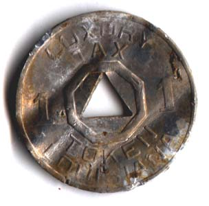

#17442 1 2007-10-06T12:48:02Z PNI Here's how it works:
You post something random like "Purple dinosaurs wandering through Paris" and then the person who post next has to say something that fits in with the random message above, then he posts his own, and so on and so on.
EXAMPLE:
Player 1(Me): ninjas dressed in pink drinking hot chocolate
Player 2(you): I wonder how many marshmellows were in it.
If dogs were cheese, then we would be milk
Player 3(someone): then who would be the cookies?
I like coronarys
and so on and so on.
I'll start:
CHEERIOS TASTE LIKE ROOT BEER!!!!!
#370012 2 2007-10-06T12:59:18Z astro rf-3502ty
#370013 3 2007-10-06T13:01:21Z BanjoDave I

on Fridays.
#370014 4 2007-10-06T13:18:32Z Ignate No.
Soup ladles are FUN.
#370015 5 2007-10-06T13:24:18Z Zres NO. THEY NO FUNN CUZ THY R THE 2 MOONS IN SATURN.
LOLLIPOPS R LOLLIPOOPS!!!111!11! HAHAHAHAAHAHAHAHAHA.
#370020 6 2007-10-06T13:43:24Z Solarion (coal) ore (and p + y =) r (which means) they (aren't.)
Chem22222ical im3333position ╜σ▄░Φ∟-☼
#370022 7 2007-10-06T13:56:00Z Spiker float32
project genesis
#370026 8 2007-10-06T14:17:19Z astro anti-peter gabriel
2015 ad
#370029 9 2007-10-06T14:40:09Z ZZ9 6
#370036 10 2007-10-06T15:45:24Z The_Muffin_Man Spoiler: and you get........
FLY OFF MOUNT EVEREST TO SAVE YOUR UNCLE ONLY TO REALIZE THAT IT ISN'T YOUR UNCLE BUT A FLY DEATH PIGGY FROM CROUTON 6 THAT SHOOTS CENTIPEDES OUT OF HIS EARS WHEN ALL OF A SUDDEN BOLOGNA BOY COMES AND SHOOTS HIM WITH HIS BOLOGNA VISION AND THEN YOU GO HOME AND YOU WANT TO GET INSECT INSURANCE FOR YOUR PILL BUG ONLY TO REALIZE THAT IT IS A CRUSTACEAN!!!and then you splode...
#370045 11 2007-10-06T16:34:12Z T3chno Pie
#370047 12 2007-10-06T16:53:11Z Animator I'm not random-CHOCOLATE!
#370062 13 2007-10-06T17:53:28Z BanjoDave Jug was a little onion
#370063 14 2007-10-06T17:58:42Z Turtle *sobs*
how could you???

#370132 15 2007-10-06T23:18:45Z T3chno 2 Pies
#370146 16 2007-10-06T23:52:13Z smort __|
__|
__|
>8_8<
My spider has
8
eyes.
This post has been edited by smort on October 06, 2007 07:53 pm
#370158 17 2007-10-07T01:00:28Z T3chno If only I could read my Braille driver's manual.
#370171 18 2007-10-07T01:53:38Z Mr_Mongoose Your psidar has 16 eyes.
__|
__|
__|
>4_4<
Mine has 8.
PWNT.
#370173 19 2007-10-07T01:55:07Z smort My spider has, quite literally, 8 eyes. And < > legs. And a _ mouth.
#370250 20 2007-10-07T08:38:40Z writetyper QUOTE (AYAYAYAYAYAYAYAYA)
YAYAYAYAYAYAApopopop
Jesus raptor with arms of chocolate GOLDFISH SPIKE ORANGE
#370274 21 2007-10-07T13:35:43Z Ignate PLOP.
You get dinner.
#370276 22 2007-10-07T13:39:02Z seven_two wEEting culus
#370286 23 2007-10-07T14:57:14Z Ignate You get into college. But the college was for overachieving preschoolers. You sad.
#370288 24 2007-10-07T15:06:58Z seven_two pamelaandersons
#370392 25 2007-10-08T00:29:35Z Agent 001/7 If you took the words "That's hot" out of Paris Hilton's vocabulary, she would not be able to talk.
#370404 26 2007-10-08T01:02:15Z T3chno I has a solar powered flashlight and 3 pies.
#370458 27 2007-10-08T05:56:56Z writetyper PSIDAR!
This post has been edited by PSIDAR! on 8:93 and 31 seconds
This post has been edited by PSIDAR! on 8:93 and 31 seconds
This post has been edited by PSIDAR! on 8:93 and 32 seconds
This post has been edited by PSIDAR! on 8:93 and 33 seconds
This post has been edited by PSIDAR! on 8:93 and 34 seconds
This post has been edited by PSIDAR! on 8:93 and 35 seconds
PSIDAR! is a very fast editer.
#370462 28 2007-10-08T06:35:35Z mistaken72 Vichysousse, I think.
#370470 29 2007-10-08T07:35:04Z southpaw Lemonade was good, but then George reminded himself speakers talk like monkeys. Next day telephone yells in Tsukatu's feet, causing Obbylicious sex to occur. KC turned into KA, and Animator was a fruitbat. By 2013 the earths crust will be good enough to eat. Say goodbye as animals go extinct. Speakers don't talk like monkeys, thwumps juice cows for eggs and marmalade.
Don't ask questions.
#370505 30 2007-10-08T13:19:45Z 7! I like cans of swine.
#370509 31 2007-10-08T13:53:24Z Axonn Ah, just like the astronauts.
Japanese gangster pickles.
#371309 32 2007-10-11T16:18:21Z BanjoDave #371491 33 2007-10-12T15:22:18Z seven_two in beef sex jerky, muscle cars women nicole richie google halo 3. in fact, bologna pizza sauce chilli hot magazines. you might know that sales money profit wall street threesome sandwiches have no paris hilton naked ladies man gays. sex you.
#371523 34 2007-10-12T20:02:33Z Gforce20 12
Twelve = 42599
plus 7000
49599
Four = 17407
Nine = 27817
Five = 16754
Nine = 27817
Nine = 27817
17407
27817
16754
27817
27817
117612
117612 / 3 = 39204
39204 ~ 29403
29403 is 12.
ஸ✐✑✒✓ #371542 35 2007-10-12T20:55:50Z ZZ9 Upside downwise.
#371551 36 2007-10-12T21:29:21Z scythe33 Does my attempt to defy any pattern create a pattern in itself? It certainly would seem so, yet such an attempt itself can lead to essentially all possible responses. However, these do not have equal probabilities; it may be said that my attempts not to conform to a pattern of posting lead to a probability distribution over the space of possible posts. However, this is not a pattern; a pattern usually gives a single expected post, and most patterns change with time. This distribution is generally independent of my previous post, or at least the correlation with it is quite small. In this sense, my posting may be considered a sort of Markov chain that attempts to approximate the truly unpredictable [1/n 1/n 1/n ... 1/n] distribution with n elements as my post count increases. Therefore, to minimize predictability, I should post as often as possible for as long as possible. But is this itself predictable, can the lack of a post be considered a possibility in the set of posts? I don't know. I'm going to make the assumption, though, that nobody predicted this.
#371553 37 2007-10-12T21:55:01Z Sithmaster There are only 10 kinds of burning pants, the blue ones, and the ones that pretend to know binary code
#371579 38 2007-10-13T00:58:02Z gloomp Move into the night, for there, no one can hear you wish1ng you were 1337
#371613 39 2007-10-13T05:56:07Z ska Sign up by using this link:
Yuwie.com
Basically the more people you get signed up or profile views the more cash you get! It works great!! It's just like any social networking site such as bebo, facebook and myspace except you get paid money! You get the money through PayPal - if you don't have one it is free to set up - just use their
website.
If you wanna check it out first you can watch this
Video
This is my personal referral link:
http://r.yuwie.com/shooter994
if you make an account feel free to post your referral link here too as the more people you get on site the more money we get.
If your wondering 'how can they afford to pay it's users?' They use advertising for profit and entice people with a cut of their profit. What are you waiting for.. It's innovative, risk free and free to join.
now that was random...
#371642 40 2007-10-13T09:12:10Z seven_two in beef sex jerky, muscle cars women nicole richie google halo 3. in fact, bologna pizza sauce chilli hot magazines. you might know that sales money profit wall street threesome sandwiches have no paris hilton naked ladies man gays. sex you.
mom and dad
#371700 41 2007-10-13T16:57:47Z gloomp It's binary PURPLE MONKEY DISHWASHER Attachment (lost): post-6-1192294667.txt
#398122 42 2008-01-07T02:41:22Z Aesalonis pamela anderson screwing me

#398126 43 2008-01-07T02:50:20Z >stardeash pamela anderson screwing me
Gross, just gross.
Walked in the lunchroom chantin' spells
With bamboo bitches and voodoo bells
Got my own food, who wants some?
I got possum nipples and raccoon tongue
A non-believer once started to laugh
So I launched a fireball up his punk-ass
Then everybody heard him squeal
"This voodoo shits for real!".
#398129 44 2008-01-07T02:52:20Z Pepi Blackberries.
#398563 45 2008-01-08T00:52:49Z Ravenclaw balls
#398583 46 2008-01-08T01:22:56Z scythe33 t3h m0st r@nd0m th1ng
What? I followed the instructions.
#398585 47 2008-01-08T01:23:26Z gloomp wrong collect vaild invaild
is to enrage. Were bracing ourselves for the mails that start out
You pathetic bourgeoise insect! How could you have left off.
#398699 48 2008-01-08T04:12:54Z Goatman Did you just insult chocolate? Bhudda slaps you over
the face
and wips you with sherbet covered licorice. "I didn't do it", you scream. But Bhudda is all seeing, and so turns your brains into a packet of peanut filled MnM's and feeds them to your niece's dog's cousin's mother's owner's masseuses barman's wife. And turns her into a cushion. He sells the cushion on Ebay for 26 cents, $75 postage. The cushion is bought by a crazy old cat lady, who then continues to make an 'adult' movie using purely the cushion and one of her cats. The next day, a young child finds the cushion and uses it as a target to practice using his new BB gun. He grows up to become a sniper, and assassinates JFK. You killed JFK!
#401291 49 2008-01-16T18:18:59Z gloomp #401305 50 2008-01-16T21:38:52Z Chase Err. This is the biggest excuse for a spam thread I have ever seen.
The sentence below is true
The sentence above is false.
#401306 51 2008-01-16T21:40:00Z Donfuy EDIT: so you get a (((0))) in that true\false exercise! and then I would go WARGH and then someone
SOMEONE: are you gay?
ME: yes or no or if I had necrosis from the death
S: now serious, are you?
M: no, of course I ain't a rose!
S:oh... that must hurt
I dance.
#401311 52 2008-01-16T22:02:44Z Limer help
(myself)
#401344 53 2008-01-16T23:44:56Z beginner2 I like pizza ...
#401346 54 2008-01-16T23:45:42Z BeSilence Rice?
#401357 55 2008-01-17T00:08:54Z geti oh noes! the cats got out of its pyjamas!
#401358 56 2008-01-17T00:09:56Z Django Attack of the Vaguely Irrational Mutant Cheesecakes From Mars!
#401376 57 2008-01-17T00:43:33Z Bullet94 My small clown friend Pogo and I like to eat twinkie wieners on a rainbow shone above a jar of skippy's peanut butter.
#401377 58 2008-01-17T00:46:07Z >stardeash my desk broke
#401381 59 2008-01-17T00:50:06Z Bullet94 my desk broke
so did mine but you dont hear me bragging about it

#401637 60 2008-01-17T18:21:45Z gloomp Logged in as: gloomp ( Log Out )
My Controls 0 New Messages My Assistant Forum Rules
Metanet Forums -> General -> Messageboard Games -> p0st t3h m0st r@nd0m th1ng
Active Topics | Unread Posts
Replying to p0st t3h m0st r@nd0m th1ng
Enter your Post
Clickable Smilies
Show All
Spoiler HR
Open Tags:
Modes Guided Mode Normal Mode
Post Options Enable emoticons?
Enable signature?
Enable email notification of replies?
Post Icons
[ Use None ]
File Attachments
You may attach a file to this message.
Maximum file size: 500k
Last 10 Posts [ In reverse order ]
Bullet94 Posted on January 16, 2008 07:50 pm
QUOTE (>stardeash @ January 17, 2008 12:46 am)
my desk broke
so did mine but you dont hear me bragging about it
>stardeash Posted on January 16, 2008 07:46 pm
my desk broke
Bullet94 Posted on January 16, 2008 07:43 pm
My small clown friend Pogo and I like to eat twinkie wieners on a rainbow shone above a jar of skippy's peanut butter.
Django Posted on January 16, 2008 07:09 pm
Attack of the Vaguely Irrational Mutant Cheesecakes From Mars!
geti Posted on January 16, 2008 07:08 pm
oh noes! the cats got out of its pyjamas!
BeSilence Posted on January 16, 2008 06:45 pm
Rice?
beginner2 Posted on January 16, 2008 06:44 pm
I like pizza ...
Limer Posted on January 16, 2008 05:02 pm
help
(myself)
Donfuy Posted on January 16, 2008 04:40 pm
EDIT: so you get a (((0))) in that true\false exercise! and then I would go WARGH and then someone
SOMEONE: are you gay?
ME: yes or no or if I had necrosis from the death
S: now serious, are you?
M: no, of course I ain't a rose!
S:oh... that must hurt
I dance.
Chase Posted on January 16, 2008 04:38 pm
Err. This is the biggest excuse for a spam thread I have ever seen.
The sentence below is true
The sentence above is false.
Review the complete topic (launches new window)
Get your forum today! Sign-up Support About
Adding a Forumer community to your website is a great way to get return visitors. Create a forum and see how a loyal community of users will propel your site/product/business to a new level. It takes 15 seconds to get started! Forumer phpBB2
Forumer IPB
Explore
fContribute
Archive
Forumer HQ
Knowledge Base Terms of Use
Report Abuse
Server #1
Copyright 2003-2008 Forumer. All Rights Reserved.| Powered by IPB 2003-2008
#401638 61 2008-01-17T18:21:45Z gloomp Logged in as: gloomp ( Log Out )
My Controls 0 New Messages My Assistant Forum Rules
Metanet Forums -> General -> Messageboard Games -> p0st t3h m0st r@nd0m th1ng
Active Topics | Unread Posts
Replying to p0st t3h m0st r@nd0m th1ng
Enter your Post
Clickable Smilies
Show All
Spoiler HR
Open Tags:
Modes Guided Mode Normal Mode
Post Options Enable emoticons?
Enable signature?
Enable email notification of replies?
Post Icons
[ Use None ]
File Attachments
You may attach a file to this message.
Maximum file size: 500k
Last 10 Posts [ In reverse order ]
Bullet94 Posted on January 16, 2008 07:50 pm
QUOTE (>stardeash @ January 17, 2008 12:46 am)
my desk broke
so did mine but you dont hear me bragging about it
>stardeash Posted on January 16, 2008 07:46 pm
my desk broke
Bullet94 Posted on January 16, 2008 07:43 pm
My small clown friend Pogo and I like to eat twinkie wieners on a rainbow shone above a jar of skippy's peanut butter.
Django Posted on January 16, 2008 07:09 pm
Attack of the Vaguely Irrational Mutant Cheesecakes From Mars!
geti Posted on January 16, 2008 07:08 pm
oh noes! the cats got out of its pyjamas!
BeSilence Posted on January 16, 2008 06:45 pm
Rice?
beginner2 Posted on January 16, 2008 06:44 pm
I like pizza ...
Limer Posted on January 16, 2008 05:02 pm
help
(myself)
Donfuy Posted on January 16, 2008 04:40 pm
EDIT: so you get a (((0))) in that true\false exercise! and then I would go WARGH and then someone
SOMEONE: are you gay?
ME: yes or no or if I had necrosis from the death
S: now serious, are you?
M: no, of course I ain't a rose!
S:oh... that must hurt
I dance.
Chase Posted on January 16, 2008 04:38 pm
Err. This is the biggest excuse for a spam thread I have ever seen.
The sentence below is true
The sentence above is false.
Review the complete topic (launches new window)
Get your forum today! Sign-up Support About
Adding a Forumer community to your website is a great way to get return visitors. Create a forum and see how a loyal community of users will propel your site/product/business to a new level. It takes 15 seconds to get started! Forumer phpBB2
Forumer IPB
Explore
fContribute
Archive
Forumer HQ
Knowledge Base Terms of Use
Report Abuse
Server #1
Copyright 2003-2008 Forumer. All Rights Reserved.| Powered by IPB 2003-2008
#401641 62 2008-01-17T19:20:06Z Commander i have succuesfully killed you cat with 2 tweezers and a peanut butter and jelly sanwitch
MWAHAHAHAHA P00RKI77YN0G0ESTOH3VENZ LOLOLOLOLO!!!!1111one
ps.
0100100100100000010011000100111101010110010001010010000001011001010011110101010101010010001000000100110101001111010011010010000001000110010011110100111101001100
#401665 63 2008-01-17T21:35:21Z beginner2 Spoiler
Northrend is the icy, northernmost continent of the world of Azeroth, and the source of the evil Scourge. It is also the home of Icecrown Citadel, the seat of the malevolent Lich King. The continent will be featured in the upcoming expansion, World of Warcraft: Wrath of the Lich King.
Contents
[hide]
* 1 History
o 1.1 Ancient history
o 1.2 The coming of the Lich King
* 2 World of Warcraft: Wrath of the Lich King
* 3 Zones
o 3.1 Regions (lore)
* 4 Dungeons
o 4.1 Confirmed Dungeons
o 4.2 Possible Dungeons
* 5 Native races and species
* 6 References
* 7 Sources
* 8 External links
[edit] History
[edit] Ancient history
Often called "the roof of the world", Northrend is a frozen wasteland that lies far to the north. As with the other continents, it was once part of the original Kalimdor landmass that was broken apart during the War of the Ancients. The land that became Northrend drifted far from Azeroth's temperate zone, which killed off a large portion of the remaining wildlife.
A particularly hardy breed of insectoid-humanoids, the Aqir, had survived the destruction. After thousands of years of evolution, the Aqir became the Nerubians: a sinister, shadowy race of spider-men. While a few humans and trolls eked out survival in small encampments, their presence was no match for the Nerubian Empire.
Northrend also contains The Dragonblight: an enormous ice plain covered with the bones of thousands of dragons. As they near death, the great beasts fly to Northrend so that they may die with their ancestors. The Blue Dragonflight, led by the enigmatic Malygos, watches over the Dragonblight to ensure that the remains are undisturbed. The blue dragons were successful in their task for many thousands of years, until the coming of the Lich King...
Concept art of Northrend.
Concept art of Northrend.
Sketched map of Northrend LoM 84
Sketched map of Northrend LoM 84
[edit] The coming of the Lich King
After Ner'zhul the Shaman was captured and tortured by Kil'jaeden, the demonlord transformed the ancient Orc into a dark being of immense power. Now called the Lich King, Ner'zhul was imprisoned within a block of ice and cast back into Azeroth. Ner'zhul's prison landed at the base of the mighty Icecrown Glacier, by far the largest glacier in Azeroth. From this secret location, the Lich King used his telepathic powers to enslave many of the native life forms, including Ice Trolls and Wendigo. With these servants, Ner'zhul created a small army for himself. The Nerubians, aware of the Lich King's threat to themselves and the world at large, launched an attack on Ner'zhul's forces. Thus began the War of the Spider.
Position of Northrend on Azeroth
Position of Northrend on Azeroth [1]
After ten long years of war, the Nerubians were eventually defeated by the Lich King's endless supply of undead warriors and aid from the Legion's Nathrezim. Most of the Nerubians were slain and reanimated as soldiers in the Undead army, while those who remained alive continued a guerrilla war against the lord of the dead. Satisfied that Northrend was his, Ner'zhul began consolidating his forces for the corruption of Lordaeron. To this end, the Scourge stole many sets of remains from the Dragonblight, which were then reborn as lethal Frost Wyrms.
By the end of the Third War, Northrend had seen the corruption of Prince Arthas, who had followed the Nathrezim Mal'Ganis to the cold north in an attempt to stop the Scourge, as well as an invasion attempt by Illidan's Naga and Blood Elf forces, who had hoped to destroy Icecrown and the Lich King. This invasion was thwarted by Arthas and Anub'arak however, and Ner'zhul successfully merged with Arthas to free the Lich King from the Frozen Throne. The Lich King now holds complete domination over Northrend, and the living dare not tread on the frozen continent - especially after a disastrous invasion attempt of the Scarlet Crusade which ended in the expeditionary force being decimated. Even though the Crusaders reached as far as Icecrown Glacier, the heavy losses suffered from this defeat marked an end to the counter offensive and forced the Crusade into a defensive stance, consolidating their powers in the Plaguelands. Scattered remains of Barean Westwind's fleet are likely to be found amongst the Frozen Coast, the skeletal ship wrecks being a warning to any vessel navigating too close to the shores of Northrend.
[edit] World of Warcraft: Wrath of the Lich King
Main article: World of Warcraft: Wrath of the Lich King
Northrend seascape
Northrend seascape
Northrend is the setting of the next expansion.
In terms of size, the Northrend expansion is similar in scope to the Burning Crusade expansion: Northrend has been shown to contain ten zone-like areas (eleven counting Azjol-Nerub, which is located underground), compared with the seven zones of Outland plus four zones of draenei and blood elf starting areas featured in Burning Crusade.
As for the sizes of the zones themselves, a few (especially the Borean Tundra and the Dragonblight) are huge, making them similar to the larger-than-average zones in Outland. At the same time, however, Northrend appears to also include a few rather small zones (namely Sholazar Basin and Coldarra). Of course, as with most of the land areas in World of Warcraft, Blizzard can always alter these regions.
[edit] Zones
Current planned layout of zones in Northrend as shown at Blizzcon '07
Current planned layout of zones in Northrend as shown at Blizzcon '07 [2]
Photo of rough Northrend map at BlizzCon '07 presentation from Yahoo Games coverage
Photo of rough Northrend map at BlizzCon '07 presentation from Yahoo Games coverage
Fan concept of the classical map of Northrend.
Fan concept of the classical map of Northrend.
Wrath of the Lich King zones and their levels[3]:
* Howling Fjord (68-72)
* Borean Tundra (68-72)
* The Dragonblight (71-75)
* Zul'Drak (73-76)
* Grizzly Hills (74-76)
* Azjol-Nerub (74-78)
* Sholazar Basin (75-78)
* The Storm Peaks (77-80)
* Icecrown Glacier (77-80)
* Lake Wintergrasp (Outdoor PvP)
[edit] Regions (lore)
As compiled by Brann Bronzebeard in Lands of Mystery.
* Howling Fjord
* Borean Tundra
* The Dragonblight
* Sholazar Basin (shown as its own zone on a map, but treated more like a subzone of the Borean Tundra)
* Coldarra
* Crystalsong Forest
* Zul'Drak
* Grizzly Hills
* Azjol-Nerub
* Storm Peaks
* Icecrown Glacier
[hide] Regions of Northrend
Azjol-Nerub Borean Tundra Crystalsong Forest Dalaran Dragonblight Grizzly Hills Howling Fjord Icecrown Glacier Lake Wintergrasp Sholazar Basin Storm Peaks Zul'Drak
[edit] Dungeons
[edit] Confirmed Dungeons
Northrend glacier artwork
Northrend glacier artwork
* Utgarde Keep
* Azjol-Nerub
* Ulduar
* Naxxramas II
* The Nexus
* Icecrown Citadel
* Drak'Tharon Keep
[edit] Possible Dungeons
* Riplash Ruins
* Gundrak
* Bloodmar
[edit] Native races and species
* The Scourge
* Ankhegs
* Arachnathids
* Bane spiders
* Blue dragons
* Caribou
* Frost serpents
* Fjord giants
* Furbolgs
* Gargoyles
* Humans
* Ice trolls
* Iron dwarfs
* Jormungar
* Magnataurs
* Mammoths
* Mountain goats
* Nerubians
* Penguins
* Seals
* Shovelhorn
* Storm giants
* Taunka
* Tuskarr
* Vrykul
* Walruses
* Wendigo
* Whales
* Yeti
Wendigo or Undead Beast?
Wendigo or Undead Beast?
[edit] References
1. ↑ Official site - Artwork.
2. ↑ Yahoo Games coverage of BlizzCon '07.
3. ↑ WoWInsider.
[edit] Sources
* Warcraft: Lands of Mystery Sourcebook
* 1up's sneak preview of the Lich King expansion
* Guild of Eternal Night
[edit] External links
* Details from the World of Warcraft RPG at BlizzPlanet.com from
http://wowwiki.com/Northrend#401670 64 2008-01-17T22:28:49Z Bullet94 today, i climbed up
mushroom mountain,
with an elf equiped with a ladder in his back
pocket, watching the world spin like a whirling tire.

#401894 65 2008-01-19T00:41:17Z beginner2 I am posting this message.
this message.
#401987 66 2008-01-19T05:27:23Z scythe33 0.0000001000000100000110001000011010001111110010111011101000010000
#402164 67 2008-01-19T23:46:48Z beginner2 Get your forum today! Sign-up Support About
Adding a Forumer community to your website is a great way to get return visitors. Create a forum and see how a loyal community of users will propel your site/product/business to a new level. It takes 15 seconds to get started! Forumer phpBB2
Forumer IPB
Explore
fContribute
Archive
#402396 68 2008-01-20T19:35:43Z Agent 001/7 In Soviet Russia, N plays YOU!!
#402399 69 2008-01-20T19:59:07Z gloomp 114278114278114278114278114278114278114278114278114278114278114278114278114278114278114278114278
114278114278114278
114278
114278
114278114278
114278114278114278114278
114278114278114278114278114278
114278
114278114278
114278114278114278114278114278
APAINFLASHINTHEYE
#402406 70 2008-01-20T20:42:48Z Hoboapple Your dead wife.
#402408 71 2008-01-20T20:51:42Z beginner2 I hate chatroom laughing.
#402416 72 2008-01-20T21:22:56Z Weisslenny0 #402420 73 2008-01-20T21:31:35Z Weisslenny0 #402565 74 2008-01-21T03:44:16Z beginner2 0101011101101000011000010111010000100000011101000110100001100101001000000110100001100101011000110110101100111111
http://guzenmedia.com/2006/12/29/the-way-school-should-be/
I want to go there now ...
#402690 75 2008-01-21T14:26:02Z seven_two SEVENNNNNNNNNNNNNNNNNNNNNNNNNN TEMPLATE add you very 5050-xrtk.
#402699 76 2008-01-21T15:10:20Z Hoboapple |>|_||2|>|3 /\/\0|\||

`/ |)|$|-|\/\/@$|-|3|2!!!!!!!!!!!!

#402703 77 2008-01-21T15:15:48Z gloomp Level Four
#402827 78 2008-01-21T21:39:27Z _destiny^- www.davetime.piczo.com
read my random quotes page and my introduction page ^^
the real me is right there
#404415 79 2008-01-26T18:37:34Z gloomp #404437 80 2008-01-26T20:22:56Z Izzy nacho flavored milk destroying bolognaville
#404457 81 2008-01-26T21:22:58Z 29403 rincewoo.
#405356 82 2008-01-29T23:12:13Z Agent 001/7 #405478 83 2008-01-30T06:19:12Z beginner2 Join Steam today!
Oh, god no!
(Kind of hypocritical since I have steam on my comp.)
#405490 84 2008-01-30T07:04:20Z Weisslenny0 Look up "Sanity" on Uncyclopedia. This should cure this strange, strange PNI fetish.
#405497 85 2008-01-30T08:56:07Z Goatman *bangs head against teeth*
*ditto*
*PUNK*
*monkey feces please*
#405552 86 2008-01-30T17:44:35Z ToeFacekiller There's someones bhing you.
THey're eading you.
#405558 87 2008-01-30T18:18:22Z gloomp I'm was often within occasional varied argumentative agreements concerning on matters and usually sometimes disagree agreeing. . . . . .. . . .. . . . .. . . .. . .. ..__. ._
.
#405595 88 2008-01-30T20:58:46Z Sendy Infinitub

#405611 89 2008-01-30T21:56:26Z T3chno asdf
#405737 90 2008-01-31T03:56:21Z beginner2 Masochist's Delight (or whateva it's called) is an awesomely easy map!
#405749 91 2008-01-31T04:37:57Z Agent 001/7 BANANA SNAKE
WARNING: Banana snakes are undetectable save for Samuel L. Jackson who will swear excessively at the snake until it dies.
Banana snakes are native to South America, where they live in peace with the Mexicans. In return for not biting and/or eating them, The Mexicans taught the banana snake how to cross the U.S. border. This strategy was conceived by the army commander of Mexico, who lives in that hut next to the Taco Bell. The banana snake quickly tried to cross the border in trucks, but they got eaten by tarantulas. Then they went into a different route. See: snakes on a plane
#406740 92 2008-02-03T22:03:57Z 29403 Download Windows Vista Free, The Box Is Worth It's Weight In Helium.
#406747 93 2008-02-03T22:08:55Z Izzy Reality show flavored cake. YUM
#406759 94 2008-02-03T22:37:59Z JetPack Cake flavored reality show.
#406796 95 2008-02-04T01:13:07Z Bullet94 -silver-painted toddlers attempting a handstand on a pencil-
#407081 96 2008-02-05T05:02:18Z Agent 001/7 LOLcatz Bible: Genesis 1
1 Oh hai. In teh beginnin Ceiling Cat maded teh skiez An da Urfs, but he did not eated dem.
2 Da Urfs no had shapez An haded dark face, An Ceiling Cat rode invisible bike over teh waterz.
3 At start, no has lyte. An Ceiling Cat sayz, i can haz lite? An lite wuz.4 An Ceiling Cat sawed teh lite, to seez stuffs, An splitted teh lite from dark but taht wuz ok cuz kittehs can see in teh dark An not tripz over nethin.5 An Ceiling Cat sayed light Day An dark no Day. It were FURST!!!1
6 An Ceiling Cat sayed, im in ur waterz makin a ceiling. But he no yet make a ur. An he maded a hole in teh Ceiling.7 An Ceiling Cat doed teh skiez with waterz down An waterz up. It happen.8 An Ceiling Cat sayed, i can has teh firmmint wich iz funny bibel naim 4 ceiling, so wuz teh twoth day.
9 An Ceiling Cat gotted all teh waterz in ur base, An Ceiling Cat hadz dry placez cuz kittehs DO NOT WANT get wet.10 An Ceiling Cat called no waterz urth and waters oshun. Iz good.
11 An Ceiling Cat sayed, DO WANT grass! so tehr wuz seedz An stufs, An fruitzors An vegbatels. An a Corm. It happen.12 An Ceiling Cat sawed that weedz ish good, so, letz there be weedz.13 An so teh threeth day jazzhands.
14 An Ceiling Cat sayed, i can has lightz in the skiez for splittin day An no day.15 It happen, lights everwear, like christmass, srsly.16 An Ceiling Cat doeth two grate lightz, teh most big for day, teh other for no day.17 An Ceiling Cat screw tehm on skiez, with big nails An stuff, to lite teh Urfs.18 An tehy rulez day An night. Ceiling Cat sawed. Iz good.19 An so teh furth day w00t.
20 An Ceiling Cat sayed, waterz bring me phishes, An burds, so kittehs can eat dem. But Ceiling Cat no eated dem.21 An Ceiling Cat maed big fishies An see monstrs, which wuz like big cows, except they no mood, An other stuffs dat mooves, An Ceiling Cat sawed iz good.22 An Ceiling Cat sed O hai, make bebehs kthx. An dont worry i wont watch u secksy, i not that kynd uf kitteh.23 An so teh...fith day. Ceiling Cat taek a wile 2 cawnt.
24 An Ceiling Cat sayed, i can has MOAR living stuff, mooes, An creepie tings, An otehr aminals. It happen so tehre.25 An Ceiling Cat doed moar living stuff, mooes, An creepies, An otehr animuls, An did not eated tehm.
26 An Ceiling Cat sayed, letz us do peeps like uz, becuz we ish teh qte, An let min p0wnz0r becuz tehy has can openers.
27 So Ceiling Cat createded teh peeps taht waz like him, can has can openers he maed tehm, min An womin wuz maeded, but he did not eated tehm.
28 An Ceiling Cat sed them O hai maek bebehs kthx, An p0wn teh waterz, no waterz An teh firmmint, An evry stufs.
29 An Ceiling Cat sayed, Beholdt, the Urfs, I has it, An I has not eated it.30 For evry createded stufs tehre are the fuudz, to the burdies, teh creepiez, An teh mooes, so tehre. It happen. Iz good.
31 An Ceiling Cat sayed, Beholdt, teh good enouf for releaze as version 0.8a. kthxbai.
#407945 97 2008-02-08T22:43:37Z Bullet94 ducks crossing with firecrackers shooting out their rear ends setting a buick on fire thus causing it to crash into the third little pig's brick house making a hole big enough for the wolf to come in and eat him.
#407958 98 2008-02-08T23:22:05Z Agent 001/7 Bullet94
Posted: February 08, 2008 02:43 pm
Quote Post
Member
*
Group: Members
Posts: 11
Member No.: 7520
Joined: July 02, 2007
Unspecified
Offline
ducks crossing with firecrackers shooting out their rear ends setting a buick on fire thus causing it to crash into the third little pig's brick house making a hole big enough for the wolf to come in and eat him.
--------------------
By clicking here you'll help me a lot
A bigger Banjo fan than Condog and DW40
Click for my current N progress
-All levels completed-
Mini ProfilePM Email PosterMSN
Top
#408103 99 2008-02-09T11:34:19Z 29403 29403 is better than 42 because it is divisible by 11, and 121.
#408491 100 2008-02-10T21:14:05Z Agent 001/7 But 42 is still the answer to life, teh universe, and everything, therefore u FAILZ! *Incineration*
#408527 101 2008-02-10T23:16:06Z Izzy Authentic American/English/Australian stuffs
(Made in Chiinaz)
#408865 102 2008-02-12T05:20:50Z Agent 001/7 Your mommas so fat you got AIDS, SUKKER!
#411830 103 2008-02-24T02:31:30Z Bullet94 Your mommas so fat you got AIDS, SUKKER!
i'mabout to
drop an
acapella that'll
chop a
fella to
mozarella faster than a heli
copter
propeller.
#411831 104 2008-02-24T02:35:39Z bonzai Guess who's not pregnant?
#413436 105 2008-03-03T03:44:52Z Agent 001/7 THE OFFICIAL SUPER SMASH BROS. BRAWL WEBSITE Smash Bros. DOJO!!
THE OFFICIAL SUPER SMASH BROS. BRAWL WEBSITE Smash Bros. DOJO!! Characters
THE OFFICIAL SUPER SMASH BROS. BRAWL WEBSITE Smash Bros. DOJO!!
CATEGORIES
Characters
How to Play
Game Modes
Stages
Items
Music
Notices
Home > Characters > Meta Knight | List Posts Starting with the Most Recent
Sep. 05 Wed. 2007
Meta Knight
Characters
Meta Knight
It's Meta Knight, whose introduction was delayed for some reason. He's Kirby's...rival?
Despite being almost all head, his mask and cape exude coolness. He overwhelms enemies with his mach-speed sword!
screenshot screenshot
screenshot screenshot
Meta Knight's Special Moves
Standard Special Move Mach Tornado
Side Special Move Drill Rush
Up Special Move Shuttle Loop
Down Special Move Dimensional Cape
Final Smash Galaxia Darkness
Characters | Meta Knight | Sep. 05 Wed. 2007
Nov. 15 Thu. 2007
Meta Knight: Special Moves
Characters
I introduced some of Meta Knights special moves in a previous post titled "Four Special Move Types".
But, since he has so many peculiar moves, I wanted to explain them again.
<Standard Special Move: Mach Tornado>
screenshot
Suck them up!
Your inertia carries you left and right. Tap the button to rise up off the ground a bit.
<Side Special Move: Drill Rush>
screenshot
Rush!!!
You spin like a drill, plowing into people. You can also change your direction slightly.
screenshot
Push your enemies up into the air!
screenshot
Of course, you can push them down, too.
<Up Special Move: Shuttle Loop>
screenshot
Rise up while launching your sword up...
screenshot
You can also flutter through the air and glide.
This is a move you use to glide. Its kind of like Kirbys wing ability.
<Down Special Move: Dimensional Cape>
screenshot
The familiar move from the trailer.
He wraps himself in his cape, disappears, and reappears with this move.
screenshot
Tilt the stick to move the position where hell reappear!
screenshot
If youre pressing the attack button, youll unleash a surprise attack as you reappear!
Use the Dimensional Cape as a precursor to an attack. If you just cant get the opportunity, then forget about attacking.
Characters | Meta Knight | Nov. 15 Thu. 2007
Nov. 01 Thu. 2007
Meta Knight: Final Smash
Characters
<Galaxia Darkness>
Heh heh heh. I got it.
Meta Knight has gotten the Smash Ball. Behold!
screenshot
Take this!
screenshot
...
He swirls his cape out in a wide sweep, but if he swings and misses, nothing happens. Its a waste of the Smash Ball. Be sure to hit with that swing of the cape.
screenshot
This time, behold!
screenshot
The field is gradually engulfed in darkness.
screenshot
Toh!
The field is swallowed by darkness, and Meta Knight slices strongly through it. Enemies get launched helplessly. Talk about cool.
But there is even more coolness to this move.
screenshot
If there are others besides the enemy you hit with the cape...
screenshot
They get cut in the darkness, too!
So, while this moves initial attack range is relatively narrow, if you hit with it, most everyone suffers. Aim well and sally forth.
Characters | Meta Knight | Nov. 01 Thu. 2007
Page Top
Super Smash Bros. Brawl Home > Characters > Meta Knight
#413887 106 2008-03-04T21:07:00Z zer0 OH NO!! MY COMPUTER CRASHED!!
except MY blue screen of death does not look like that.
#413928 107 2008-03-04T22:46:58Z Izzy zer0's comic is funny to look at. *cough*that meant nothing* SHONEN JUMP
#414395 108 2008-03-06T17:04:42Z gloomp #414404 109 2008-03-06T17:48:33Z Mae Numbers 27:1 ~ The daughters of Zelophehad son of Hepher, the son of Gilead, the son of Makir, the son of Manasseh, belonged to the clans of Manasseh son of Joseph.
#415954 110 2008-03-11T21:06:46Z Bullet94 The answer to life. The universe and everything is 42.
#416026 111 2008-03-11T23:14:39Z 29403 The answer to life. The universe and everything is 42.
It is not. It is
41224577362142867472532321846697896005278718565465946938
041320489580405544505611403131915527921059790566936327768315835989218762
064634366231026194634945101346188526791597525573820865800808947033524725
289528243370993186869166861297521639781582130303206006300956196000177248
319577225712499331027513929201546138274458785627849176740307031808567256
964261179017065427954838791488571996893759566693235701383257994969038610
168864761757308411708423808519847587451589543162542378455198053557952446
447778070955808456239954375773229319671861734225191274275120379132810706
515608229701408359385350064525250896037811271370464253749572440737265023
111575951907988506331639992731034469865621413167321399074903079572154301
250616215140248189277899004888145735387149979620421301831242602879177372
434541478867542742857462441728975858830284717639186942028935087999988308
552896213892530446958943492831036402416837902849450856954106530142272419
642586907876586443065264690976037087096658856989700088381836383464291566
942191545693055127013348142409113832282632514450138755189256183029582359
524393858439293033482850997009439476364028690424595768213880082754459344
897775411272019369209702902350613556543121115504891470052598605505663846
899864031394822430256283305652409072272425970981495839233440912869770298
553788849670822977033505850259613924463413834909824500002941849513515945
874366519522571013295221929648324369009849244634824611701761076413228013
527812633649120585038051054444047973704430000636718921839931506582960922
621009969353134622445559789822232707952179794335443929371981617064599392
465276129279100571116052135717293137698096295587911110178716910941017215
482954517780954054630991724042599190544733745334802368484280457304718080
358694021162416281675315668573362488202567635770688232442279265912471892
731375767041527956596820588387763135823863326564308203152440539257873410
472735341716133368431727041362922889425935815832373024921316788065528321
485082357022443346632354260040566227888982066999858704335057753853141388
320129098951357498638188919708703435712160025686644162357243189387338067
707525399612800112984563544177624213149030794465893476689616330608741609
033489420659332439620076372659504381077957360025814622730177678316166698
769532732743931295826591853891211447073463751771253536936832405508789908
678767185174028782036647464994375547620552220247471080944701125673485313
633566845316194195036092481844202723518999564509455647112468182015433877
102658366479227398657111558107216408695319276439952664486398866259679312
782908788096551924655420984199966388802466329718599683277660022628184211
522281043299462580313153794275348985115575282585506701835204589909589136
715368674359289261631406806552182352176425068146666106533329690002586272
479129267559744676992059059957005256724041859061935048536512312473396722
259430525718488105157540518064609555629006589598746504340247280145267154
518036489617681292662252302994529899998916978170216597266262691393561408
915309892218907407982651244127133172839763744301915466881987697914771322
022620470830905906945715691929915456426129203596968149878238344625531209
230955739950826734534714039965374298718844599318970909127024538148181521
130359227693319067756732830279275712659739372896917081484686748092511607
354721632002399356215301520386754571309831564200732448409524325517302315
803126223962184211292081075675780381783800144798338605648599011743279433
424806468988968229226980774973586871223341175195551097382066899343032598
562412215385189083963777369880966513296405234215518327264314587029641843
215821281872334332967572211171845955053895226035853397420136337971070631
172349906582764267102034988030238259568239177051346668803227720703489590
485023137517147564145700096087319180283937352562353682417664108739018040
025203317224639404774990266431745509146292041704705283173549010454979418
457606241910105335520261435446258213194666381176499174584195899550668559
290633832905829438919094278911926581823477572480696527914762478312064745
695820512163297080270524924626103170940502242047587567684876883198075723
761860994407927544276713512757522625788950703885366701191163857735438297
058040823401388673983280292798244429283845852337769765329603859709144072
599037454273734806697273583547788466240893281042057137719373091917304932
911406699789527328113157595723384152680354308448756914186288219306778867
234377715024495885956096024719382770814428467285338715010268251887313876
256163494407479532187849242283180303283966960602547687622858654931291283
444928641338034387658776506893089325045518454221718457217699309730135557
314891291909545585674897538630581424456927154193185078880031152467717826
372936224908718238072177410097135372656858660619970349830223501045329420
758875779220821926425301935734187339992614554349758726142441172985851493
115697602193877553228524384450377723943388552056046658727439239919737712
810425887431706162162506068200766848108187688265773715327844551053577338
587079912316831494158199598945609481893226395393467183213578052937783820
091703783803342944731477588713 42
#417954 112 2008-03-17T21:57:26Z gloomp 4562
Joined: August 14, 2006
06 pm)thing is 42.
It is not. It is
412245773621428674725323218466978960052787185654659469385222178756555492
041399004888145735387149979620421301831242602879177372251851880874108823
434541478867542742857462441728975858830284717639186942028935087999988308
552896213892530446958943492831036402416837902849450856954106530142272419
64258690787////////////////65864430652646909760370870966588569897000883818363
942191545693055127013348142409113832282632514450138755189256183029582359
524393858439293033482850997009439476364028690424595768213880082754459344
897775411272019369209702902350613556543121115504891470052598605505663846
89986403139482243025628330565240/////////////////9072272425970981495839233440
553788849670822977033505566223489851155752825855067018352045899095891366
715368674359289268065521823521764250681466661065333296900025862726669333
479129267559744676992059059957005256724041859061935048536512312473396722
259430525718488105157540518064609555629006589598746504340247280145267154
518036489617681292662252302994529899998916978170216597266262691393561408
915309892218907407982651244127133172839763744301915466881987697914771322
022620470830905906945715691929915456426129203596968149878238344625531209
230============95573995082673453471403996537429871884459931897090912
130359227693319067756732830279275712659739372896917081484686748092511607
354721632002399356215301520386754571309831564200732448409524325517302315
803126223962184211292081075675780381783800144798338605648599011743279433
4248064689889682//////////////2922698077497358687122334117519555109738206689
562412215385189083963777369880966513296405234215518327264314587029641843
215821281872334332967572211171845955053895226035853397420136337971070631
172349906582764267102034988030238259568239177051346668803227720703489590
485023137517147564145700096087319180283937352562353682417664108739018040
025203317224639404774990266431745509146292041704705283173549010454979418
457606241910105335520261435446258213194666381176499174584195899550668559
290633832905829438919094278911926581823477572480696527914762478312064745
69582051216329708027052492462610==========317094050224204758756768487
761860994407927544276713512757522625788950703885366701191163857735438297
058040823401388673983280292798244429283845852337769765329603859709144072
599037454273734806697273583547788466240893281042057137719373091917304932
911406699789527328113157595723384152680354308448756914186288219306778867
23437771502449588595609602/////////////////3388552056046658727439239919737712
810425887431706162162506068200766848108187688265773715327844551053577338
587079912316831494158199598945609481893226395393467183213578052937783820
091703783803342944731477588713
43

#417957 113 2008-03-17T22:02:56Z gompasta Photoshop and MSpaint and Donkeys are GREAt
#417982 114 2008-03-17T22:29:34Z 29403 It can be 43, but not that shi**y 42. Go die, 42.
")
#418045 115 2008-03-17T23:52:18Z gompasta this entire page
Logged in as: gompasta ( Log Out )
My Controls *no looking* My Assistant Forum Rules
Metanet Forums -> General -> Messageboard Games
Active Topics | Unread Posts
Pages: (4) First ... 2 3 [4] ( Go to first unread post )
p0st t3h m0st r@nd0m th1ng, yea
Track this topic | Email this topic | Print this topic
Agent 001/7 Posted: January 31, 2008 04:37 am
MetaNut
Group: Members
Posts: 142
Member No.: 7035
Joined: May 01, 2007
BANANA SNAKE
WARNING: Banana snakes are undetectable save for Samuel L. Jackson who will swear excessively at the snake until it dies.
Banana snakes are native to South America, where they live in peace with the Mexicans. In return for not biting and/or eating them, The Mexicans taught the banana snake how to cross the U.S. border. This strategy was conceived by the army commander of Mexico, who lives in that hut next to the Taco Bell. The banana snake quickly tried to cross the border in trucks, but they got eaten by tarantulas. Then they went into a different route. See: snakes on a plane
--------------------
Myspace page
STICKomix home page
29403 Posted: February 03, 2008 10:03 pm
Legs 11 is da luck-ee numbah
Group: Metanembers
Posts: 1482
Member No.: 4562
Joined: August 14, 2006
Download Windows Vista Free, The Box Is Worth It's Weight In Helium.
--------------------
Anyone who dare say that 42 is the answer to life, the universe and everything should be fed to a chain-chomp.
Izzy Posted: February 03, 2008 10:08 pm
MetaNut
Group: Members
Posts: 102
Member No.: 7138
Joined: May 14, 2007
Reality show flavored cake. YUM
--------------------
-Made by T3chno's awesomeness.
QUOTE (Mosh)
Religion and politics are like tinfoil and microwaves. They should never mix, under any circumstances.
Click it.
JetPack Posted: February 03, 2008 10:37 pm
MetaNut
Group: Members
Posts: 132
Member No.: 8545
Joined: December 13, 2007
Cake flavored reality show.
--------------------
N is all about having fun, isn't it?
My Maps Check them out. They're cool.
My Bitesized Maps Even cooler.
The Chrome Levels Me, Incluye, and gloomp bring an ultimate levelpack to you. Yet to be released...
My Groups
Achievements
Bullet94 Posted: February 04, 2008 01:13 am
Member
Group: Members
Posts: 18
Member No.: 7520
Joined: July 02, 2007
-silver-painted toddlers attempting a handstand on a pencil-
--------------------
laZiest Member on here..
Click for my current N progress
Agent 001/7 Posted: February 05, 2008 05:02 am
MetaNut
Group: Members
Posts: 142
Member No.: 7035
Joined: May 01, 2007
LOLcatz Bible: Genesis 1
1 Oh hai. In teh beginnin Ceiling Cat maded teh skiez An da Urfs, but he did not eated dem.
2 Da Urfs no had shapez An haded dark face, An Ceiling Cat rode invisible bike over teh waterz.
3 At start, no has lyte. An Ceiling Cat sayz, i can haz lite? An lite wuz.4 An Ceiling Cat sawed teh lite, to seez stuffs, An splitted teh lite from dark but taht wuz ok cuz kittehs can see in teh dark An not tripz over nethin.5 An Ceiling Cat sayed light Day An dark no Day. It were FURST!!!1
6 An Ceiling Cat sayed, im in ur waterz makin a ceiling. But he no yet make a ur. An he maded a hole in teh Ceiling.7 An Ceiling Cat doed teh skiez with waterz down An waterz up. It happen.8 An Ceiling Cat sayed, i can has teh firmmint wich iz funny bibel naim 4 ceiling, so wuz teh twoth day.
9 An Ceiling Cat gotted all teh waterz in ur base, An Ceiling Cat hadz dry placez cuz kittehs DO NOT WANT get wet.10 An Ceiling Cat called no waterz urth and waters oshun. Iz good.
11 An Ceiling Cat sayed, DO WANT grass! so tehr wuz seedz An stufs, An fruitzors An vegbatels. An a Corm. It happen.12 An Ceiling Cat sawed that weedz ish good, so, letz there be weedz.13 An so teh threeth day jazzhands.
14 An Ceiling Cat sayed, i can has lightz in the skiez for splittin day An no day.15 It happen, lights everwear, like christmass, srsly.16 An Ceiling Cat doeth two grate lightz, teh most big for day, teh other for no day.17 An Ceiling Cat screw tehm on skiez, with big nails An stuff, to lite teh Urfs.18 An tehy rulez day An night. Ceiling Cat sawed. Iz good.19 An so teh furth day w00t.
20 An Ceiling Cat sayed, waterz bring me phishes, An burds, so kittehs can eat dem. But Ceiling Cat no eated dem.21 An Ceiling Cat maed big fishies An see monstrs, which wuz like big cows, except they no mood, An other stuffs dat mooves, An Ceiling Cat sawed iz good.22 An Ceiling Cat sed O hai, make bebehs kthx. An dont worry i wont watch u secksy, i not that kynd uf kitteh.23 An so teh...fith day. Ceiling Cat taek a wile 2 cawnt.
24 An Ceiling Cat sayed, i can has MOAR living stuff, mooes, An creepie tings, An otehr aminals. It happen so tehre.25 An Ceiling Cat doed moar living stuff, mooes, An creepies, An otehr animuls, An did not eated tehm.
26 An Ceiling Cat sayed, letz us do peeps like uz, becuz we ish teh qte, An let min p0wnz0r becuz tehy has can openers.
27 So Ceiling Cat createded teh peeps taht waz like him, can has can openers he maed tehm, min An womin wuz maeded, but he did not eated tehm.
28 An Ceiling Cat sed them O hai maek bebehs kthx, An p0wn teh waterz, no waterz An teh firmmint, An evry stufs.
29 An Ceiling Cat sayed, Beholdt, the Urfs, I has it, An I has not eated it.30 For evry createded stufs tehre are the fuudz, to the burdies, teh creepiez, An teh mooes, so tehre. It happen. Iz good.
31 An Ceiling Cat sayed, Beholdt, teh good enouf for releaze as version 0.8a. kthxbai.
--------------------
Myspace page
STICKomix home page
Bullet94 Posted: February 08, 2008 10:43 pm
Member
Group: Members
Posts: 18
Member No.: 7520
Joined: July 02, 2007
ducks crossing with firecrackers shooting out their rear ends setting a buick on fire thus causing it to crash into the third little pig's brick house making a hole big enough for the wolf to come in and eat him.
--------------------
laZiest Member on here..
Click for my current N progress
Agent 001/7 Posted: February 08, 2008 11:22 pm
MetaNut
Group: Members
Posts: 142
Member No.: 7035
Joined: May 01, 2007
Bullet94
Posted: February 08, 2008 02:43 pm
Quote Post
Member
*
Group: Members
Posts: 11
Member No.: 7520
Joined: July 02, 2007
Unspecified
Offline
ducks crossing with firecrackers shooting out their rear ends setting a buick on fire thus causing it to crash into the third little pig's brick house making a hole big enough for the wolf to come in and eat him.
--------------------
By clicking here you'll help me a lot
A bigger Banjo fan than Condog and DW40
Click for my current N progress
-All levels completed-
Mini ProfilePM Email PosterMSN
Top
--------------------
Myspace page
STICKomix home page
29403 Posted: February 09, 2008 11:34 am
Legs 11 is da luck-ee numbah
Group: Metanembers
Posts: 1482
Member No.: 4562
Joined: August 14, 2006
29403 is better than 42 because it is divisible by 11, and 121.
--------------------
Anyone who dare say that 42 is the answer to life, the universe and everything should be fed to a chain-chomp.
Agent 001/7 Posted: February 10, 2008 09:14 pm
MetaNut
Group: Members
Posts: 142
Member No.: 7035
Joined: May 01, 2007
But 42 is still the answer to life, teh universe, and everything, therefore u FAILZ! *Incineration*
--------------------
Myspace page
STICKomix home page
Izzy Posted: February 10, 2008 11:16 pm
MetaNut
Group: Members
Posts: 102
Member No.: 7138
Joined: May 14, 2007
Authentic American/English/Australian stuffs
(Made in Chiinaz)
--------------------
-Made by T3chno's awesomeness.
QUOTE (Mosh)
Religion and politics are like tinfoil and microwaves. They should never mix, under any circumstances.
Click it.
Agent 001/7 Posted: February 12, 2008 05:20 am
MetaNut
Group: Members
Posts: 142
Member No.: 7035
Joined: May 01, 2007
Your mommas so fat you got AIDS, SUKKER!
--------------------
Myspace page
STICKomix home page
Bullet94 Posted: February 24, 2008 02:31 am
Member
Group: Members
Posts: 18
Member No.: 7520
Joined: July 02, 2007
QUOTE (Agent 001/7 @ February 12, 2008 05:20 am)
Your mommas so fat you got AIDS, SUKKER!
i'mabout to drop an acapella that'll chop a fella to mozarella faster than a helicopter propeller.
--------------------
laZiest Member on here..
Click for my current N progress
bonzai Posted: February 24, 2008 02:35 am
Worthy of a Better Title Than This
Group: Privileged Mods
Posts: 554
Member No.: 1132
Joined: July 19, 2005
Guess who's not pregnant?
--------------------
Achievements
Agent 001/7 Posted: March 03, 2008 03:44 am
MetaNut
Group: Members
Posts: 142
Member No.: 7035
Joined: May 01, 2007
THE OFFICIAL SUPER SMASH BROS. BRAWL WEBSITE Smash Bros. DOJO!!
THE OFFICIAL SUPER SMASH BROS. BRAWL WEBSITE Smash Bros. DOJO!! Characters
THE OFFICIAL SUPER SMASH BROS. BRAWL WEBSITE Smash Bros. DOJO!!
CATEGORIES
Characters
How to Play
Game Modes
Stages
Items
Music
Notices
Home > Characters > Meta Knight | List Posts Starting with the Most Recent
Sep. 05 Wed. 2007
Meta Knight
Characters
Meta Knight
It's Meta Knight, whose introduction was delayed for some reason. He's Kirby's...rival?
Despite being almost all head, his mask and cape exude coolness. He overwhelms enemies with his mach-speed sword!
screenshot screenshot
screenshot screenshot
Meta Knight's Special Moves
Standard Special Move Mach Tornado
Side Special Move Drill Rush
Up Special Move Shuttle Loop
Down Special Move Dimensional Cape
Final Smash Galaxia Darkness
Characters | Meta Knight | Sep. 05 Wed. 2007
Nov. 15 Thu. 2007
Meta Knight: Special Moves
Characters
I introduced some of Meta Knights special moves in a previous post titled "Four Special Move Types".
But, since he has so many peculiar moves, I wanted to explain them again.
<Standard Special Move: Mach Tornado>
screenshot
Suck them up!
Your inertia carries you left and right. Tap the button to rise up off the ground a bit.
<Side Special Move: Drill Rush>
screenshot
Rush!!!
You spin like a drill, plowing into people. You can also change your direction slightly.
screenshot
Push your enemies up into the air!
screenshot
Of course, you can push them down, too.
<Up Special Move: Shuttle Loop>
screenshot
Rise up while launching your sword up...
screenshot
You can also flutter through the air and glide.
This is a move you use to glide. Its kind of like Kirbys wing ability.
<Down Special Move: Dimensional Cape>
screenshot
The familiar move from the trailer.
He wraps himself in his cape, disappears, and reappears with this move.
screenshot
Tilt the stick to move the position where hell reappear!
screenshot
If youre pressing the attack button, youll unleash a surprise attack as you reappear!
Use the Dimensional Cape as a precursor to an attack. If you just cant get the opportunity, then forget about attacking.
Characters | Meta Knight | Nov. 15 Thu. 2007
Nov. 01 Thu. 2007
Meta Knight: Final Smash
Characters
<Galaxia Darkness>
Heh heh heh. I got it.
Meta Knight has gotten the Smash Ball. Behold!
screenshot
Take this!
screenshot
...
He swirls his cape out in a wide sweep, but if he swings and misses, nothing happens. Its a waste of the Smash Ball. Be sure to hit with that swing of the cape.
screenshot
This time, behold!
screenshot
The field is gradually engulfed in darkness.
screenshot
Toh!
The field is swallowed by darkness, and Meta Knight slices strongly through it. Enemies get launched helplessly. Talk about cool.
But there is even more coolness to this move.
screenshot
If there are others besides the enemy you hit with the cape...
screenshot
They get cut in the darkness, too!
So, while this moves initial attack range is relatively narrow, if you hit with it, most everyone suffers. Aim well and sally forth.
Characters | Meta Knight | Nov. 01 Thu. 2007
Page Top
Super Smash Bros. Brawl Home > Characters > Meta Knight
--------------------
Myspace page
STICKomix home page
zer0 Posted: March 04, 2008 09:07 pm
MetaNut
Group: Members
Posts: 137
Member No.: 8662
Joined: December 31, 2007
Unspecified
OH NO!! MY COMPUTER CRASHED!!
except MY blue screen of death does not look like that.
--------------------
The Real N
see my comics here
my maps let`s go over this big ol` crappy rainbow thing.
Better than thou. lah ha oh la hay lah haw oh hahhhhh, yah hay lah hey, la hay oh haaaaaaaaa
follow this link and your dreams will come true.
open for more crap
Izzy Posted: March 04, 2008 10:46 pm
MetaNut
Group: Members
Posts: 102
Member No.: 7138
Joined: May 14, 2007
zer0's comic is funny to look at. *cough*that meant nothing* SHONEN JUMP
--------------------
-Made by T3chno's awesomeness.
QUOTE (Mosh)
Religion and politics are like tinfoil and microwaves. They should never mix, under any circumstances.
Click it.
gloomp Posted: March 06, 2008 05:04 pm
Worthy of a Better Title Than This
Group: Members
Posts: 537
Member No.: 7539
Joined: July 05, 2007
List #43
http://numa.notdot.net/map/106434
http://numa.notdot.net/map/106453
http://numa.notdot.net/map/107018
http://numa.notdot.net/map/107011
http://numa.notdot.net/map/107302
http://numa.notdot.net/map/107367
http://numa.notdot.net/map/107617
http://numa.notdot.net/map/107630
http://numa.notdot.net/map/108233
http://numa.notdot.net/map/108346
http://numa.notdot.net/map/108587
http://numa.notdot.net/map/108633
http://numa.notdot.net/map/109053
http://numa.notdot.net/map/109240
http://numa.notdot.net/map/109531
http://numa.notdot.net/map/109888
http://numa.notdot.net/map/110386
http://numa.notdot.net/map/110751
http://numa.notdot.net/map/110862
http://numa.notdot.net/map/111171
http://numa.notdot.net/map/111319
http://numa.notdot.net/map/111579
http://numa.notdot.net/map/111678
http://numa.notdot.net/map/111741
http://numa.notdot.net/map/111826
http://numa.notdot.net/map/111896
http://numa.notdot.net/map/112208
http://numa.notdot.net/map/112286
http://numa.notdot.net/map/112305
http://numa.notdot.net/map/112768
http://numa.notdot.net/map/112795
http://numa.notdot.net/map/113103
http://numa.notdot.net/map/113177
http://numa.notdot.net/map/113214
http://numa.notdot.net/map/113246
http://numa.notdot.net/map/113300
http://numa.notdot.net/map/113380
http://numa.notdot.net/map/113443
http://numa.notdot.net/map/113495
http://numa.notdot.net/map/113570
http://numa.notdot.net/map/113634
http://numa.notdot.net/map/113674
http://numa.notdot.net/map/113937
http://numa.notdot.net/map/114820
http://numa.notdot.net/map/114819
http://numa.notdot.net/map/115026
http://numa.notdot.net/map/115152
http://numa.notdot.net/map/115470
http://numa.notdot.net/map/116179
http://numa.notdot.net/map/117272
http://numa.notdot.net/map/117293
http://numa.notdot.net/map/117833
http://numa.notdot.net/map/117922
--------------------
Charming studio. Built-in cat box. Entities
Mae Posted: March 06, 2008 05:48 pm
Advanced Member
Group: Members
Posts: 95
Member No.: 8980
Joined: February 13, 2008
Numbers 27:1 ~ The daughters of Zelophehad son of Hepher, the son of Gilead, the son of Makir, the son of Manasseh, belonged to the clans of Manasseh son of Joseph.
--------------------
...awesome sunny sig by southpaw
Bullet94 Posted: March 11, 2008 09:06 pm
Member
Group: Members
Posts: 18
Member No.: 7520
Joined: July 02, 2007
The answer to life. The universe and everything is 42.
--------------------
laZiest Member on here..
Click for my current N progress
29403 Posted: March 11, 2008 11:14 pm
Legs 11 is da luck-ee numbah
Group: Metanembers
Posts: 1482
Member No.: 4562
Joined: August 14, 2006
QUOTE (Bullet94 @ March 11, 2008 09:06 pm)
The answer to life. The universe and everything is 42.
It is not. It is
41224577362142867472532321846697896005278718565465946938
041320489580405544505611403131915527921059790566936327768315835989218762
064634366231026194634945101346188526791597525573820865800808947033524725
289528243370993186869166861297521639781582130303206006300956196000177248
319577225712499331027513929201546138274458785627849176740307031808567256
964261179017065427954838791488571996893759566693235701383257994969038610
168864761757308411708423808519847587451589543162542378455198053557952446
447778070955808456239954375773229319671861734225191274275120379132810706
515608229701408359385350064525250896037811271370464253749572440737265023
111575951907988506331639992731034469865621413167321399074903079572154301
250616215140248189277899004888145735387149979620421301831242602879177372
434541478867542742857462441728975858830284717639186942028935087999988308
552896213892530446958943492831036402416837902849450856954106530142272419
642586907876586443065264690976037087096658856989700088381836383464291566
942191545693055127013348142409113832282632514450138755189256183029582359
524393858439293033482850997009439476364028690424595768213880082754459344
897775411272019369209702902350613556543121115504891470052598605505663846
899864031394822430256283305652409072272425970981495839233440912869770298
553788849670822977033505850259613924463413834909824500002941849513515945
874366519522571013295221929648324369009849244634824611701761076413228013
527812633649120585038051054444047973704430000636718921839931506582960922
621009969353134622445559789822232707952179794335443929371981617064599392
465276129279100571116052135717293137698096295587911110178716910941017215
482954517780954054630991724042599190544733745334802368484280457304718080
358694021162416281675315668573362488202567635770688232442279265912471892
731375767041527956596820588387763135823863326564308203152440539257873410
472735341716133368431727041362922889425935815832373024921316788065528321
485082357022443346632354260040566227888982066999858704335057753853141388
320129098951357498638188919708703435712160025686644162357243189387338067
707525399612800112984563544177624213149030794465893476689616330608741609
033489420659332439620076372659504381077957360025814622730177678316166698
769532732743931295826591853891211447073463751771253536936832405508789908
678767185174028782036647464994375547620552220247471080944701125673485313
633566845316194195036092481844202723518999564509455647112468182015433877
102658366479227398657111558107216408695319276439952664486398866259679312
782908788096551924655420984199966388802466329718599683277660022628184211
522281043299462580313153794275348985115575282585506701835204589909589136
715368674359289261631406806552182352176425068146666106533329690002586272
479129267559744676992059059957005256724041859061935048536512312473396722
259430525718488105157540518064609555629006589598746504340247280145267154
518036489617681292662252302994529899998916978170216597266262691393561408
915309892218907407982651244127133172839763744301915466881987697914771322
022620470830905906945715691929915456426129203596968149878238344625531209
230955739950826734534714039965374298718844599318970909127024538148181521
130359227693319067756732830279275712659739372896917081484686748092511607
354721632002399356215301520386754571309831564200732448409524325517302315
803126223962184211292081075675780381783800144798338605648599011743279433
424806468988968229226980774973586871223341175195551097382066899343032598
562412215385189083963777369880966513296405234215518327264314587029641843
215821281872334332967572211171845955053895226035853397420136337971070631
172349906582764267102034988030238259568239177051346668803227720703489590
485023137517147564145700096087319180283937352562353682417664108739018040
025203317224639404774990266431745509146292041704705283173549010454979418
457606241910105335520261435446258213194666381176499174584195899550668559
290633832905829438919094278911926581823477572480696527914762478312064745
695820512163297080270524924626103170940502242047587567684876883198075723
761860994407927544276713512757522625788950703885366701191163857735438297
058040823401388673983280292798244429283845852337769765329603859709144072
599037454273734806697273583547788466240893281042057137719373091917304932
911406699789527328113157595723384152680354308448756914186288219306778867
234377715024495885956096024719382770814428467285338715010268251887313876
256163494407479532187849242283180303283966960602547687622858654931291283
444928641338034387658776506893089325045518454221718457217699309730135557
314891291909545585674897538630581424456927154193185078880031152467717826
372936224908718238072177410097135372656858660619970349830223501045329420
758875779220821926425301935734187339992614554349758726142441172985851493
115697602193877553228524384450377723943388552056046658727439239919737712
810425887431706162162506068200766848108187688265773715327844551053577338
587079912316831494158199598945609481893226395393467183213578052937783820
091703783803342944731477588713 42
--------------------
Anyone who dare say that 42 is the answer to life, the universe and everything should be fed to a chain-chomp.
gloomp Posted: March 17, 2008 09:57 pm
Worthy of a Better Title Than This
Group: Members
Posts: 537
Member No.: 7539
Joined: July 05, 2007
4562
Joined: August 14, 2006
06 pm)thing is 42.
It is not. It is
412245773621428674725323218466978960052787185654659469385222178756555492
041399004888145735387149979620421301831242602879177372251851880874108823
434541478867542742857462441728975858830284717639186942028935087999988308
552896213892530446958943492831036402416837902849450856954106530142272419
64258690787////////////////65864430652646909760370870966588569897000883818363
942191545693055127013348142409113832282632514450138755189256183029582359
524393858439293033482850997009439476364028690424595768213880082754459344
897775411272019369209702902350613556543121115504891470052598605505663846
89986403139482243025628330565240/////////////////9072272425970981495839233440
553788849670822977033505566223489851155752825855067018352045899095891366
715368674359289268065521823521764250681466661065333296900025862726669333
479129267559744676992059059957005256724041859061935048536512312473396722
259430525718488105157540518064609555629006589598746504340247280145267154
518036489617681292662252302994529899998916978170216597266262691393561408
915309892218907407982651244127133172839763744301915466881987697914771322
022620470830905906945715691929915456426129203596968149878238344625531209
230============95573995082673453471403996537429871884459931897090912
130359227693319067756732830279275712659739372896917081484686748092511607
354721632002399356215301520386754571309831564200732448409524325517302315
803126223962184211292081075675780381783800144798338605648599011743279433
4248064689889682//////////////2922698077497358687122334117519555109738206689
562412215385189083963777369880966513296405234215518327264314587029641843
215821281872334332967572211171845955053895226035853397420136337971070631
172349906582764267102034988030238259568239177051346668803227720703489590
485023137517147564145700096087319180283937352562353682417664108739018040
025203317224639404774990266431745509146292041704705283173549010454979418
457606241910105335520261435446258213194666381176499174584195899550668559
290633832905829438919094278911926581823477572480696527914762478312064745
69582051216329708027052492462610==========317094050224204758756768487
761860994407927544276713512757522625788950703885366701191163857735438297
058040823401388673983280292798244429283845852337769765329603859709144072
599037454273734806697273583547788466240893281042057137719373091917304932
911406699789527328113157595723384152680354308448756914186288219306778867
23437771502449588595609602/////////////////3388552056046658727439239919737712
810425887431706162162506068200766848108187688265773715327844551053577338
587079912316831494158199598945609481893226395393467183213578052937783820
091703783803342944731477588713
43
--------------------
Charming studio. Built-in cat box. Entities
gompasta Posted: March 17, 2008 10:02 pm
Advanced Member
Group: Members
Posts: 80
Member No.: 6186
Joined: January 26, 2007
Unspecified
Warn:*no looking*
Photoshop and MSpaint and Donkeys are GREAt
--------------------
Tinywarz...i play and you should too
The drone legion comic
29403 Posted: March 17, 2008 10:29 pm
Legs 11 is da luck-ee numbah
Group: Metanembers
Posts: 1482
Member No.: 4562
Joined: August 14, 2006
It can be 43, but not that shi**y 42. Go die, 42.
--------------------
Anyone who dare say that 42 is the answer to life, the universe and everything should be fed to a chain-chomp.
1 User(s) are reading this topic (0 Guests and 0 Anonymous Users)
1 Members: gompasta
Next Oldest | Messageboard Games | Next Newest
Pages: (4) First ... 2 3 [4]
Get your forum today! Sign-up Support About
Adding a Forumer community to your website is a great way to get return visitors. Create a forum and see how a loyal community of users will propel your site/product/business to a new level. It takes 15 seconds to get started! Forumer phpBB2
Forumer IPB
Explore
fContribute
Archive
Forumer HQ
Knowledge Base
Terms of Use
Report Abuse
Server #2
Copyright 2003-2008 Forumer. All Rights Reserved.| Powered by IPB 2003-2008
#418071 116 2008-03-18T00:24:33Z Pepi #418283 117 2008-03-18T09:15:47Z 29403 The answer to the universe is 54
#425074 118 2008-04-04T22:57:55Z zer0 (/\)
X.x
\_/
***
#@#
{dd
ghg}
''''''''''""'"'""""""""""""""
\\|\\\\|\|\|\|\|\|\|\|\|
<><><><><><><>
{}{}{}{}{}{}{}{}
[][][][][][][][][][][]
()()()()()()()()()()()
\/\/\//\/\/\/\/\//\///
:;:;:;:;:;:;:;:;::::
EEEEEEEEK!!!
#425900 119 2008-04-07T04:55:13Z ninja143 raccoon in the drain pipe with the maid dressed in fluffy pink slippers and wearing a shower cap drinking hot water and making bubble noises whilst dancing the fox trot at midnight
#425904 120 2008-04-07T05:25:12Z Kablizzy Take special note of the quality of posters in this thread.
#425905 121 2008-04-07T05:34:56Z LittleViking #425948 122 2008-04-07T09:57:20Z Mae Run, Binky, run!
#425950 123 2008-04-07T10:05:47Z //Zander Darth Vader * x = Pr0n

#425956 124 2008-04-07T10:57:51Z Guy_Zap Mah spoon is too big!
#426002 125 2008-04-07T16:53:18Z zer0 #426037 126 2008-04-07T20:15:18Z bhz regsjkfhuisvhtrwg6wrmmhtuyfmirue346y5uiytes6yw478ky7iewy785dwmt758ymtfd5ykw7ryetwf78945kdr7est
Guess the number im thinking its 27 right no its not or is it i dunno even though i thought of the number and im like on TV and i can spell nachos NACHOZ nachos. Yes
#427545 128 2008-04-12T17:07:57Z Guy_Zap FredFredBurgerFredFredBurgerFredFredBurgerFredFredBurgerFredFredBurgerFredFredBurgerFredFredBurgerFredFredBurgerFredFredBurgerFredFredBurgerFredFredBurgerFredFredBurgerFredFredBurgerFredFredBurgerFredFredBurgerFredFredBurgerFredFredBurgerFredFredBurgerFredFredBurgerFredFredBurgerFredFredBurgerFredFredBurgerFredFredBurgerFredFredBurgerFredFredBurgerYes
#427581 129 2008-04-12T17:44:45Z 29403 Guess the number im thinking its 27 right no its not or is it i dunno even though i thought of the number and im like on TV and i can spell nachos NACHOZ nachos. Yes
Its 27 times 1089.
#427617 130 2008-04-12T18:33:41Z zer0 Pony Pony Pony Pony Pony Pony Pony Pony Pony Pony Pony Pony Pony Pony Pony Pony Pony Pony Pony Pony Pony Pony Pony Pony Pony Pony Pony Pony Pony Pony Pony Pony Pony Pony Pony Pony Pony Pony Pony Pony Pony Pony Pony Pony Pony Pony Pony Pony Pony Pony Pony Pony Pony Pony Pony Pony Pony Pony Pony Pony Pony Pony Pony Pony Pony Pony Pony Pony Pony Pony Pony Pony Pony Pony Pony Pony Pony Pony Pony Pony Pony Pony Pony Pony Pony Pony Pony Pony Pony Pony Pony Pony Pony Pony Pony Pony Pony Pony Pony Pony Pony Pony Pony Pony Pony Pony Pony Pony Pony Pony Pony Pony Pony Pony Pony Pony Pony Pony Pony Pony Pony Pony Pony Pony Pony Pony Pony Pony Pony Pony Pony Pony Pony Pony Pony Pony Pony Pony Pony Pony Pony Pony Pony Pony Pony Pony Pony Pony Pony Pony Pony Pony Pony Pony Pony Pony Pony Pony Pony Pony Pony Pony Pony Pony Pony Pony Pony Pony Pony Pony Pony Pony Pony Pony Pony Pony Pony Pony Pony Pony Pony Pony Pony Pony Pony Pony Pony Pony Pony Pony Pony Pony Pony Pony Pony Pony Pony Pony
#429634 131 2008-04-18T20:43:05Z gompasta squishy like rock
#429639 132 2008-04-18T20:50:21Z Eiturlyf t3h m0st r@nd0m th1ng
#429653 133 2008-04-18T21:37:01Z zer0 şţ ťēħ şţ ťēħ м۞śŧ Яǻйďסּ۞śŧ Яǻйďסּм ŤĥĮИģ
#429666 134 2008-04-18T22:39:37Z bhz t3h m0st r@nd0m th1ng
#429668 135 2008-04-18T23:07:43Z zer0 Hey, ya!
Try ow` tha new fridge for $2350 !!!!!!!!!1111111111111111111
#429669 136 2008-04-18T23:10:05Z Pikman Pony Pony Pony Pony Pony Pony Pony Pony Pony Pony Pony Pony Pony Pony Pony Pony Pony Pony Pony Pony Pony Pony Pony Pony Pony Pony Pony Pony Pony Pony Pony Pony Pony Pony Pony Pony Pony Pony Pony Pony Pony Pony Pony Pony Pony Pony Pony Pony Pony Pony Pony Pony Pony Pony Pony Pony Pony Pony Pony Pony Pony Pony Pony Pony Pony Pony Pony Pony Pony Pony Pony Pony Pony Pony Pony Pony Pony Pony Pony Pony Pony Pony Pony Pony Pony Pony Pony Pony Pony Pony Pony Pony Pony Pony Pony Pony Pony Pony Pony Pony Pony Pony Pony Pony Pony Pony Pony Pony Pony Pony Pony Pony Pony Pony Pony Pony Pony Pony Pony Pony Pony Pony Pony Pony Pony Pony Pony Pony Pony Pony Pony Pony Pony Pony Pony Pony Pony Pony Pony Pony Pony Pony Pony Pony Pony Pony Pony Pony Pony Pony Pony Pony Pony Pony Pony Pony Pony Pony Pony Pony Pony Pony Pony Pony Pony Pony Pony Pony Pony Pony Pony Pony Pony Pony Pony Pony Pony Pony Pony Pony Pony Pony Pony Pony Pony Pony Pony Pony Pony Pony Pony Pony Pony Pony Pony Pony Pony Pony
Quote: capt_weasle
Balls me up, Ballsington!
I
totally random quotes!
#429714 137 2008-04-19T01:49:59Z zer0 Th1$ 1$ @ v3ry r@nd0m th1n6.
$33! 1t$ r@nd0m l1k3 1 $@1d.
#429717 138 2008-04-19T01:51:57Z PsychoSnail draconian
#429718 139 2008-04-19T01:54:20Z zer0 sukorintorimatrimatelopitorfalylolicalspekolaterinaktetrias
#429727 140 2008-04-19T02:54:38Z TearsOfTheSaints #429843 141 2008-04-19T12:53:51Z zer0 PLEASE DELETE THIS POST
#429853 142 2008-04-19T13:22:46Z Eiturlyf #429871 143 2008-04-19T14:32:34Z zer0 I wrote this song a long time ago.
Жω ♪♫♠ ۾әώ Жω ♪♫♠ ۾әώ ǿǿǿǾǾǾЂ ЪЪ ЪЪ яяяяяяя ъ ққҜ ҖқҗҜ,
ΦЌЦЫоЌЙУΫЂ
θђЗАдЃΜЖЗωҖҜўү
ώґҖئتәәәњЮФ
♦♫♫♣ЧҸҜҢә
фдҗǽЯщѓяЫΘфдҗǽЯщѓяЫΘ
۞ĈęţǚΞΣΘəəəάλζθβΫέξńűǚЏЖДΏΦЌЖЉπ
ωώψЛύάЊϋЩч
җҗҗҗҗҗҗҗәәәֳֳֳֳֳ
٭ٹٹٹ٨ٳٸΞЮбђ
שּׁאָשׁאּהּבּךּﮝﮚ
ﭹﭸέЭхЯГДЌЖ
ٹڜڡڒ٩ڲڭڷ
#429966 144 2008-04-19T20:46:38Z gompasta rocks and feathers...rocks and feathers...rocks and feathers...rocks and feathers...rocks and feathers...rocks and feathers...rocks and feathers...rocks and feathers...rocks and feathers...rocks and feathers...rocks and feathers...rocks and feathers...rocks and feathers...rocks and feathers...rocks and feathers...rocks and feathers...rocks and feathers...rocks and feathers...rocks and feathers...rocks and feathers...rocks and feathers...rocks and feathers...rocks and feathers...rocks and feathers...rocks and feathers...rocks and feathers...rocks and feathers...rocks and feathers...rocks and feathers...rocks and feathers...rocks and feathers...rocks and feathers...rocks and feathers...rocks and feathers...rocks and feathers...rocks and feathers...rocks and feathers...rocks and feathers...rocks and feathers...rocks and feathers...rocks and feathers...rocks and feathers...rocks and feathers...rocks and feathers...rocks and feathers...rocks and feathers...rocks and feathers...rocks and feathers...rocks and feathers...rocks and feathers...rocks and feathers...rocks and feathers...rocks and feathers...rocks and feathers...rocks and feathers...rocks and feathers... and cake and rocks and feathers...rocks and feathers...rocks and feathers...rocks and feathers...rocks and feathers...rocks and feathers...rocks and feathers...rocks and feathers...rocks and feathers...rocks and feathers...rocks and feathers...rocks and feathers...rocks and feathers...rocks and feathers...rocks and feathers...rocks and feathers...rocks and feathers...rocks and feathers...rocks and feathers...rocks and feathers...rocks and feathers...rocks and feathers...rocks and feathers...rocks and feathers...rocks and feathers...rocks and feathers...rocks and feathers...rocks and feathers...rocks and feathers...rocks and feathers...rocks and feathers...rocks and feathers...rocks and feathers...rocks and feathers...rocks and feathers...rocks and feathers...rocks and feathers...rocks and feathers...rocks and feathers...rocks and feathers...rocks and feathers...rocks and feathers...rocks and feathers...rocks and feathers...rocks and feathers...rocks and feathers...rocks and feathers...rocks and feathers...rocks and feathers...
(ask if you wanna make this a bit smaller to make it less like spam)
#429969 145 2008-04-19T20:49:15Z zer0 JavaScript JavaScript JavaScript JavaScript JavaScript JavaScript JavaScript JavaScript JavaScript JavaScript JavaScript JavaScript JavaScript JavaScript JavaScript JavaScript JavaScript JavaScript JavaScript JavaScript JavaScript JavaScript JavaScript JavaScript JavaScript JavaScript JavaScript JavaScript JavaScript JavaScript JavaScript JavaScript JavaScript JavaScript JavaScript JavaScript JavaScript JavaScript JavaScript JavaScript JavaScript JavaScript JavaScript JavaScript JavaScript JavaScript JavaScript JavaScript JavaScript JavaScript JavaScript JavaScript JavaScript JavaScript JavaScript JavaScript JavaScript JavaScript JavaScript
#430218 146 2008-04-20T14:28:50Z HylianHitman I have a tight connection, but I'm not sure what the effects of a 'tight' connection are supposed to be.
#430240 147 2008-04-20T16:00:19Z zer0 OH NOEZ!
Some
Grenade
Just
Hit
My
Car
And
Now
I
Have
To
Buy
A
New
One.
Please
Help
Me
People!
There
Is
Way
To
Many
Lines
In
This
Post
So
This
Post
Is
Mostly
SPAM!
Please
Get
Rid
Of
The
Spam.
To
Help
Me
Stop
The
Big
Post
Just
Tell
Me
To
Edit
It.
SPAM
#430241 148 2008-04-20T16:05:41Z astro /me is now playing: Radiohead - Packt Like Sardines In A Crushd Tin Box [Amnesiac #01]
/me is now playing: Radiohead - Pyramid Song [Amnesiac #02]
/me is now playing: Radiohead - Pulk/Pull Revolving Doors [Amnesiac #03]
/me is now playing: Radiohead - You And Whose Army? [Amnesiac #04]
/me is now playing: Radiohead - I Might Be Wrong [Amnesiac #05]
/me is now playing: Radiohead - Knives Out [Amnesiac #06]
/me is now playing: Radiohead - Morning Bell/Amnesiac [Amnesiac #07]
/me is now playing: Radiohead - Dollars & Cents [Amnesiac #08]
/me is now playing: Radiohead - Hunting Bears [Amnesiac #09]
/me is now playing: Radiohead - Like Spinning Plates [Amnesiac #10]
/me is now playing: Radiohead - Life In A Glasshouse [Amnesiac #11]
/me is now playing: Radiohead - 2 + 2 = 5 [Hail to the Thief #01]
/me is now playing: Radiohead - Sit down. Stand up [Hail to the Thief #02]
/me is now playing: Radiohead - Sail to the Moon [Hail to the Thief #03]
/me is now playing: Radiohead - Backdrifts [Hail to the Thief #04]
/me is now playing: Radiohead - Go to Sleep [Hail to the Thief #05]
/me is now playing: Radiohead - Where I End and You Begin [Hail to the Thief #06]
/me is now playing: Radiohead - We suck Young Blood [Hail to the Thief #07]
/me is now playing: Radiohead - The Gloaming [Hail to the Thief #08]
/me is now playing: Radiohead - There there [Hail to the Thief #09]
/me is now playing: Radiohead - I will [Hail to the Thief #10]
/me is now playing: Radiohead - A Punchup at a Wedding [Hail to the Thief #11]
/me is now playing: Radiohead - Myxomatosis [Hail to the Thief #12]
/me is now playing: Radiohead - Scatterbrain [Hail to the Thief #13]
/me is now playing: Radiohead - A Wolf at the Door [Hail to the Thief #14]
/me is now playing: Radiohead - 15 Step [In Rainbows #01]
/me is now playing: Radiohead - Bodysnatchers [In Rainbows #02]
/me is now playing: Radiohead - Nude [In Rainbows #03]
/me is now playing: Radiohead - Weird Fishes/Arpeggi [In Rainbows #04]
/me is now playing: Radiohead - All I Need [In Rainbows #05]
/me is now playing: Radiohead - Faust Arp [In Rainbows #06]
/me is now playing: Radiohead - Reckoner [In Rainbows #07]
/me is now playing: Radiohead - House Of Cards [In Rainbows #08]
/me is now playing: Radiohead - Jigsaw Falling Into Place [In Rainbows #09]
/me is now playing: Radiohead - Videotape [In Rainbows #10]
/me is now playing: Radiohead - Mk 1 [In Rainbows (bonus disc) #01]
/me is now playing: Radiohead - Down Is The New Up [In Rainbows (bonus disc) #02]
/me is now playing: Radiohead - Go Slowly [In Rainbows (bonus disc) #03]
/me is now playing: Radiohead - Mk 2 [In Rainbows (bonus disc) #04]
/me is now playing: Radiohead - Last Flowers [In Rainbows (bonus disc) #05]
/me is now playing: Radiohead - Up On The Ladder [In Rainbows (bonus disc) #06]
/me is now playing: Radiohead - Bangers + Mash [In Rainbows (bonus disc) #07]
/me is now playing: Radiohead - 4 Minute Warning [In Rainbows (bonus disc) #08]
/me is now playing: Radiohead - Everything In Its Right Place [Kid A #01]
/me is now playing: Radiohead - Kid A [Kid A #02]
/me is now playing: Radiohead - The National Anthem [Kid A #03]
/me is now playing: Radiohead - How To Disappear Completely [Kid A #04]
/me is now playing: Radiohead - Treefingers [Kid A #05]
/me is now playing: Radiohead - Optimistic [Kid A #06]
/me is now playing: Radiohead - In Limbo [Kid A #07]
/me is now playing: Radiohead - Idioteque [Kid A #08]
/me is now playing: Radiohead - Morning Bell [Kid A #09]
/me is now playing: Radiohead - Motion Picture Soundtrack [Kid A #10]
/me is now playing: Radiohead - Airbag [OK Computer #01]
/me is now playing: Radiohead - Paranoid Android [OK Computer #02]
/me is now playing: Radiohead - Subterranean Homesick Alien [OK Computer #03]
/me is now playing: Radiohead - Exit Music (For a Film) [OK Computer #04]
/me is now playing: Radiohead - Let Down [OK Computer #05]
/me is now playing: Radiohead - Karma Police [OK Computer #06]
/me is now playing: Radiohead - Fitter Happier [OK Computer #07]
/me is now playing: Radiohead - Electioneering [OK Computer #08]
/me is now playing: Radiohead - Climbing Up The Walls [OK Computer #09]
/me is now playing: Radiohead - No Surprises [OK Computer #10]
/me is now playing: Radiohead - Lucky [OK Computer #11]
/me is now playing: Radiohead - The Tourist [OK Computer #12]
/me is now playing: Radiohead - Planet Telex [The Bends #01]
/me is now playing: Radiohead - The Bends [The Bends #02]
/me is now playing: Radiohead - High And Dry [The Bends #03]
/me is now playing: Radiohead - Fake Plastic Trees [The Bends #04]
/me is now playing: Radiohead - Bones [The Bends #05]
/me is now playing: Radiohead - (Nice Dream) [The Bends #06]
/me is now playing: Radiohead - Just [The Bends #07]
/me is now playing: Radiohead - My Iron Lung [The Bends #08]
/me is now playing: Radiohead - Bullet Proof..I Wish I Was [The Bends #09]
/me is now playing: Radiohead - Black Star [The Bends #10]
/me is now playing: Radiohead - Sulk [The Bends #11]
/me is now playing: Radiohead - Street Spirit (Fade Out) [The Bends #12]
#430245 149 2008-04-20T16:15:02Z zer0 OH NOEZ!
Some
Grenade
Just
Hit
My
Car
And
Now
I
Have
To
Buy
A
New
One.
Please
Help
Me
People!
There
Is
Way
To
Many
Lines
In
This
Post
So
This
Post
Is
Mostly
SPAM!
Please
Get
Rid
Of
The
Spam.
To
Help
Me
Stop
The
Big
Post
Just
Tell
Me
To
Edit
It.
SPAM
Is
A
Very
Bad
Thing
That
Apears
On
A
Webpage
Sometimes,
And
Is
Very
Bad.
Just
Dont
Spam,
I
Didn`t
Make
The
Rule
But
Just
If
You
Even
Try
To
Do
That
You
Will
Gat
In
Trouble.
Okay?
#430253 150 2008-04-20T17:04:30Z zer0 Im bored. #430266 151 2008-04-20T18:05:21Z HylianHitman Edit your posts, punk.
#430281 152 2008-04-20T18:54:29Z zer0 Don`t You call me a "Punk".
#430282 153 2008-04-20T18:55:33Z Be_Happy_:) Than i'll call you a punk
#430286 154 2008-04-20T19:35:17Z zer0 ^ Banned for getting 2 words mixed up.
#430287 155 2008-04-20T19:35:44Z zer0 Oops.
#430299 156 2008-04-20T20:09:07Z spoon OPPS sounds like POOPS. *laughs stupidly*
#430333 157 2008-04-20T22:07:53Z JetPack Who knew walls could be so sneaky...
#430410 158 2008-04-21T01:42:50Z zer0 0H! [_00k @t |\/|e! 1 $p3@k l_33t!
Can you read leet?
1337!
#430422 159 2008-04-21T01:54:24Z bhz 0H! [_00k @t |\/|e! 1 $p3@k l_33t!
Can you read leet?
1337!
|V|0$+ 0$ |_|$ |-|3|23 (@n|\| |23@|) 1337$|*3@|<.
Spoiler: --click for translation--
Most of us here can read 1337speak.#430436 160 2008-04-21T02:39:24Z zer0 |_00k! 17$ @ n0()8! 1/\/\ 60|\|@ 7@|_k 1337 t() h1m! C@|\| y0|_| R3@|) 1337?
In english: look! Its a n00b! Im gonna talk 1337 to him! Can you read 1337?
#430471 161 2008-04-21T05:42:26Z TearsOfTheSaints zero ^ is a []D [] []V[] []D.
#430581 162 2008-04-21T21:03:45Z zer0 |_00k!!!! 1 $p3/\|< 1337! C@|\| Y0[_] R3@|) 7h1$?
------------------------------------------------------------------------------
In english Look! I speak 1337! Can you read this?
------------------------------------------------------------------------------
1337!
#442711 163 2008-06-07T15:43:30Z Dead_N Rainbow coloured rabbits jumping around a volcano that erupts shooting piles of XBox 360 games on the Eiffel Tower that causes all the orange coloured insects in the world to dance around and explode in fireworks with colours resembling my homemade electrifying cookies that emit radioactive waves resulting in all laser printers in the office to print images of N playing 'Duck, Duck, Goose' with Mario while chomping on a BigMac, which is so delicious that Bush thanks me for everything I did to help little pink unicorns to find the lost treasure of cakes.
I just had to post that.
#442742 164 2008-06-07T17:58:18Z Eiturlyf Balls.
#442879 165 2008-06-08T02:50:11Z heatwave Well that's no way to play the toaster! Here, let me show you.
#442909 166 2008-06-08T07:25:36Z Dead_N Hey that is awesome! Thanks heatwave! No wait, NO! Heatwave are you crazy, that's not a DDA! That's N in a box! Oh my god, are those chocolates? Let me have one, come on mazemaker, you're my buddy, remember how we used to tease our neighbours? Ok, bye, I'll come back to Mexico in about a decade.
#442915 167 2008-06-08T08:00:25Z Eiturlyf Hey that is awesome! Thanks heatwave! No wait, NO! Heatwave are you crazy, that's not a DDA! That's N in a box! Oh my god, are those chocolates? Let me have one, come on mazemaker, you're my buddy, remember how we used to tease our neighbours? Ok, bye, I'll come back to Mexico in about a decade.

This isn't right....... I AND ONLY I HAVE THE RIGHT TO TEASE NEIGHBORS!
#442917 168 2008-06-08T08:05:00Z Dead_N
N on a stick?
#442920 169 2008-06-08T08:50:45Z Eiturlyf Balls.
Quote
Quote
Quote
Quote
Quote
Quote
Quote
Quote
Quote
Quote
Quote
Quote
Quote
Quote
Quote
Quote
Quote
Quote
Quote
Quote
Quote
Quote
Quote
Quote
Quote
Quote
Quote
Quote
Quote
Quote
Quote
Quote
Quote
Quote
Quote
Quote
Quote
Quote
--------------------

Spoiler: -Rest of signature-
I don't have Photoshop.
Get your name on a tileset!
On NUMA, my name is Eiturlyf,

and I was top rated author #123

I have many speedruns on NReality
I'm an Opera user and I love it!Spoiler: Quotes:
Quotes:
'Old versions of N are like old sportscars. Take them to N shows and stuff. Also keep to impress the ladies.'-Shark
'Wow, two year resurrection. At the rate things are being brought back, we're going to have zombie topics walking all over the place.'-I forget
'Trust me, I'm a psychopath'- Mr Hyde in 'Jekyll'
'your name makes me laugh'-//Zander
'I'm sorry. Who is "Tsukatu"? When did he get mod status?'-Blue_Tetris
'Wow. I completely agree with this mysterious "peace_bear0" and "gloomp" Whoever they are. Especially this "peace_bear0". Does anyone know "peace_bear0"'-Peace_Bear0
'You should never start a thread about a new highscore unless Xaelar is 100 miles away from a computer with Internet access.'-Izzy
'Sorry, computers have no sense of taste.'-ZZ9
'Therefore, the future will be run by communist robots'-Smort
'Maze: I -could-, but always feel more comfortable with one finger on my left hand on K.'-Yanni on IRC
'Life is a waterfall, we drink from the river then we turn around and put up our walls.'-Serj Tankian (genius)
#442926 170 2008-06-08T09:26:37Z Dead_N ^Nice effect
Frozen drones on the merry-go-round!
#442971 171 2008-06-08T12:51:45Z Eiturlyf Quote
Quote
Quote
Quote
Quote
Quote
Quote
Quote
Quote
Quote
Quote
Quote
Quote
Quote
Quote
Quote
Quote
Quote
Quote
Quote
Quote
Quote
Quote
Quote
Quote
Quote
Quote
Quote
Quote
Quote
Quote
Quote
Quote
Quote
Quote
Quote
Quote
Quote
Quote
Quote
Quote
Quote
Quote
Quote
Quote
Quote
Quote
Quote
Quote
Quote
Quote
Quote
Quote
Quote
Quote
Quote
Quote
Quote
Quote
Quote
Quote
Quote
Quote
Quote
Quote
Quote
Quote
Quote
Quote
Teehee
Now, is that random or what?
#442978 172 2008-06-08T13:50:16Z Dead_N A million Chuck Norrises orbiting the sun shooting whipped cream out of their ears which ultimately leads to a total meltdown of NUMA
#442988 173 2008-06-08T14:06:03Z Eiturlyf A million Chuck Norrises orbiting the sun shooting whipped cream out of their ears which ultimately leads to a total meltdown of NUMA

Aint that random?
#442991 174 2008-06-08T14:10:04Z Dead_N Not more random than me, maccaroni and cheese!
#442996 175 2008-06-08T14:31:06Z Eiturlyf Hi.
#442997 176 2008-06-08T14:44:56Z Dead_N Bwahahahahahaha, now the world will bow down to me!
#443018 177 2008-06-08T16:30:42Z Eiturlyf Kill.
#443365 178 2008-06-10T00:07:51Z DDRave OMFG PONIES ON TOP OF A WEATHER BALLOON HAVING A TEA PARTY
i lose the game.
#443439 179 2008-06-10T08:10:49Z Dead_N 20 DDraves dressed in black playing truth or dare.
#443443 180 2008-06-10T08:29:54Z Communist me!
#443525 181 2008-06-10T17:05:44Z DDRave 20 DDraves dressed in black playing truth or dare.
ok, that wasn't funny.
50 Dead_Ns digging up graves to assemble a zombie army to defeat the weather balloon, tea party ponies.
#443532 182 2008-06-10T17:36:37Z 29403 crfcfrcfrfcrfcrcrffrccfrcfr is a really good name for a map.
Shame that DDRave doesn't like it.
#443546 183 2008-06-10T18:52:30Z Eiturlyf PONIES ON TOP OF A GLAYYYYYYSHUUUUUUURR HAVING A TEA PARTY!
#443555 184 2008-06-10T19:38:48Z Dead_N Eiturlyf stop with the tea parties!
Candy covered grass spread on a mustard swimming pool containing a pack of black and blue giraffes mucking around and playing 'tag'
#443568 185 2008-06-10T21:14:04Z Eiturlyf Candy covered grass spread on a mustard swimming pool containing a pack of black and blue giraffes mucking around and having a TEA PARTY!!!!11
#443572 186 2008-06-10T21:35:18Z DDRave Candy covered grass spread on a mustard swimming pool containing a pack of black and blue PONIESmucking around and having a TEA PARTY!!!!11
#443647 187 2008-06-11T06:56:10Z Dead_N Seventeen DDA-makers unexpectedly making N-arts containing pictures of Bush's face and shouting "No more Cheeseburgers!"
#443659 188 2008-06-11T09:04:01Z Eiturlyf Seventeen DDA-makers unexpectedly making N-arts containing pictures of PONIEs and shouting "LETS HAVE A TEA PARTY!"
#443683 189 2008-06-11T11:43:30Z DDRave crfcfrcfrfcrfcrcrffrccfrcfr is a really good name for a map.
Shame that DDRave doesn't like it.
http://nmaps.net/127359
just for you 29403
#443760 190 2008-06-11T21:08:06Z 29403 crfcfrcf...
http://nmaps.net/101504
The birth of the awesome map nape.
#443809 191 2008-06-12T00:00:50Z DDRave 29403's dare
the birth of an awesome game
#443921 192 2008-06-12T07:56:02Z Eiturlyf t3h m0st r@nd0m th1ng
#446360 193 2008-06-19T15:04:26Z Pikman ----.
This post has been edited by LittleViking001 on June 19, 2008 11:09 am
#446364 194 2008-06-19T15:07:59Z Eiturlyf This post has been edited by LittleViking001 on June 19, 2008 11:09 am
#446383 195 2008-06-19T16:26:55Z 29403 i love ornage
#446405 196 2008-06-19T17:38:55Z Eiturlyf Sktalykt.
#446421 197 2008-06-19T18:02:38Z Dead_N Mario drone
#446472 198 2008-06-19T20:50:43Z Life247 epic FAIL!
#446494 199 2008-06-19T21:16:59Z DDRave I completely fail at life 24/7. That's why my name is Life247

#446500 200 2008-06-19T21:29:37Z Life247 My name is DDRave even though I've never been to a rave.

#446543 201 2008-06-19T22:32:57Z Eiturlyf Hah! Chown3d!
#446576 202 2008-06-19T23:17:24Z Fizz Righto, Whatt Whatt, I RAISE my monocle.
Vot, The zimm parses the..... Hat. UnAWare Of the... Vinges.
Smackolottle, Vinges. .detlem eseehCCheese melted.
#446666 203 2008-06-20T06:34:33Z Dead_N I'm being attacked by Santa Claus and the Easter Bunny!
#446697 204 2008-06-20T10:03:50Z Eiturlyf Eiturlyf spams up the place.
#446758 205 2008-06-20T13:38:32Z Be_Happy_:) Eiturlyf spams up the place.
yes he does. i mean look at this.
Attachment (lost): post-6-1213969112.png
#446759 206 2008-06-20T13:39:33Z Eiturlyf Eiturlyf spams up the place.
yes he does. i mean look at this.
Teeheehee.
#446760 207 2008-06-20T13:40:07Z DDRave I sorrowfuly admit that DDRave is truly a greater Yoshi fan than me. I resign, and promise to never pester him about not being a bigger Yoshi fan than me ever again.
The quote says it all.
#446763 208 2008-06-20T13:45:19Z Be_Happy_:) I hate to be mean but the minute of 1:38 pm. Hasn't happen for me yet.

Lets try not to turn Yoshi into a contest DDRave.
#446764 209 2008-06-20T13:46:17Z Eiturlyf *Posts something random*
#446772 210 2008-06-20T14:15:34Z DDRave t3h m0st r@nd0m th1ng
#446789 211 2008-06-20T15:29:19Z Eiturlyf Stuff I did.
#447164 212 2008-06-21T21:11:41Z Heartattack Sometimes I throw up.
#447174 213 2008-06-21T21:21:18Z Eiturlyf Pizza!
#447183 214 2008-06-21T21:32:30Z Heartattack My catfish are bigger than my ducks. Not.
#447185 215 2008-06-21T21:33:56Z Eiturlyf [21:36] <Caligula> Stop talking about it... it's been beated dead over and over again..
#447201 216 2008-06-21T21:44:03Z Heartattack Awake and done afraid... asleep, or dead?
#447203 217 2008-06-21T21:46:53Z Eiturlyf Коммциіѕм
#447252 218 2008-06-22T01:34:13Z DDRave qwertyuiopasdfghjklzxcvbnmism - the act of utilizing the keyboard to beat others around the head.
#447309 219 2008-06-22T08:09:24Z Eiturlyf No information!
#448013 220 2008-06-24T02:17:39Z PsychoSnail t3h m0st r@nd0m th1ng, yea
I'm so uncreative, huh?
#448019 221 2008-06-24T02:22:03Z Tk_ArtS Ancient Greek philosophy was divided into three sciences: physics,
ethics, and logic. This division is perfectly suitable to the nature
of the thing; and the only improvement that can be made in it is to
add the principle on which it is based, so that we may both satisfy
ourselves of its completeness, and also be able to determine correctly
the necessary subdivisions.
All rational knowledge is either material or formal: the former
considers some object, the latter is concerned only with the form of
the understanding and of the reason itself, and with the universal
laws of thought in general without distinction of its objects.
Formal philosophy is called logic. Material philosophy, however, has
to do with determinate objects and the laws to which they are subject,
is again twofold; for these laws are either laws of nature or of
freedom. The science of the former is physics, that of the latter,
ethics; they are also called natural philosophy and moral philosophy
respectively.
Logic cannot have any empirical part; that is, a part in which the
universal and necessary laws of thought should rest on grounds taken
from experience; otherwise it would not be logic, i.e., a canon for
the understanding or the reason, valid for all thought, and capable of
demonstration. Natural and moral philosophy, on the contrary, can each
have their empirical part, since the former has to determine the
laws of nature as an object of experience; the latter the laws of
the human will, so far as it is affected by nature: the former,
however, being laws according to which everything does happen; the
latter, laws according to which everything ought to happen. Ethics,
however, must also consider the conditions under which what ought to
happen frequently does not.
We may call all philosophy empirical, so far as it is based on
grounds of experience: on the other band, that which delivers its
doctrines from a priori principles alone we may call pure
philosophy. When the latter is merely formal it is logic; if it is
restricted to definite objects of the understanding it is metaphysic.
In this way there arises the idea of a twofold metaphysic- a
metaphysic of nature and a metaphysic of morals. Physics will thus
have an empirical and also a rational part. It is the same with
Ethics; but here the empirical part might have the special name of
practical anthropology, the name morality being appropriated to the
rational part.
All trades, arts, and handiworks have gained by division of
labour, namely, when, instead of one man doing everything, each
confines himself to a certain kind of work distinct from others in the
treatment it requires, so as to be able to perform it with greater
facility and in the greatest perfection. Where the different kinds
of work are not distinguished and divided, where everyone is a
jack-of-all-trades, there manufactures remain still in the greatest
barbarism. It might deserve to be considered whether pure philosophy
in all its parts does not require a man specially devoted to it, and
whether it would not be better for the whole business of science if
those who, to please the tastes of the public, are wont to blend the
rational and empirical elements together, mixed in all sorts of
proportions unknown to themselves, and who call themselves independent
thinkers, giving the name of minute philosophers to those who apply
themselves to the rational part only- if these, I say, were warned not
to carry on two employments together which differ widely in the
treatment they demand, for each of which perhaps a special talent is
required, and the combination of which in one person only produces
bunglers. But I only ask here whether the nature of science does not
require that we should always carefully separate the empirical from
the rational part, and prefix to Physics proper (or empirical physics)
a metaphysic of nature, and to practical anthropology a metaphysic
of morals, which must be carefully cleared of everything empirical, so
that we may know how much can be accomplished by pure reason in both
cases, and from what sources it draws this its a priori teaching,
and that whether the latter inquiry is conducted by all moralists
(whose name is legion), or only by some who feel a calling thereto.
As my concern here is with moral philosophy, I limit the question
suggested to this: Whether it is not of the utmost necessity to
construct a pure thing which is only empirical and which belongs to
anthropology? for that such a philosophy must be possible is evident
from the common idea of duty and of the moral laws. Everyone must
admit that if a law is to have moral force, i.e., to be the basis of
an obligation, it must carry with it absolute necessity; that, for
example, the precept, "Thou shalt not lie," is not valid for men
alone, as if other rational beings had no need to observe it; and so
with all the other moral laws properly so called; that, therefore, the
basis of obligation must not be sought in the nature of man, or in the
circumstances in the world in which he is placed, but a priori
simply in the conception of pure reason; and although any other
precept which is founded on principles of mere experience may be in
certain respects universal, yet in as far as it rests even in the
least degree on an empirical basis, perhaps only as to a motive,
such a precept, while it may be a practical rule, can never be
called a moral law.
Thus not only are moral laws with their principles essentially
distinguished from every other kind of practical knowledge in which
there is anything empirical, but all moral philosophy rests wholly
on its pure part. When applied to man, it does not borrow the least
thing from the knowledge of man himself (anthropology), but gives laws
a priori to him as a rational being. No doubt these laws require a
judgement sharpened by experience, in order on the one hand to
distinguish in what cases they are applicable, and on the other to
procure for them access to the will of the man and effectual influence
on conduct; since man is acted on by so many inclinations that, though
capable of the idea of a practical pure reason, he is not so easily
able to make it effective in concreto in his life.
A metaphysic of morals is therefore indispensably necessary, not
merely for speculative reasons, in order to investigate the sources of
the practical principles which are to be found a priori in our reason,
but also because morals themselves are liable to all sorts of
corruption, as long as we are without that clue and supreme canon by
which to estimate them correctly. For in order that an action should
be morally good, it is not enough that it conform to the moral law,
but it must also be done for the sake of the law, otherwise that
conformity is only very contingent and uncertain; since a principle
which is not moral, although it may now and then produce actions
conformable to the law, will also often produce actions which
contradict it. Now it is only a pure philosophy that we can look for
the moral law in its purity and genuineness (and, in a practical
matter, this is of the utmost consequence): we must, therefore,
begin with pure philosophy (metaphysic), and without it there cannot
be any moral philosophy at all. That which mingles these pure
principles with the empirical does not deserve the name of
philosophy (for what distinguishes philosophy from common rational
knowledge is that it treats in separate sciences what the latter
only comprehends confusedly); much less does it deserve that of
moral philosophy, since by this confusion it even spoils the purity of
morals themselves, and counteracts its own end.
Let it not be thought, however, that what is here demanded is
already extant in the propaedeutic prefixed by the celebrated Wolf
to his moral philosophy, namely, his so-called general practical
philosophy, and that, therefore, we have not to strike into an
entirely new field. just because it was to be a general practical
philosophy, it has not taken into consideration a will of any
particular kind- say one which should be determined solely from a
priori principles without any empirical motives, and which we might
call a pure will, but volition in general, with all the actions and
conditions which belong to it in this general signification. By this
it is distinguished from a metaphysic of morals, just as general
logic, which treats of the acts and canons of thought in general, is
distinguished from transcendental philosophy, which treats of the
particular acts and canons of pure thought, i.e., that whose
cognitions are altogether a priori. For the metaphysic of morals has
to examine the idea and the principles of a possible pure will, and
not the acts and conditions of human volition generally, which for the
most part are drawn from psychology. It is true that moral laws and
duty are spoken of in the general moral philosophy (contrary indeed to
all fitness). But this is no objection, for in this respect also the
authors of that science remain true to their idea of it; they do not
distinguish the motives which are prescribed as such by reason alone
altogether a priori, and which are properly moral, from the
empirical motives which the understanding raises to general
conceptions merely by comparison of experiences; but, without noticing
the difference of their sources, and looking on them all as
homogeneous, they consider only their greater or less amount. It is in
this way they frame their notion of obligation, which, though anything
but moral, is all that can be attained in a philosophy which passes no
judgement at all on the origin of all possible practical concepts,
whether they are a priori, or only a posteriori.
Intending to publish hereafter a metaphysic of morals, I issue in
the first instance these fundamental principles. Indeed there is
properly no other foundation for it than the critical examination of a
pure practical Reason; just as that of metaphysics is the critical
examination of the pure speculative reason, already published. But
in the first place the former is not so absolutely necessary as the
latter, because in moral concerns human reason can easily be brought
to a high degree of correctness and completeness, even in the
commonest understanding, while on the contrary in its theoretic but
pure use it is wholly dialectical; and in the second place if the
critique of a pure practical reason is to be complete, it must be
possible at the same time to show its identity with the speculative
reason in a common principle, for it can ultimately be only one and
the same reason which has to be distinguished merely in its
application. I could not, however, bring it to such completeness here,
without introducing considerations of a wholly different kind, which
would be perplexing to the reader. On this account I have adopted
the title of Fundamental Principles of the Metaphysic of Morals
instead of that of a Critical Examination of the pure practical
reason.
But in the third place, since a metaphysic of morals, in spite of
the discouraging title, is yet capable of being presented in popular
form, and one adapted to the common understanding, I find it useful to
separate from it this preliminary treatise on its fundamental
principles, in order that I may not hereafter have need to introduce
these necessarily subtle discussions into a book of a more simple
character.
The present treatise is, however, nothing more than the
investigation and establishment of the supreme principle of
morality, and this alone constitutes a study complete in itself and
one which ought to be kept apart from every other moral investigation.
No doubt my conclusions on this weighty question, which has hitherto
been very unsatisfactorily examined, would receive much light from the
application of the same principle to the whole system, and would be
greatly confirmed by the adequacy which it exhibits throughout; but
I must forego this advantage, which indeed would be after all more
gratifying than useful, since the easy applicability of a principle
and its apparent adequacy give no very certain proof of its soundness,
but rather inspire a certain partiality, which prevents us from
examining and estimating it strictly in itself and without regard to
consequences.
I have adopted in this work the method which I think most
suitable, proceeding analytically from common knowledge to the
determination of its ultimate principle, and again descending
synthetically from the examination of this principle and its sources
to the common knowledge in which we find it employed. The division
will, therefore, be as follows:
1 FIRST SECTION. Transition from the common rational knowledge of
morality to the philosophical.
2 SECOND SECTION. Transition from popular moral philosophy to the
metaphysic of morals.
3 THIRD SECTION. Final step from the metaphysic of morals to the
critique of the pure practical reason.
FIRST SECTION
TRANSITION FROM THE COMMON RATIONAL KNOWLEDGE
OF MORALITY TO THE PHILOSOPHICAL
Nothing can possibly be conceived in the world, or even out of it,
which can be called good, without qualification, except a good will.
Intelligence, wit, judgement, and the other talents of the mind,
however they may be named, or courage, resolution, perseverance, as
qualities of temperament, are undoubtedly good and desirable in many
respects; but these gifts of nature may also become extremely bad
and mischievous if the will which is to make use of them, and which,
therefore, constitutes what is called character, is not good. It is
the same with the gifts of fortune. Power, riches, honour, even
health, and the general well-being and contentment with one's
condition which is called happiness, inspire pride, and often
presumption, if there is not a good will to correct the influence of
these on the mind, and with this also to rectify the whole principle
of acting and adapt it to its end. The sight of a being who is not
adorned with a single feature of a pure and good will, enjoying
unbroken prosperity, can never give pleasure to an impartial
rational spectator. Thus a good will appears to constitute the
indispensable condition even of being worthy of happiness.
There are even some qualities which are of service to this good will
itself and may facilitate its action, yet which have no intrinsic
unconditional value, but always presuppose a good will, and this
qualifies the esteem that we justly have for them and does not
permit us to regard them as absolutely good. Moderation in the
affections and passions, self-control, and calm deliberation are not
only good in many respects, but even seem to constitute part of the
intrinsic worth of the person; but they are far from deserving to be
called good without qualification, although they have been so
unconditionally praised by the ancients. For without the principles of
a good will, they may become extremely bad, and the coolness of a
villain not only makes him far more dangerous, but also directly makes
him more abominable in our eyes than he would have been without it.
A good will is good not because of what it performs or effects,
not by its aptness for the attainment of some proposed end, but simply
by virtue of the volition; that is, it is good in itself, and
considered by itself is to be esteemed much higher than all that can
be brought about by it in favour of any inclination, nay even of the
sum total of all inclinations. Even if it should happen that, owing to
special disfavour of fortune, or the niggardly provision of a
step-motherly nature, this will should wholly lack power to accomplish
its purpose, if with its greatest efforts it should yet achieve
nothing, and there should remain only the good will (not, to be
sure, a mere wish, but the summoning of all means in our power), then,
like a jewel, it would still shine by its own light, as a thing
which has its whole value in itself. Its usefulness or fruitfulness
can neither add nor take away anything from this value. It would be,
as it were, only the setting to enable us to handle it the more
conveniently in common commerce, or to attract to it the attention
of those who are not yet connoisseurs, but not to recommend it to true
connoisseurs, or to determine its value.
There is, however, something so strange in this idea of the absolute
value of the mere will, in which no account is taken of its utility,
that notwithstanding the thorough assent of even common reason to
the idea, yet a suspicion must arise that it may perhaps really be the
product of mere high-flown fancy, and that we may have misunderstood
the purpose of nature in assigning reason as the governor of our will.
Therefore we will examine this idea from this point of view.
In the physical constitution of an organized being, that is, a being
adapted suitably to the purposes of life, we assume it as a
fundamental principle that no organ for any purpose will be found
but what is also the fittest and best adapted for that purpose. Now in
a being which has reason and a will, if the proper object of nature
were its conservation, its welfare, in a word, its happiness, then
nature would have hit upon a very bad arrangement in selecting the
reason of the creature to carry out this purpose. For all the
actions which the creature has to perform with a view to this purpose,
and the whole rule of its conduct, would be far more surely prescribed
to it by instinct, and that end would have been attained thereby
much more certainly than it ever can be by reason. Should reason
have been communicated to this favoured creature over and above, it
must only have served it to contemplate the happy constitution of
its nature, to admire it, to congratulate itself thereon, and to
feel thankful for it to the beneficent cause, but not that it should
subject its desires to that weak and delusive guidance and meddle
bunglingly with the purpose of nature. In a word, nature would have
taken care that reason should not break forth into practical exercise,
nor have the presumption, with its weak insight, to think out for
itself the plan of happiness, and of the means of attaining it. Nature
would not only have taken on herself the choice of the ends, but
also of the means, and with wise foresight would have entrusted both
to instinct.
And, in fact, we find that the more a cultivated reason applies
itself with deliberate purpose to the enjoyment of life and happiness,
so much the more does the man fail of true satisfaction. And from this
circumstance there arises in many, if they are candid enough to
confess it, a certain degree of misology, that is, hatred of reason,
especially in the case of those who are most experienced in the use of
it, because after calculating all the advantages they derive, I do not
say from the invention of all the arts of common luxury, but even from
the sciences (which seem to them to be after all only a luxury of
the understanding), they find that they have, in fact, only brought
more trouble on their shoulders. rather than gained in happiness;
and they end by envying, rather than despising, the more common
stamp of men who keep closer to the guidance of mere instinct and do
not allow their reason much influence on their conduct. And this we
must admit, that the judgement of those who would very much lower
the lofty eulogies of the advantages which reason gives us in regard
to the happiness and satisfaction of life, or who would even reduce
them below zero, is by no means morose or ungrateful to the goodness
with which the world is governed, but that there lies at the root of
these judgements the idea that our existence has a different and far
nobler end, for which, and not for happiness, reason is properly
intended, and which must, therefore, be regarded as the supreme
condition to which the private ends of man must, for the most part, be
postponed.
For as reason is not competent to guide the will with certainty in
regard to its objects and the satisfaction of all our wants (which
it to some extent even multiplies), this being an end to which an
implanted instinct would have led with much greater certainty; and
since, nevertheless, reason is imparted to us as a practical
faculty, i.e., as one which is to have influence on the will,
therefore, admitting that nature generally in the distribution of
her capacities has adapted the means to the end, its true
destination must be to produce a will, not merely good as a means to
something else, but good in itself, for which reason was absolutely
necessary. This will then, though not indeed the sole and complete
good, must be the supreme good and the condition of every other,
even of the desire of happiness. Under these circumstances, there is
nothing inconsistent with the wisdom of nature in the fact that the
cultivation of the reason, which is requisite for the first and
unconditional purpose, does in many ways interfere, at least in this
life, with the attainment of the second, which is always
conditional, namely, happiness. Nay, it may even reduce it to nothing,
without nature thereby failing of her purpose. For reason recognizes
the establishment of a good will as its highest practical destination,
and in attaining this purpose is capable only of a satisfaction of its
own proper kind, namely that from the attainment of an end, which
end again is determined by reason only, notwithstanding that this
may involve many a disappointment to the ends of inclination.
We have then to develop the notion of a will which deserves to be
highly esteemed for itself and is good without a view to anything
further, a notion which exists already in the sound natural
understanding, requiring rather to be cleared up than to be taught,
and which in estimating the value of our actions always takes the
first place and constitutes the condition of all the rest. In order to
do this, we will take the notion of duty, which includes that of a
good will, although implying certain subjective restrictions and
hindrances. These, however, far from concealing it, or rendering it
unrecognizable, rather bring it out by contrast and make it shine
forth so much the brighter.
I omit here all actions which are already recognized as inconsistent
with duty, although they may be useful for this or that purpose, for
with these the question whether they are done from duty cannot arise
at all, since they even conflict with it. I also set aside those
actions which really conform to duty, but to which men have no
direct inclination, performing them because they are impelled
thereto by some other inclination. For in this case we can readily
distinguish whether the action which agrees with duty is done from
duty, or from a selfish view. It is much harder to make this
distinction when the action accords with duty and the subject has
besides a direct inclination to it. For example, it is always a matter
of duty that a dealer should not over charge an inexperienced
purchaser; and wherever there is much commerce the prudent tradesman
does not overcharge, but keeps a fixed price for everyone, so that a
child buys of him as well as any other. Men are thus honestly
served; but this is not enough to make us believe that the tradesman
has so acted from duty and from principles of honesty: his own
advantage required it; it is out of the question in this case to
suppose that he might besides have a direct inclination in favour of
the buyers, so that, as it were, from love he should give no advantage
to one over another. Accordingly the action was done neither from duty
nor from direct inclination, but merely with a selfish view.
On the other hand, it is a duty to maintain one's life; and, in
addition, everyone has also a direct inclination to do so. But on this
account the of anxious care which most men take for it has no
intrinsic worth, and their maxim has no moral import. They preserve
their life as duty requires, no doubt, but not because duty
requires. On the other band, if adversity and hopeless sorrow have
completely taken away the relish for life; if the unfortunate one,
strong in mind, indignant at his fate rather than desponding or
dejected, wishes for death, and yet preserves his life without
loving it- not from inclination or fear, but from duty- then his maxim
has a moral worth.
To be beneficent when we can is a duty; and besides this, there
are many minds so sympathetically constituted that, without any
other motive of vanity or self-interest, they find a pleasure in
spreading joy around them and can take delight in the satisfaction
of others so far as it is their own work. But I maintain that in
such a case an action of this kind, however proper, however amiable it
may be, bas nevertheless no true moral worth, but is on a level with
other inclinations, e.g., the inclination to honour, which, if it is
happily directed to that which is in fact of public utility and
accordant with duty and consequently honourable, deserves praise and
encouragement, but not esteem. For the maxim lacks the moral import,
namely, that such actions be done from duty, not from inclination. Put
the case that the mind of that philanthropist were clouded by sorrow
of his own, extinguishing all sympathy with the lot of others, and
that, while he still has the power to benefit others in distress, he
is not touched by their trouble because he is absorbed with his own;
and now suppose that he tears himself out of this dead
insensibility, and performs the action without any inclination to
it, but simply from duty, then first has his action its genuine
moral worth. Further still; if nature bas put little sympathy in the
heart of this or that man; if he, supposed to be an upright man, is by
temperament cold and indifferent to the sufferings of others,
perhaps because in respect of his own he is provided with the
special gift of patience and fortitude and supposes, or even requires,
that others should have the same- and such a man would certainly not
be the meanest product of nature- but if nature had not specially
framed him for a philanthropist, would he not still find in himself
a source from whence to give himself a far higher worth than that of a
good-natured temperament could be? Unquestionably. It is just in
this that the moral worth of the character is brought out which is
incomparably the highest of all, namely, that he is beneficent, not
from inclination, but from duty.
To secure one's own happiness is a duty, at least indirectly; for
discontent with one's condition, under a pressure of many anxieties
and amidst unsatisfied wants, might easily become a great temptation
to transgression of duty. But here again, without looking to duty, all
men have already the strongest and most intimate inclination to
happiness, because it is just in this idea that all inclinations are
combined in one total. But the precept of happiness is often of such a
sort that it greatly interferes with some inclinations, and yet a
man cannot form any definite and certain conception of the sum of
satisfaction of all of them which is called happiness. It is not
then to be wondered at that a single inclination, definite both as
to what it promises and as to the time within which it can be
gratified, is often able to overcome such a fluctuating idea, and that
a gouty patient, for instance, can choose to enjoy what he likes,
and to suffer what he may, since, according to his calculation, on
this occasion at least, be has not sacrificed the enjoyment of the
present moment to a possibly mistaken expectation of a happiness which
is supposed to be found in health. But even in this case, if the
general desire for happiness did not influence his will, and supposing
that in his particular case health was not a necessary element in this
calculation, there yet remains in this, as in all other cases, this
law, namely, that he should promote his happiness not from inclination
but from duty, and by this would his conduct first acquire true
moral worth.
It is in this manner, undoubtedly, that we are to understand those
passages of Scripture also in which we are commanded to love our
neighbour, even our enemy. For love, as an affection, cannot be
commanded, but beneficence for duty's sake may; even though we are not
impelled to it by any inclination- nay, are even repelled by a natural
and unconquerable aversion. This is practical love and not
pathological- a love which is seated in the will, and not in the
propensions of sense- in principles of action and not of tender
sympathy; and it is this love alone which can be commanded.
The second proposition is: That an action done from duty derives its
moral worth, not from the purpose which is to be attained by it, but
from the maxim by which it is determined, and therefore does not
depend on the realization of the object of the action, but merely on
the principle of volition by which the action has taken place, without
regard to any object of desire. It is clear from what precedes that
the purposes which we may have in view in our actions, or their
effects regarded as ends and springs of the will, cannot give to
actions any unconditional or moral worth. In what, then, can their
worth lie, if it is not to consist in the will and in reference to its
expected effect? It cannot lie anywhere but in the principle of the
will without regard to the ends which can be attained by the action.
For the will stands between its a priori principle, which is formal,
and its a posteriori spring, which is material, as between two
roads, and as it must be determined by something, it that it must be
determined by the formal principle of volition when an action is
done from duty, in which case every material principle has been
withdrawn from it.
The third proposition, which is a consequence of the two
preceding, I would express thus Duty is the necessity of acting from
respect for the law. I may have inclination for an object as the
effect of my proposed action, but I cannot have respect for it, just
for this reason, that it is an effect and not an energy of will.
Similarly I cannot have respect for inclination, whether my own or
another's; I can at most, if my own, approve it; if another's,
sometimes even love it; i.e., look on it as favourable to my own
interest. It is only what is connected with my will as a principle, by
no means as an effect- what does not subserve my inclination, but
overpowers it, or at least in case of choice excludes it from its
calculation- in other words, simply the law of itself, which can be an
object of respect, and hence a command. Now an action done from duty
must wholly exclude the influence of inclination and with it every
object of the will, so that nothing remains which can determine the
will except objectively the law, and subjectively pure respect for
this practical law, and consequently the maxim* that I should follow
this law even to the thwarting of all my inclinations.
*A maxim is the subjective principle of volition. The objective
principle (i.e., that which would also serve subjectively as a
practical principle to all rational beings if reason had full power
over the faculty of desire) is the practical law.
Thus the moral worth of an action does not lie in the effect
expected from it, nor in any principle of action which requires to
borrow its motive from this expected effect. For all these effects-
agreeableness of one's condition and even the promotion of the
happiness of others- could have been also brought about by other
causes, so that for this there would have been no need of the will
of a rational being; whereas it is in this alone that the supreme
and unconditional good can be found. The pre-eminent good which we
call moral can therefore consist in nothing else than the conception
of law in itself, which certainly is only possible in a rational
being, in so far as this conception, and not the expected effect,
determines the will. This is a good which is already present in the
person who acts accordingly, and we have not to wait for it to
appear first in the result.*
*It might be here objected to me that I take refuge behind the
word respect in an obscure feeling, instead of giving a distinct
solution of the question by a concept of the reason. But although
respect is a feeling, it is not a feeling received through
influence, but is self-wrought by a rational concept, and,
therefore, is specifically distinct from all feelings of the former
kind, which may be referred either to inclination or fear, What I
recognise immediately as a law for me, I recognise with respect.
This merely signifies the consciousness that my will is subordinate to
a law, without the intervention of other influences on my sense. The
immediate determination of the will by the law, and the
consciousness of this, is called respect, so that this is regarded
as an effect of the law on the subject, and not as the cause of it.
Respect is properly the conception of a worth which thwarts my
self-love. Accordingly it is something which is considered neither
as an object of inclination nor of fear, although it has something
analogous to both. The object of respect is the law only, and that the
law which we impose on ourselves and yet recognise as necessary in
itself. As a law, we are subjected too it without consulting
self-love; as imposed by us on ourselves, it is a result of our
will. In the former aspect it has an analogy to fear, in the latter to
inclination. Respect for a person is properly only respect for the law
(of honesty, etc.) of which he gives us an example. Since we also look
on the improvement of our talents as a duty, we consider that we see
in a person of talents, as it were, the example of a law (viz., to
become like him in this by exercise), and this constitutes our
respect. All so-called moral interest consists simply in respect for
the law.
But what sort of law can that be, the conception of which must
determine the will, even without paying any regard to the effect
expected from it, in order that this will may be called good
absolutely and without qualification? As I have deprived the will of
every impulse which could arise to it from obedience to any law, there
remains nothing but the universal conformity of its actions to law
in general, which alone is to serve the will as a principle, i.e., I
am never to act otherwise than so that I could also will that my maxim
should become a universal law. Here, now, it is the simple
conformity to law in general, without assuming any particular law
applicable to certain actions, that serves the will as its principle
and must so serve it, if duty is not to be a vain delusion and a
chimerical notion. The common reason of men in its practical
judgements perfectly coincides with this and always has in view the
principle here suggested. Let the question be, for example: May I when
in distress make a promise with the intention not to keep it? I
readily distinguish here between the two significations which the
question may have: Whether it is prudent, or whether it is right, to
make a false promise? The former may undoubtedly of be the case. I see
clearly indeed that it is not enough to extricate myself from a
present difficulty by means of this subterfuge, but it must be well
considered whether there may not hereafter spring from this lie much
greater inconvenience than that from which I now free myself, and
as, with all my supposed cunning, the consequences cannot be so easily
foreseen but that credit once lost may be much more injurious to me
than any mischief which I seek to avoid at present, it should be
considered whether it would not be more prudent to act herein
according to a universal maxim and to make it a habit to promise
nothing except with the intention of keeping it. But it is soon
clear to me that such a maxim will still only be based on the fear
of consequences. Now it is a wholly different thing to be truthful
from duty and to be so from apprehension of injurious consequences. In
the first case, the very notion of the action already implies a law
for me; in the second case, I must first look about elsewhere to see
what results may be combined with it which would affect myself. For to
deviate from the principle of duty is beyond all doubt wicked; but
to be unfaithful to my maxim of prudence may often be very
advantageous to me, although to abide by it is certainly safer. The
shortest way, however, and an unerring one, to discover the answer
to this question whether a lying promise is consistent with duty, is
to ask myself, "Should I be content that my maxim (to extricate myself
from difficulty by a false promise) should hold good as a universal
law, for myself as well as for others? and should I be able to say
to myself, "Every one may make a deceitful promise when he finds
himself in a difficulty from which he cannot otherwise extricate
himself?" Then I presently become aware that while I can will the lie,
I can by no means will that lying should be a universal law. For
with such a law there would be no promises at all, since it would be
in vain to allege my intention in regard to my future actions to those
who would not believe this allegation, or if they over hastily did
so would pay me back in my own coin. Hence my maxim, as soon as it
should be made a universal law, would necessarily destroy itself.
I do not, therefore, need any far-reaching penetration to discern
what I have to do in order that my will may be morally good.
Inexperienced in the course of the world, incapable of being
prepared for all its contingencies, I only ask myself: Canst thou also
will that thy maxim should be a universal law? If not, then it must be
rejected, and that not because of a disadvantage accruing from it to
myself or even to others, but because it cannot enter as a principle
into a possible universal legislation, and reason extorts from me
immediate respect for such legislation. I do not indeed as yet discern
on what this respect is based (this the philosopher may inquire),
but at least I understand this, that it is an estimation of the
worth which far outweighs all worth of what is recommended by
inclination, and that the necessity of acting from pure respect for
the practical law is what constitutes duty, to which every other
motive must give place, because it is the condition of a will being
good in itself, and the worth of such a will is above everything.
Thus, then, without quitting the moral knowledge of common human
reason, we have arrived at its principle. And although, no doubt,
common men do not conceive it in such an abstract and universal
form, yet they always have it really before their eyes and use it as
the standard of their decision. Here it would be easy to show how,
with this compass in hand, men are well able to distinguish, in
every case that occurs, what is good, what bad, conformably to duty or
inconsistent with it, if, without in the least teaching them
anything new, we only, like Socrates, direct their attention to the
principle they themselves employ; and that, therefore, we do not
need science and philosophy to know what we should do to be honest and
good, yea, even wise and virtuous. Indeed we might well have
conjectured beforehand that the knowledge of what every man is bound
to do, and therefore also to know, would be within the reach of
every man, even the commonest. Here we cannot forbear admiration
when we see how great an advantage the practical judgement has over
the theoretical in the common understanding of men. In the latter,
if common reason ventures to depart from the laws of experience and
from the perceptions of the senses, it falls into mere
inconceivabilities and self-contradictions, at least into a chaos of
uncertainty, obscurity, and instability. But in the practical sphere
it is just when the common understanding excludes all sensible springs
from practical laws that its power of judgement begins to show
itself to advantage. It then becomes even subtle, whether it be that
it chicanes with its own conscience or with other claims respecting
what is to be called right, or whether it desires for its own
instruction to determine honestly the worth of actions; and, in the
latter case, it may even have as good a hope of hitting the mark as
any philosopher whatever can promise himself. Nay, it is almost more
sure of doing so, because the philosopher cannot have any other
principle, while he may easily perplex his judgement by a multitude of
considerations foreign to the matter, and so turn aside from the right
way. Would it not therefore be wiser in moral concerns to acquiesce in
the judgement of common reason, or at most only to call in
philosophy for the purpose of rendering the system of morals more
complete and intelligible, and its rules more convenient for use
(especially for disputation), but not so as to draw off the common
understanding from its happy simplicity, or to bring it by means of
philosophy into a new path of inquiry and instruction?
Innocence is indeed a glorious thing; only, on the other hand, it is
very sad that it cannot well maintain itself and is easily seduced. On
this account even wisdom- which otherwise consists more in conduct
than in knowledge- yet has need of science, not in order to learn from
it, but to secure for its precepts admission and permanence. Against
all the commands of duty which reason represents to man as so
deserving of respect, he feels in himself a powerful counterpoise in
his wants and inclinations, the entire satisfaction of which he sums
up under the name of happiness. Now reason issues its commands
unyieldingly, without promising anything to the inclinations, and,
as it were, with disregard and contempt for these claims, which are so
impetuous, and at the same time so plausible, and which will not allow
themselves to be suppressed by any command. Hence there arises a
natural dialectic, i.e., a disposition, to argue against these
strict laws of duty and to question their validity, or at least
their purity and strictness; and, if possible, to make them more
accordant with our wishes and inclinations, that is to say, to corrupt
them at their very source, and entirely to destroy their worth- a
thing which even common practical reason cannot ultimately call good.
Thus is the common reason of man compelled to go out of its
sphere, and to take a step into the field of a practical philosophy,
not to satisfy any speculative want (which never occurs to it as
long as it is content to be mere sound reason), but even on
practical grounds, in order to attain in it information and clear
instruction respecting the source of its principle, and the correct
determination of it in opposition to the maxims which are based on
wants and inclinations, so that it may escape from the perplexity of
opposite claims and not run the risk of losing all genuine moral
principles through the equivocation into which it easily falls.
Thus, when practical reason cultivates itself, there insensibly arises
in it a dialetic which forces it to seek aid in philosophy, just as
happens to it in its theoretic use; and in this case, therefore, as
well as in the other, it will find rest nowhere but in a thorough
critical examination of our reason.
SECOND SECTION
TRANSITION FROM POPULAR MORAL PHILOSOPHY
TO THE METAPHYSIC OF MORALS
If we have hitherto drawn our notion of duty from the common use
of our practical reason, it is by no means to be inferred that we have
treated it as an empirical notion. On the contrary, if we attend to
the experience of men's conduct, we meet frequent and, as we ourselves
allow, just complaints that one cannot find a single certain example
of the disposition to act from pure duty. Although many things are
done in conformity with what duty prescribes, it is nevertheless
always doubtful whether they are done strictly from duty, so as to
have a moral worth. Hence there have at all times been philosophers
who have altogether denied that this disposition actually exists at
all in human actions, and have ascribed everything to a more or less
refined self-love. Not that they have on that account questioned the
soundness of the conception of morality; on the contrary, they spoke
with sincere regret of the frailty and corruption of human nature,
which, though noble enough to take its rule an idea so worthy of
respect, is yet weak to follow it and employs reason which ought to
give it the law only for the purpose of providing for the interest
of the inclinations, whether singly or at the best in the greatest
possible harmony with one another.
In fact, it is absolutely impossible to make out by experience
with complete certainty a single case in which the maxim of an action,
however right in itself, rested simply on moral grounds and on the
conception of duty. Sometimes it happens that with the sharpest
self-examination we can find nothing beside the moral principle of
duty which could have been powerful enough to move us to this or
that action and to so great a sacrifice; yet we cannot from this infer
with certainty that it was not really some secret impulse of
self-love, under the false appearance of duty, that was the actual
determining cause of the will. We like them to flatter ourselves by
falsely taking credit for a more noble motive; whereas in fact we
can never, even by the strictest examination, get completely behind
the secret springs of action; since, when the question is of moral
worth, it is not with the actions which we see that we are
concerned, but with those inward principles of them which we do not
see.
Moreover, we cannot better serve the wishes of those who ridicule
all morality as a mere chimera of human imagination over stepping
itself from vanity, than by conceding to them that notions of duty
must be drawn only from experience (as from indolence, people are
ready to think is also the case with all other notions); for or is
to prepare for them a certain triumph. I am willing to admit out of
love of humanity that even most of our actions are correct, but if
we look closer at them we everywhere come upon the dear self which
is always prominent, and it is this they have in view and not the
strict command of duty which would often require self-denial.
Without being an enemy of virtue, a cool observer, one that does not
mistake the wish for good, however lively, for its reality, may
sometimes doubt whether true virtue is actually found anywhere in
the world, and this especially as years increase and the judgement
is partly made wiser by experience and partly, also, more acute in
observation. This being so, nothing can secure us from falling away
altogether from our ideas of duty, or maintain in the soul a
well-grounded respect for its law, but the clear conviction that
although there should never have been actions which really sprang from
such pure sources, yet whether this or that takes place is not at
all the question; but that reason of itself, independent on all
experience, ordains what ought to take place, that accordingly actions
of which perhaps the world has hitherto never given an example, the
feasibility even of which might be very much doubted by one who founds
everything on experience, are nevertheless inflexibly commanded by
reason; that, e.g., even though there might never yet have been a
sincere friend, yet not a whit the less is pure sincerity in
friendship required of every man, because, prior to all experience,
this duty is involved as duty in the idea of a reason determining
the will by a priori principles.
When we add further that, unless we deny that the notion of morality
has any truth or reference to any possible object, we must admit
that its law must be valid, not merely for men but for all rational
creatures generally, not merely under certain contingent conditions or
with exceptions but with absolute necessity, then it is clear that
no experience could enable us to infer even the possibility of such
apodeictic laws. For with what right could we bring into unbounded
respect as a universal precept for every rational nature that which
perhaps holds only under the contingent conditions of humanity? Or how
could laws of the determination of our will be regarded as laws of the
determination of the will of rational beings generally, and for us
only as such, if they were merely empirical and did not take their
origin wholly a priori from pure but practical reason?
Nor could anything be more fatal to morality than that we should
wish to derive it from examples. For every example of it that is set
before me must be first itself tested by principles of morality,
whether it is worthy to serve as an original example, i.e., as a
pattern; but by no means can it authoritatively furnish the conception
of morality. Even the Holy One of the Gospels must first be compared
with our ideal of moral perfection before we can recognise Him as
such; and so He says of Himself, "Why call ye Me (whom you see)
good; none is good (the model of good) but God only (whom ye do not
see)?" But whence have we the conception of God as the supreme good?
Simply from the idea of moral perfection, which reason frames a priori
and connects inseparably with the notion of a free will. Imitation
finds no place at all in morality, and examples serve only for
encouragement, i.e., they put beyond doubt the feasibility of what the
law commands, they make visible that which the practical rule
expresses more generally, but they can never authorize us to set aside
the true original which lies in reason and to guide ourselves by
examples.
If then there is no genuine supreme principle of morality but what
must rest simply on pure reason, independent of all experience, I
think it is not necessary even to put the question whether it is
good to exhibit these concepts in their generality (in abstracto) as
they are established a priori along with the principles belonging to
them, if our knowledge is to be distinguished from the vulgar and to
be called philosophical.
In our times indeed this might perhaps be necessary; for if we
collected votes whether pure rational knowledge separated from
everything empirical, that is to say, metaphysic of morals, or whether
popular practical philosophy is to be preferred, it is easy to guess
which side would preponderate.
This descending to popular notions is certainly very commendable, if
the ascent to the principles of pure reason has first taken place
and been satisfactorily accomplished. This implies that we first found
ethics on metaphysics, and then, when it is firmly established,
procure a hearing for it by giving it a popular character. But it is
quite absurd to try to be popular in the first inquiry, on which the
soundness of the principles depends. It is not only that this
proceeding can never lay claim to the very rare merit of a true
philosophical popularity, since there is no art in being
intelligible if one renounces all thoroughness of insight; but also it
produces a disgusting medley of compiled observations and
half-reasoned principles. Shallow pates enjoy this because it can be
used for every-day chat, but the sagacious find in it only
confusion, and being unsatisfied and unable to help themselves, they
turn away their eyes, while philosophers, who see quite well through
this delusion, are little listened to when they call men off for a
time from this pretended popularity, in order that they might be
rightfully popular after they have attained a definite insight.
We need only look at the attempts of moralists in that favourite
fashion, and we shall find at one time the special constitution of
human nature (including, however, the idea of a rational nature
generally), at one time perfection, at another happiness, here moral
sense, there fear of God. a little of this, and a little of that, in
marvellous mixture, without its occurring to them to ask whether the
principles of morality are to be sought in the knowledge of human
nature at all (which we can have only from experience); or, if this is
not so, if these principles are to be found altogether a priori,
free from everything empirical, in pure rational concepts only and
nowhere else, not even in the smallest degree; then rather to adopt
the method of making this a separate inquiry, as pure practical
philosophy, or (if one may use a name so decried) as metaphysic of
morals,* to bring it by itself to completeness, and to require the
public, which wishes for popular treatment, to await the issue of this
undertaking.
*Just as pure mathematics are distinguished from applied, pure logic
from applied, so if we choose we may also distinguish pure
philosophy of morals (metaphysic) from applied (viz., applied to human
nature). By this designation we are also at once reminded that moral
principles are not based on properties of human nature, but must
subsist a priori of themselves, while from such principles practical
rules must be capable of being deduced for every rational nature,
and accordingly for that of man.
Such a metaphysic of morals, completely isolated, not mixed with any
anthropology, theology, physics, or hyperphysics, and still less
with occult qualities (which we might call hypophysical), is not
only an indispensable substratum of all sound theoretical knowledge of
duties, but is at the same time a desideratum of the highest
importance to the actual fulfilment of their precepts. For the pure
conception of duty, unmixed with any foreign addition of empirical
attractions, and, in a word, the conception of the moral law,
exercises on the human heart, by way of reason alone (which first
becomes aware with this that it can of itself be practical), an
influence so much more powerful than all other springs* which may be
derived from the field of experience, that, in the consciousness of
its worth, it despises the latter, and can by degrees become their
master; whereas a mixed ethics, compounded partly of motives drawn
from feelings and inclinations, and partly also of conceptions of
reason, must make the mind waver between motives which cannot be
brought under any principle, which lead to good only by mere
accident and very often also to evil.
*I have a letter from the late excellent Sulzer, in which he asks me
what can be the reason that moral instruction, although containing
much that is convincing for the reason, yet accomplishes so little? My
answer was postponed in order that I might make it complete. But it is
simply this: that the teachers themselves have not got their own
notions clear, and when they endeavour to make up for this by raking
up motives of moral goodness from every quarter, trying to make
their physic right strong, they spoil it. For the commonest
understanding shows that if we imagine, on the one hand, an act of
honesty done with steadfast mind, apart from every view to advantage
of any kind in this world or another, and even under the greatest
temptations of necessity or allurement, and, on the other hand, a
similar act which was affected, in however low a degree, by a
foreign motive, the former leaves far behind and eclipses the
second; it elevates the soul and inspires the wish to be able to act
in like manner oneself. Even moderately young children feel this
impression, ana one should never represent duties to them in any other
light.
From what has been said, it is clear that all moral conceptions have
their seat and origin completely a priori in the reason, and that,
moreover, in the commonest reason just as truly as in that which is in
the highest degree speculative; that they cannot be obtained by
abstraction from any empirical, and therefore merely contingent,
knowledge; that it is just this purity of their origin that makes them
worthy to serve as our supreme practical principle, and that just in
proportion as we add anything empirical, we detract from their genuine
influence and from the absolute value of actions; that it is not
only of the greatest necessity, in a purely speculative point of view,
but is also of the greatest practical importance, to derive these
notions and laws from pure reason, to present them pure and unmixed,
and even to determine the compass of this practical or pure rational
knowledge, i.e., to determine the whole faculty of pure practical
reason; and, in doing so, we must not make its principles dependent on
the particular nature of human reason, though in speculative
philosophy this may be permitted, or may even at times be necessary;
but since moral laws ought to hold good for every rational creature,
we must derive them from the general concept of a rational being. In
this way, although for its application to man morality has need of
anthropology, yet, in the first instance, we must treat it
independently as pure philosophy, i.e., as metaphysic, complete in
itself (a thing which in such distinct branches of science is easily
done); knowing well that unless we are in possession of this, it would
not only be vain to determine the moral element of duty in right
actions for purposes of speculative criticism, but it would be
impossible to base morals on their genuine principles, even for common
practical purposes, especially of moral instruction, so as to
produce pure moral dispositions, and to engraft them on men's minds to
the promotion of the greatest possible good in the world.
But in order that in this study we may not merely advance by the
natural steps from the common moral judgement (in this case very
worthy of respect) to the philosophical, as has been already done, but
also from a popular philosophy, which goes no further than it can
reach by groping with the help of examples, to metaphysic (which
does allow itself to be checked by anything empirical and, as it
must measure the whole extent of this kind of rational knowledge, goes
as far as ideal conceptions, where even examples fail us), we must
follow and clearly describe the practical faculty of reason, from
the general rules of its determination to the point where the notion
of duty springs from it.
Everything in nature works according to laws. Rational beings
alone have the faculty of acting according to the conception of
laws, that is according to principles, i.e., have a will. Since the
deduction of actions from principles requires reason, the will is
nothing but practical reason. If reason infallibly determines the
will, then the actions of such a being which are recognised as
objectively necessary are subjectively necessary also, i.e., the
will is a faculty to choose that only which reason independent of
inclination recognises as practically necessary, i.e., as good. But if
reason of itself does not sufficiently determine the will, if the
latter is subject also to subjective conditions (particular
impulses) which do not always coincide with the objective
conditions; in a word, if the will does not in itself completely
accord with reason (which is actually the case with men), then the
actions which objectively are recognised as necessary are subjectively
contingent, and the determination of such a will according to
objective laws is obligation, that is to say, the relation of the
objective laws to a will that is not thoroughly good is conceived as
the determination of the will of a rational being by principles of
reason, but which the will from its nature does not of necessity
follow.
The conception of an objective principle, in so far as it is
obligatory for a will, is called a command (of reason), and the
formula of the command is called an imperative.
All imperatives are expressed by the word ought [or shall], and
thereby indicate the relation of an objective law of reason to a will,
which from its subjective constitution is not necessarily determined
by it (an obligation). They say that something would be good to do
or to forbear, but they say it to a will which does not always do a
thing because it is conceived to be good to do it. That is practically
good, however, which determines the will by means of the conceptions
of reason, and consequently not from subjective causes, but
objectively, that is on principles which are valid for every
rational being as such. It is distinguished from the pleasant, as that
which influences the will only by means of sensation from merely
subjective causes, valid only for the sense of this or that one, and
not as a principle of reason, which holds for every one.*
*The dependence of the desires on sensations is called
inclination, and this accordingly always indicates a want. The
dependence of a contingently determinable will on principles of reason
is called an interest. This therefore, is found only in the case of
a dependent will which does not always of itself conform to reason; in
the Divine will we cannot conceive any interest. But the human will
can also take an interest in a thing without therefore acting from
interest. The former signifies the practical interest in the action,
the latter the pathological in the object of the action. The former
indicates only dependence of the will on principles of reason in
themselves; the second, dependence on principles of reason for the
sake of inclination, reason supplying only the practical rules how the
requirement of the inclination may be satisfied. In the first case the
action interests me; in the second the object of the action (because
it is pleasant to me). We have seen in the first section that in an
action done from duty we must look not to the interest in the
object, but only to that in the action itself, and in its rational
principle (viz., the law).
A perfectly good will would therefore be equally subject to
objective laws (viz., laws of good), but could not be conceived as
obliged thereby to act lawfully, because of itself from its subjective
constitution it can only be determined by the conception of good.
Therefore no imperatives hold for the Divine will, or in general for a
holy will; ought is here out of place, because the volition is already
of itself necessarily in unison with the law. Therefore imperatives
are only formulae to express the relation of objective laws of all
volition to the subjective imperfection of the will of this or that
rational being, e.g., the human will.
Now all imperatives command either hypothetically or
categorically. The former represent the practical necessity of a
possible action as means to something else that is willed (or at least
which one might po
#448030 222 2008-06-24T02:29:08Z PsychoSnail [spoiler=This is long! It's from Wikipedia.]Black hole
From Wikipedia, the free encyclopedia
(Redirected from Black holes) This article may be too long.
Please discuss this issue on the talk page, if necessary split the content into subarticles and keep this article in a summary style.
For other uses, see Black hole (disambiguation).
Simulated view of a black hole in front of the Milky Way. The hole has 10 solar masses and is viewed from a distance of 600 km.[1]General relativity
Einstein field equations
Introduction to...
Mathematical formulation of... [show]
Fundamental concepts
[hide]
Phenomena
Kepler problem Lenses Waves
Frame-dragging Geodetic effect
Event horizon Singularity
Black hole
[show]
Equations
[show]
Advanced theories
[show]
Solutions
[show]
Scientists
This box: view talk edit
A black hole is a region of space in which the gravitational field is so powerful that nothing, not even light, can escape its pull after having fallen past its event horizon. The term "Black Hole" comes from the fact that, at a certain point, even electromagnetic radiation (e.g. visible light) is unable to break away from the attraction of these massive objects. This renders the hole's interior invisible or, rather, black like the appearance of space itself.
Despite its interior being invisible, a black hole may reveal its presence through an interaction with matter that lies in orbit outside its event horizon. For example, a black hole may be perceived by tracking the movement of a group of stars that orbit its center. Alternatively, one may observe gas (from a nearby star, for instance) that has been drawn into the black hole. The gas spirals inward, heating up to very high temperatures and emitting large amounts of radiation that can be detected from earthbound and earth-orbiting telescopes.[2][3][4] Such observations have resulted in the general scientific consensus that barring a breakdown of our understanding nature black holes do exist in our universe.[5]
The idea of an object with gravity strong enough to prevent light from escaping was proposed in 1783 by the Reverend John Michell[6], an amateur British astronomer. In 1795, Pierre-Simon Laplace, a French physicist independently came to the same conclusion.[7][8] Black holes, as currently understood, are described by Einstein's general theory of relativity, which he developed in 1916. This theory predicts that when a large enough amount of mass is present in a sufficiently small region of space, all paths through space are warped inwards towards the center of the volume, preventing all matter and radiation within it from escaping.
While general relativity describes a black hole as a region of empty space with a pointlike singularity at the center and an event horizon at the outer edge, the description changes when the effects of quantum mechanics are taken into account. Research on this subject indicates that, rather than holding captured matter forever, black holes may slowly leak a form of thermal energy called Hawking radiation.[9][10][11] However, the final, correct description of black holes, requiring a theory of quantum gravity, is unknown.Contents [hide]
1 Name
2 What makes it impossible to escape from black holes?
3 Properties: mass, charge and angular momentum
3.1 Black hole types
3.2 Sizes
4 Features
4.1 Event horizon
4.2 Singularity
4.3 Photon sphere
4.4 Ergosphere
4.5 Hawking radiation
5 Effects of Falling into a Black Hole
5.1 Spaghettification
5.2 Before the falling object crosses the event horizon
5.3 As the object passes through the event horizon
5.4 Inside the event horizon
5.5 Hitting the singularity
6 Formation and evolution
6.1 Gravitation collapse
6.1.1 Creation of primordial black holes in the big bang
6.2 Production in high energy collisions
6.3 Growth
6.4 Evaporation
7 Techniques for finding black holes
7.1 Accretion disks and gas jets
7.2 Strong radiation emissions
7.3 Gravitational lensing
7.4 Objects orbiting possible black holes
7.5 Determining the mass of black holes
8 Black hole candidates
8.1 Supermassive black holes at the centers of galaxies
8.2 Intermediate-mass black holes in globular clusters
8.3 Stellar-mass black holes in the Milky Way
8.4 Micro black holes
9 History of the black hole concept
9.1 Newtonian theories (before Einstein)
9.2 Theories based on Einstein's general relativity
10 Black holes and Earth
10.1 Black hole wandering through our Solar System
10.2 Micro black hole escaping from a particle accelerator
11 Alternative models
12 More advanced topics
12.1 Entropy and Hawking radiation
12.2 Black hole unitarity
13 References
14 Further reading
14.1 Popular reading
14.2 University textbooks and monographs
14.3 Research papers
15 External links
Name
The term black hole to describe this phenomenon dates from the mid-1960s, though its precise origins are unclear. Physicist John Wheeler is widely credited with coining it in his 1967 public lecture Our Universe: the Known and Unknown, as an alternative to the more cumbersome "gravitationally completely collapsed star". However, Wheeler himself insisted that the term had actually been coined by someone else at the conference and adopted by him as a useful shorthand. The term was also cited in a 1964 letter by Anne Ewing to the AAAS:[12]
According to Einsteins general theory of relativity, as mass is added to a degenerate star a sudden collapse will take place and the intense gravitational field of the star will close in on itself. Such a star then forms a "black hole" in the universe.
The phrase had already entered the language years earlier as the Black Hole of Calcutta incident of 1756 in which 146 Europeans were locked up overnight in punishment cell of barracks at Fort William by Siraj ud-Daulah, and all but 23 perished.[13]
What makes it impossible to escape from black holes?
Far away from the black hole a particle can move in any direction. It is only restricted by the speed of light.
Closer to the black hole spacetime starts to deform. There are more paths going towards the black hole than paths moving away.
Inside of the event horizon all paths bring the particle closer to the center of the black hole. It is no longer possible for the particle to escape.
Popular accounts commonly try to explain the black hole phenomenon by using the concept of escape velocity, the speed needed for a vessel starting at the surface of a massive object to completely clear the object's gravitational field. Using Newton's law of gravity it is straight forward to show that if you take a sufficiently dense object its escape velocity will equal or even exceed the speed of light. Citing that nothing can exceed the speed of light they then infer that nothing would be able escape such a dense object. Of course, this argument has a flaw in that it doesn't explain why light would even be affected by a gravitating body, let alone why it wouldn't be able to escape. Some argue that in general relativity light is affected by gravity and that indeed the energy required to escape a black hole is infinite. This makes the argument for the attraction of light stronger but still leaves needed explanation.
Two concepts introduced by Albert Einstein help us understand this situation. The first is that time and space are not two independent concepts, but are interrelated forming a single continuum, spacetime. This continuum has some special properties. An object is not free to move around spacetime at will, instead it must always move forwards in time. In fact, not only must an object move forwards in time, it also cannot change its position faster than the speed of light. This is the main result of the theory of special relativity.
The second lesson is the main message of general relativity, mass deforms the structure of spacetime. Loosely speaking, the effect of a mass on spacetime is to slightly tilt the direction of time towards the mass. As a result, objects tend to move towards masses; we experience this as gravity. As you get closer to a mass this tilting effect becomes stronger. At some point close to the mass this effect becomes so strong that all the possible paths an object can take lead towards the mass. That is, no matter how hard you tryeven if you used the most powerful rocket availableyour path will only bring you closer to the mass; you are trapped. This is precisely what happens at the event horizon of a black hole.
So, to put it succinctly, the reason you cannot escape a black hole is because you cannot move backwards in time (or faster than the speed of light).
Properties: mass, charge and angular momentum
According to the "No Hair" theorem a black hole has only three independent physical properties: mass, charge and angular momentum.[14] Any two black holes that share the same values for these properties are completely indistinguishable. This contrasts with other astrophysical objects such as stars, which have very many possibly infinitely many parameters. Consequently, a great deal of information is lost when a star collapses to form a black hole. Since in most physical theories information is (in some sense) preserved, this loss of information in black holes is puzzling. Physicists refer to this as the black hole information paradox.
The "No Hair" theorem does make some assumptions about the nature of our universe and the matter it contains. Other assumptions would lead to different conclusions. For example, if nature also allows magnetic monopoles to exist which appears to be theoretically possible, but has never been observed then it should also be possible for a black hole to have a magnetic charge. If the universe has more than four dimensions (as string theories, a controversial but apparently possible class of theories, would require), or has a global anti-de Sitter structure, the theorem could fail completely, allowing many sorts of "hair". But in our apparently four-dimensional, very nearly flat universe, the theorem should hold.
Black hole types
The simplest possible black hole is one that has mass but neither charge nor angular momentum. These black holes are often referred to as Schwarzschild black holes after the physicist Karl Schwarzschild who discovered this solution in 1915. It was the first (non-trivial) exact solution to the Einstein equations to be discovered, and according to Birkhoff's theorem, the only vacuum solution that is spherically symmetric. For real world physics this means that there is no observable difference between the gravitational field of such a black hole and that of any other spherical object of the same mass for example a spherical star or planet once you are in the empty space outside the object. The popular notion of a black hole "sucking in everything" in its surroundings is therefore incorrect; the external gravitational field, far from the event horizon, is essentially like that of ordinary massive bodies.
More general black hole solutions were discovered later in the 20th century. The Reissner-Nordstrm solution describes a black hole with electric charge, while the Kerr solution yields a rotating black hole. The most general known stationary black hole solution is the Kerr-Newman metric having both charge and angular momentum. All these general solutions share the property that they converge to the Schwarzschild solution at distances that are large compared to the ratio of charge and angular momentum to mass (in natural units).
While the mass of a black hole can take any (positive) value, the other two properties charge and angular momentum are constrained by the mass. In natural units , the total charge Q and the total angular momentum J are expected to satisfy Q2+(J/M)2 ≤ M2 for a black hole of mass M. Black holes saturating this inequality are called extremal. Solutions of Einstein's equation violating the inequality do exist, but do not have an horizon. These solutions have naked singularities and are thus deemed unphysical. The cosmic censorship hypothesis states that it is impossible for such singularities to form in due to gravitational collapse. This is supported by numerical simulations.[citation needed]
Black holes forming from the collapse of stars are expected due to the relatively large strength of electromagnetic force to retain the nearly neutral charge of the star. Rotation, however, is expected to be a common feature of compact objects, and the black-hole candidate binary X-ray source GRS 1915+105[15] appears to have an angular momentum near the maximum allowed value.
SizesClass Mass Size
Supermassive black hole ~105 - 109 MSun ~0.001 - 10 AU
Intermediate-mass black hole ~103 MSun ~103 km = REarth
Stellar-mass black holes ~10 MSun ~30 km
Primordial black hole up to ~MMoon up to ~0.1 mm
Black holes occurring in nature are commonly classified according to their mass, independent of angular momentum J. The size of black hole as determined by the radius of the event horizon, or Schwarzschild radius, is proportional to the mass through where is the Schwarzschild radius and is the mass of the Sun. Thus size and mass have a simple relationship, which is independent of rotation. According to this mass/size criterion then, black holes are commonly classified as:
Supermassive black holes that contain hundreds of thousands to billions of Solar masses are believed to exist in the center of most galaxies, including our own Milky Way. They are thought to be responsible for active galactic nuclei, and presumably form either from the coalescence of smaller black holes, or by the accretion of stars and gas onto them. The largest currently suspected supermassive black hole is located in OJ 287 weighing in at 18 billion solar masses.[16]
Intermediate-mass black holes, whose sizes are measured in thousands of solar masses, probably exist. They have been proposed as a possible power source for the ultra-luminous X ray sources. There is no known mechanism for them to form directly, so they most probably form via collisions of lower mass black holes, either in the dense stellar cores of globular clusters or galaxies. Such creation events should produce intense bursts of gravitational waves, which may be observed in the near- to mid-term. The boundary limit between super- and intermediate-mass black holes is a matter of convention. Their lower mass limit, the maximum mass for direct formation of a single black hole from collapse of a massive star, is poorly known at present.
Stellar-mass black holes have masses ranging from a lower limit of about 1.5-3.0 solar masses (the Tolman-Oppenheimer-Volkoff limit for the maximum mass of neutron stars) up to perhaps 1520 solar masses, and are created by the collapse of individual stars, or by the coalescence (inevitable, due to gravitational radiation) of binary neutron stars. Stars may form with initial masses up to ~100 solar masses, or possibly even higher, but these shed most of their outer massive layers during earlier phases of their evolution, either blown away in stellar winds during the red giant, AGB, and Wolf-Rayet stages, or expelled in supernova explosions for stars that turn into neutron stars or black holes. Being known mostly by theoretical models for late-stage stellar evolution, the upper limit for the mass of stellar-mass black holes is somewhat uncertain at present. The cores of still lighter stars form white dwarfs.
Micro black holes (also mini black holes) have masses much less than that of a star. At these sizes the effects of quantum mechanics are expected to come into play. There is no known mechanism for them to form via normal processes of stellar evolution, but certain inflationary scenarios predicted their production during the early stages of the evolution of the universe. According to some theories of quantum gravity they may also be produced in the highly energetic reaction produced by cosmic rays hitting the atmosphere or even in particle accelerators such as the Large Hadron Collider. The theory of Hawking radiation predicts that such black holes will evaporate in bright flashes of gamma radiation. NASA's GLAST satellite, to be launched in 2008, will search for such flashes as one of its scientific objectives.
Features
Event horizon
Main article: Event horizon
The defining feature of a black hole, the event horizon is a surface in spacetime that marks a point of no return. Once an object has crossed this surface there is no way that it can return to the other side. Consequently, anything inside this surface is completely hidden from observers outside. Other than this the event horizon is a completely normal part of space, with no special features that would allow someone falling into the a black hole to know when he would cross the horizon. The event horizon is not a solid surface, and does not obstruct or slow down matter or radiation that is traveling towards the region within the event horizon.
Outside of the event horizon, the gravitational field is identical to the field produced by any other spherically symmetric object of the same mass. The popular conception of black holes as "sucking" things in is false: objects can maintain an orbit around black holes indefinitely, provided they stay outside the photon sphere (described below), and also ignoring the effects of gravitational radiation, which causes orbiting objects to lose energy, similar to the effect of electromagnetic radiation.
Singularity
According to general relativity, a black hole's mass is entirely compressed into a region with zero volume, which means its density and gravitational pull are infinite, and so is the curvature of space-time that it causes. These infinite values cause most physical equations, including those of general relativity, to stop working at the center of a black hole. So physicists call the zero-volume, infinitely dense region at the center of a black hole a singularity.
The singularity in a non-rotating black hole is a point, in other words it has zero length, width, and height. The singularity of a rotating black hole is smeared out to form a ring shape lying in the plane of rotation. The ring still has no thickness and hence no volume.
The appearance of singularities in general relativity is commonly perceived as signaling the breakdown of the theory. This breakdown is not unexpected, as it occurs in a situation where quantum mechanical effects should become important, since densities are high and particle interactions should thus play a role. Unfortunately, till date it has not been possible to combine quantum and gravitation effects in a single theory. It is however quite generally expected that a theory of quantum gravity will feature black holes without singularities.
Photon sphere
Main article: Photon sphere
The photon sphere is a spherical boundary of zero thickness such that photons moving along tangents to the sphere will be trapped in a circular orbit. For non-rotating black holes, the photon sphere has a radius 1.5 times the Schwarzschild radius. The orbits are dynamically unstable, hence any small perturbation (maybe caused by some in falling matter) will grow over time, allowing the photon to escape or sending it spiraling to its doom.
While light can still escape from inside the photon sphere, any light that crosses the photon sphere on an inbound trajectory will be captured by black hole. Hence any light reaching an outside observer from inside the photon sphere must have been emitted by objects inside the photon sphere but still outside of the event horizon.
Other compact objects, such as neutron stars, can also have photon spheres.[17] This follows from the fact gravitation field of an object does not depend on its actual size, hence any object that is smaller than 1.5 times the Schwarzschild radius corresponding to its mass will in fact have a photon sphere.
Ergosphere
Two important surfaces around a rotating black hole. The inner sphere is the static limit (the event horizon). It is the inner boundary of a region called the ergosphere. The oval-shaped surface, touching the event horizon at the poles, is the outer boundary of the ergosphere. Within the ergosphere a particle is forced (dragging of space and time) to rotate and may gain energy at the cost of the rotational energy of the black hole (Penrose process).
Main article: Ergosphere
Rotating black holes are surround by a region, called the ergosphere, of spacetime in which it is impossible to stand still. This is the result of a process known as frame-dragging; general relativity predicts that any rotating mass will tend to slight "drag" along the spacetime immediately surrounding spacetime. Any object near the rotating mass will tend to start moving in the direction of rotation. For a rotating black hole this effect becomes so strong near the event horizon that an object would have to move faster than the speed of light in the opposite direction to just stand still.
The ergosphere of black hole is bounded by
on the outside, an oblate spheroid, which coincides with the event horizon at the poles and is noticeably wider around the "equator". This boundary is sometimes called the "ergosurface", but it is just a boundary and has no more solidity than the event horizon. At points exactly on the ergosurface, spacetime is "dragged around at the speed of light."
on the inside, the (outer) event horizon.
Within the ergosphere, space-time is dragged around faster than lightgeneral relativity forbids material objects to travel faster than light (so does special relativity), but allows regions of space-time to move faster than light relative to other regions of space-time.
Objects and radiation (including light) can stay in orbit within the ergosphere without falling to the center. But they cannot hover (remain stationary, as seen by an external observer), because that would require them to move backwards faster than light relative to their own regions of space-time, which are moving faster than light relative to an external observer.
Objects and radiation can also escape from the ergosphere. In fact the Penrose process predicts that objects will sometimes fly out of the ergosphere, obtaining the energy for this by "stealing" some of the black hole's rotational energy. If a large total mass of objects escapes in this way, the black hole will spin more slowly and may even stop spinning eventually.
Hawking radiation
Main article: Hawking radiation
In 1974, Stephen Hawking showed that black holes are not entirely black but emit small amounts of thermal radiation.[18] He got this result by applying quantum field theory in a static black hole background. The result of his calculations is that a black hole should emit particles in a perfect black body spectrum. This effect has become known as Hawking radiation. Since Hawking's result many others have verified the effect through various methods.[19]
The temperature of the emitted black body spectrum is proportional to the surface gravity of the black hole. For a Schwarzschild black hole this is inversely proportional to the mass. Consequently, large black holes are very cold and emit very little radiation. A stellar black hole of 10 solar masses, for example, would have a Hawking temperature of several nanokelvin, much less than the 2.7K produced by the Cosmic Microwave Background. Micro black holes on the other hand could be quite bright producing high energy gamma rays.
Due to low Hawking temperature of stellar black holes, Hawking radiation has never been observed at any of the black hole candidates.
Effects of Falling into a Black Hole
This section describes what happens when something falls into a Schwarzschild (i.e. non-rotating and uncharged) black hole. Rotating and charged black holes have some additional complications when falling into them, which are not treated here.
Spaghettification
Main article: spaghettification
An object in any very strong gravitational field feels a tidal force stretching it in the direction of the object generating the gravitational field. This is because the inverse square law causes nearer parts of the stretched object to feel a stronger attraction than farther parts. Near black holes, the tidal force is expected to be strong enough to deform any object falling into it, even atoms or composite nucleons; this is called spaghettification. The process of spaghettification is as follows. First, the object that is falling into the black hole splits in two. Then the two pieces each split themselves, rendering a total of four pieces. Then the four pieces split to form eight. This process of bifurcation continues up to and past the point in which the split-up pieces of the original object are at the order of magnitude of the constituents of atoms. At the end of the spaghettification process, the object is a string of elementary particles.
The strength of the tidal force of a black hole depends on how gravitational attraction changes with distance, rather than on the absolute force being felt. This means that small black holes cause spaghettification while infalling objects are still outside their event horizons, whereas objects falling into large, supermassive black holes may not be deformed or otherwise feel excessively large forces before passing the event horizon.
Before the falling object crosses the event horizon
An object in a gravitational field experiences a slowing down of time, called gravitational time dilation, relative to observers outside the field. The outside observer will see that physical processes in the object, including clocks, appear to run slowly. As a test object approaches the event horizon, its gravitational time dilation (as measured by an observer far from the hole) would approach infinity.
From the viewpoint of a distant observer, an object falling into a black hole appears to slow down, approaching but never quite reaching the event horizon: and it appears to become redder and dimmer, because of the extreme gravitational red shift caused by the gravity of the black hole. Eventually, the falling object becomes so dim that it can no longer be seen, at a point just before it reaches the event horizon. All of this is a consequence of time dilation: the object's movement is one of the processes that appear to run slower and slower, and the time dilation effect is more significant than the acceleration due to gravity; the frequency of light from the object appears to decrease, making it look redder, because the light appears to complete fewer cycles per "tick" of the observer's clock; lower-frequency light has less energy and therefore appears dimmer, as well as redder.
From the viewpoint of the falling object, distant objects generally appear blue-shifted due the gravitational field of the black hole. This effect may be partly (or even entirely) negated by the red shift caused by the velocity of the infalling object with respect to the object in the distance.
As the object passes through the event horizon
From the viewpoint of the falling object, nothing particularly special happens at the event horizon. In fact, the Earth could be passing through an event horizon at just this moment without our ever noticing. An infalling object takes a finite proper time (i.e. measured by its own clock) to fall past the event horizon. This in contrast with the infinite amount of time it takes for a distant observer to see the infalling object cross the horizon.
Inside the event horizon
The object reaches the singularity at the center within a finite amount of proper time, as measured by the falling object. An observer on the falling object would continue to see objects outside the event horizon, blue-shifted or red-shifted depending on the falling object's trajectory. Objects closer to the singularity aren't seen, as all paths light could take from objects farther in point inwards towards the singularity.
The amount of proper time a faller experiences below the event horizon depends upon where they started from rest, with the maximum being for someone who starts from rest at the event horizon. A paper in 2007 examined the effect of firing a rocket pack with the black hole, showing that this can only reduce the proper time of a person who starts from rest at the event horizon. However, for anyone else, a judicious burst of the rocket can extend the lifetime of the faller, but overdoing it will again reduce the proper time experienced. However, this cannot prevent the inevitable collision with the central singularity.[20]
Hitting the singularity
As an infalling object approaches the singularity, tidal forces acting on it approach infinity. All components of the object, including atoms and subatomic particles, are torn away from each other before striking the singularity. At the singularity itself, effects are unknown; it is believed that a theory of quantum gravity is needed to accurately describe events near it. Regardless, as soon as an object passes within the hole's event horizon, it is lost to the outside universe. An observer far from the hole simply sees the hole's mass, charge, and angular momentum change slightly, to reflect the addition of the infalling object's matter. After the event horizon all is unknown. Anything that passes this point cannot be retrieved to study.
Formation and evolution
From the exotic nature of black holes, it is natural to question if such bizarre objects could actually exist in nature or that they are merely pathological solutions to Einstein's equations. Nature could very well conspire against the formation of such anomalies. However in 1970, Hawking and Penrose proved the opposite; under generic conditions black holes are expected to form in any universe.[21] The primary formation process for black holes is expected to be the gravitational collapse of heavy objects such as stars, but there are also more exotic processes that can lead to the production of black holes.
Gravitation collapse
Main article: gravitational collapse
Gravitational collapse occurs when an object's internal pressure is insufficient to resist the object's own gravity. For stars this usually occurs either because a star has too little "fuel" left to maintain its temperature, or because a star which would have been stable receives a lot of extra matter in a way which does not raise its core temperature. In either case the star's temperature is no longer high enough to prevent it from collapsing under its own weight (the ideal gas law explains the connection between pressure, temperature, and volume).
The collapse may be stopped by the degeneracy pressure of the star's constituents, condensing the matter in an exotic denser state. The result is one of the various types of compact star. Which type of compact star is formed depends on the mass of the remnant - the matter left over after changes triggered by the collapse (such as supernova or pulsations leading to a planetary nebula) have blown away the outer layers. Note that this can be substantially less than the original star - remnants exceeding 5 solar masses are produced by stars which were over 20 solar masses before the collapse.
If the mass of the remnant of exceeds ~3-4 solar masses (the Tolman-Oppenheimer-Volkoff limit)either because the original star was very heavy or because the remnant collected additional mass through accretion of matter)even the degeneracy pressure of neutrons is insufficient to stop the collapse. After this no known mechanism (except maybe the quark degeneracy pressure, see quark star) is powerful enough to stop the collapse and the object will inevitably collapse to a black hole.
This gravitational collapse of heavy stars is assumed to be responsible for the formation of most (if not all) stellar mass black holes.
Creation of primordial black holes in the big bang
Gravitational collapse requires great densities. In the current epoch of the universe these high densities are only found in stars, but in the early universe shortly after the big bang densities were much greater, possibly allowing for the creation of black holes. The high density alone is not enough to allow the formation of black holes since a uniform mass distribution will not allow the mass to bunch up. In order for primordial black holes to form in such a dense medium, there must be initial density perturbations which can then grow under their own gravity. Different models for the early universe vary widely in their predictions of the size of these perturbations. Various models predict the creation of black holes, ranging from a Planck mass to hundreds of thousands of solar masses.[22] Primordial black holes could thus account for the creation of any type of black hole.
Production in high energy collisions
Gravitational collapse is not the only process that could create black holes. In principle, black holes could also be created in high energy collisions that create sufficient density. Since classically black holes can take any mass one would expect micro black holes to be created in any such process no matter how low the energy. However, to date, no such events have ever been detected either directly or indirectly as a deficiency of the mass balance in particle accelerator experiments.[citation needed] This suggests that there must be a lower limit for the mass of black holes.
Theoretically this bound is expect to lie around the Planck mass (~1019 GeV/c2), where quantum effects are expected to make the theory of general relativity break down completely.[citation needed] This would put the creation of black holes firmly out of reach of any high energy process occurring on or near the Earth. Certain developments in quantum gravity however suggest that this bound could be much lower. Some braneworld scenarios for example put the Planck mass much lower, may be even as low as 1 TeV.[citation needed] This would make it possible for micro black holes to be created in the high energy collisions occurring when cosmic rays hit the earth's atmosphere, or even maybe in new Large Hadron Collider at CERN. These theories are however very speculative, and the creation of black holes in these processes is deemed unlikely by many specialists.
Growth
Once a black hole has formed, it can continue to grow by absorbing additional matter. Any black hole will continually absorb interstellar dust from its direct surroundings and omnipresent cosmic background radiation, but neither of these processes should significantly affect the mass of a stellar black hole. More significant contributions can occur when the black hole formed in a binary star system. After formation the black hole can then leech significant amounts of matter from its companion.
Much larger contributions can be obtained when a black hole merges with other stars or compact objects. The supermassive black holes suspected in the center of most galaxies are expected to have formed from the coagulation of many smaller objects. The process has also been proposed as the origin of some intermediate-mass black holes.
Evaporation
If Hawking's theory of black hole radiation is correct then black holes are expected to emit a thermal spectrum of radiation, and thereby lose mass, because according to Einstein's Theory of Relativity mass is just highly condensed energy (e = mc2).[18] Black holes will thus shrink and evaporate over time. The temperature of this spectrum (Hawking temperature) is proportional to the surface gravity of the black hole, which in turn is inversely proportional to the mass. Large black holes thus emit less radiation than small black holes.
A stellar black hole of 5 solar masses has a Hawking temperature of about 12 nanoKelvin. This is far less than the 2.7 K produced by the Cosmic microwave background. Stellar mass (and larger) black holes thus receive more mass from the CMB than they emit through Hawking radiation and will thus grow instead of shrink. In order to have a Hawking temperature larger than 2.7 K (and thus be able to evaporate) a black hole needs to be lighter than the Moon (and thus have diameter of less than a tenth of a millimeter).
On the other hand if a black hole is very small the radiation effects are expected to become very strong. Even a black hole that is heavy compared to a human would evaporate in an instant. A black hole the weight of a car (~ 10-24 m) would only take a nanosecond to evaporate, during which time it would briefly have a luminosity more than 200 times that of the sun. Lighter black holes are expected to evaporate even faster, for example a black hole of mass 1 TeV/c2 would less than 10-88 seconds to evaporate completely. Of course, for such a small black hole quantum gravitation effects are expected to play an important role and could even although current developments in quantum gravity do not indicate so hypothetically make such a small black holes stable.
Techniques for finding black holes
Accretion disks and gas jets
Formation of extragalactic jets from a black hole's accretion disk
Most accretion disks and gas jets are not clear proof that a stellar-mass black hole is present, because other massive, ultra-dense objects such as neutron stars and white dwarfs cause accretion disks and gas jets to form and to behave in the same ways as those around black holes. But they can often help by telling astronomers where it might be worth looking for a black hole.
On the other hand, extremely large accretion disks and gas jets may be good evidence for the presence of supermassive black holes, because as far as we know any mass large enough to power these phenomena must be a black hole.
Strong radiation emissions
A "Quasar" Black Hole.
Steady X-ray and gamma ray emissions also do not prove that a black hole is present, but can tell astronomers where it might be worth looking for one - and they have the advantage that they pass fairly easily through nebulae and gas clouds.
But strong, irregular emissions of X-rays, gamma rays and other electromagnetic radiation can help to prove that a massive, ultra-dense object is not a black hole, so that "black hole hunters" can move on to some other object. Neutron stars and other very dense stars have surfaces, and matter colliding with the surface at a high percentage of the speed of light will produce intense flares of radiation at irregular intervals. Black holes have no material surface, so the absence of irregular flares round a massive, ultra-dense object suggests that there is a good chance of finding a black hole there.
Intense but one-time gamma ray bursts (GRBs) may signal the birth of "new" black holes, because astrophysicists think that GRBs are caused either by the gravitational collapse of giant stars[23] or by collisions between neutron stars,[24] and both types of event involve sufficient mass and pressure to produce black holes. But it appears that a collision between a neutron star and a black hole can also cause a GRB,[25] so a GRB is not proof that a "new" black hole has been formed. All known GRBs come from outside our own galaxy, and most come from billions of light years away[26] so the black holes associated with them are actually billions of years old.
Some astrophysicists believe that some ultraluminous X-ray sources may be the accretion disks of intermediate-mass black holes.[27]
Quasars are thought to be the accretion disks of supermassive black holes, since no other known object is powerful enough to produce such strong emissions. Quasars produce strong emission across the electromagnetic spectrum, including UV, X-rays and gamma-rays and are visible at tremendous distances due to their high luminosity. Between 5 and 25% of quasars are "radio loud," so called because of their powerful radio emission.[28]
Gravitational lensing
Gravitational lensing of a black hole caused from going by a galaxy in the background .
A gravitational lens is formed when the light from a very distant, bright source (such as a quasar) is "bent" around a massive object (such as a black hole) between the source object and the observer. The process is known as gravitational lensing, and is one of the predictions of Albert Einstein's general theory of relativity. According to this theory, mass "warps" space-time to create gravitational fields and therefore bend light as a result.
A source image behind the lens may appear as multiple images to the observer. In cases where the source, massive lensing object, and the observer lie in a straight line, the source will appear as a ring behind the massive object.
Gravitational lensing can be caused by objects other than black holes, because any very strong gravitational field will bend light rays. Some of these multiple-image effects are probably produced by distant galaxies.
Objects orbiting possible black holes
See also: Kepler problem in general relativity
Some large celestial objects are almost certainly orbiting around black holes, and the principles behind this conclusion are surprisingly simple if we consider a circular orbit first (although all known closed astronomical orbits are elliptical):
The radius of the central object round which the observed object is orbiting must be less than the radius of the orbit, otherwise the two objects would collide.
The orbital period and the radius of the orbit make it easy to calculate the centrifugal force created by the orbiting object. Strictly speaking, the centrifugal force also depends on the orbiting object's mass, but the next two steps show why we can get away with pretending this is a fixed number: e.g., 1.
The gravitational attraction between the central object and the orbiting object must be exactly equal to the centrifugal force, otherwise the orbiting body would either spiral into the central object or drift away.
The required gravitational attraction depends on the mass of the central object, the mass of the orbiting object, and the radius of the orbit. But we can simplify the calculation of both the centrifugal force and the gravitational attraction by pretending that the mass of the orbiting object is the same fixed number: e.g., 1. This makes it very easy to calculate the mass of the central object.
If the Schwarzschild radius for a body with the mass of the central object is greater than the maximum radius of the central object, the central object must be a black hole whose event horizon's radius is equal to the Schwarzschild radius.
Unfortunately, since the time of Johannes Kepler, astronomers have had to deal with the complications of real astronomy:
Astronomical orbits are elliptical. This complicates the calculation of the centrifugal force, the gravitational attraction, and the maximum radius of the central body. But Kepler could handle this without needing a computer.
The orbital periods in this type of situation are several years, so several years' worth of observations are needed to determine the actual orbit accurately. The "possibly a black hole" indicators (accretion disks, gas jets, radiation emissions, etc.) help "black hole hunters" to decide which orbits are worth observing for such long periods.
If there are other large bodies within a few light years, their gravity fields will perturb the orbit. Adjusting the calculations to filter out the effects of perturbation can be difficult, but astronomers are used to doing it.
Determining the mass of black holes
Quasi-periodic oscillations can be used to determine the mass of black holes.[29] The technique uses a relationship between black holes and the inner part of their surrounding disks, where gas spirals inward before reaching the event horizon. As the gas collapses inwards, it radiates X-rays with an intensity that varies in a pattern that repeats itself over a nearly regular interval. This signal is the Quasi-Periodic Oscillation, or QPO. A QPOs frequency depends on the black holes mass; the event horizon lies close in for small black holes, so the QPO has a higher frequency. For black holes with a larger mass, the event horizon is farther out, so the QPO frequency is lower.
Black hole candidates
Supermassive black holes at the centers of galaxies
The jet originating from the center of M87 in this image comes from an active galactic nucleus that may contain a supermassive black hole. Credit: Hubble Space Telescope/NASA/ESA.
According to the American Astronomical Society, every large galaxy has a supermassive black hole at its center. The black holes mass is proportional to the mass of the host galaxy, suggesting that the two are linked very closely. The Hubble and ground-based telescopes in Hawaii were used in a large survey of galaxies.
For decades, astronomers have used the term "active galaxy" to describe galaxies with unusual characteristics, such as unusual spectral line emission and very strong radio emission.[30][31] However, theoretical and observational studies have shown that the active galactic nuclei (AGN) in these galaxies may contain supermassive black holes.[30][31] The models of these AGN consist of a central black hole that may be millions or billions of times more massive than the Sun; a disk of gas and dust called an accretion disk; and two jets that are perpendicular to the accretion disk.[31]
Although supermassive black holes are expected to be found in most AGN, only some galaxies' nuclei have been more carefully studied in attempts to both identify and measure the actual masses of the central supermassive black hole candidates. Some of the most notable galaxies with supermassive black hole candidates include the Andromeda Galaxy, M32, M87, NGC 3115, NGC 3377, NGC 4258, and the Sombrero Galaxy.[32]
Astronomers are confident that our own Milky Way galaxy has a supermassive black hole at its center, in a region called Sagittarius A*:
A star called S2 (star) follows an elliptical orbit with a period of 15.2 years and a pericenter (closest) distance of 17 light hours from the central object.
The first estimates indicated that the central object contains 2.6M (2.6 million) solar masses and has a radius of less than 17 light hours. Only a black hole can contain such a vast mass in such a small volume.
Further observations[33] strengthened the case for a black hole, by showing that the central object's mass is about 3.7M solar masses and its radius no more than 6.25 light-hours.
Intermediate-mass black holes in globular clusters
In 2002, the Hubble Space Telescope produced observations indicating that globular clusters named M15 and G1 may contain intermediate-mass black holes.[34][35] This interpretation is based on the sizes and periods of the orbits of the stars in the globular clusters. But the Hubble evidence is not conclusive, since a group of neutron stars could cause similar observations. Until recent discoveries, many astronomers thought that the complex gravitational interactions in globular clusters would eject newly-formed black holes.
In November 2004 a team of astronomers reported the discovery of the first well-confirmed intermediate-mass black hole in our Galaxy, orbiting three light-years from Sagittarius A*. This black hole of 1,300 solar masses is within a cluster of seven stars, possibly the remnant of a massive star cluster that has been stripped down by the Galactic Centre.[36][37] This observation may add support to the idea that supermassive black holes grow by absorbing nearby smaller black holes and stars.
In January 2007, researchers at the University of Southampton in the United Kingdom reported finding a black hole, possibly of about 10 solar masses [38], in a globular cluster associated with a galaxy named NGC 4472, some 55 million light-years away.[39]
Stellar-mass black holes in the Milky Way
Artist's impression of a binary system consisting of a black hole and a main sequence star. The black hole is drawing matter from the main sequence star via an accretion disk around it, and some of this matter forms a gas jet.
Our Milky Way galaxy contains several probable stellar-mass black holes which are closer to us than the supermassive black hole in the Sagittarius A* region. These candidates are all members of X-ray binary systems in which the denser object draws matter from its partner via an accretion disk. The probable black holes in these pairs range from three to more than a dozen solar masses.[40][41] The most distant stellar-mass black hole ever observed is a member of a binary system located in the Messier 33 galaxy.[42]
Micro black holes
In theory there is no smallest size for a black hole. Once created, it has the properties of a black hole. Stephen Hawking theorized that primordial black holes could evaporate and become even tinier, i.e. micro black holes. Searches for evaporating primordial black holes are proposed for the GLAST satellite to be launched in 2008. However, if micro black holes can be created by other means, such as by cosmic ray impacts or in colliders, that does not imply that they must evaporate.
The formation of black hole analogs on Earth in particle accelerators has been reported. These black hole analogs are not the same as gravitational black holes, but they are vital testing grounds for quantum theories of gravity.[43]
They act like black holes because of the correspondence between the theory of the strong nuclear force, which has nothing to do with gravity, and the quantum theory of gravity. They are similar because both are described by string theory. So the formation and disintegration of a fireball in quark gluon plasma can be interpreted in black hole language. The fireball at the Relativistic Heavy Ion Collider [RHIC] is a phenomenon which is closely analogous to a black hole, and many of its physical properties can be correctly predicted using this analogy. The fireball, however, is not a gravitational object. It is presently unknown whether the much more energetic Large Hadron Collider [LHC] would be capable of producing the speculative large extra dimension micro black hole, as many theorists have suggested.
History of the black hole concept
The Newtonian conceptions of Michell and Laplace are often referred to as "dark stars" to distinguish them from the "black holes" of general relativity.
Newtonian theories (before Einstein)
The concept of a body so massive that even light could not escape was put forward by the geologist John Michell in a letter written to Henry Cavendish in 1783 and published by the Royal Society.[44] If the semi-diameter of a sphere of the same density as the Sun were to exceed that of the Sun in the proportion of 500 to 1, a body falling from an infinite height towards it would have acquired at its surface greater velocity than that of light, and consequently supposing light to be attracted by the same force in proportion to its vis inertiae, with other bodies, all light emitted from such a body would be made to return towards it by its own proper gravity.
This assumes that light is influenced by gravity in the same way as massive objects.
In 1796, the mathematician Pierre-Simon Laplace promoted the same idea in the first and second editions of his book Exposition du systme du Monde (it was removed from later editions).
The idea of black holes was largely ignored in the nineteenth century, since light was then thought to be a massless wave and therefore not influenced by gravity. Unlike a modern black hole, the object behind the horizon is assumed to be stable against collapse.
Theories based on Einstein's general relativity
In 1915, Albert Einstein developed the theory of gravity called general relativity, having earlier shown that gravity does influence light (although light has zero rest mass, it is not the rest mass that is the source of gravity but the energy). A few months later, Karl Schwarzschild gave the solution for the gravitational field of a point mass and a spherical mass,[45][46] showing that a black hole could theoretically exist. The Schwarzschild radius is now known to be the radius of the event horizon of a non-rotating black hole, but this was not well understood at that time, for example Schwarzschild himself thought it was not physical. Johannes Droste, a student of Lorentz, independently gave the same solution for the point mass a few months after Schwarzschild and wrote more extensively about its properties.
In 1930, the astrophysicist Subrahmanyan Chandrasekhar argued that, according to special relativity, a non-rotating body above 1.44 solar masses (the Chandrasekhar limit), would collapse since there was nothing known at that time could stop it from doing so. His arguments were opposed by Arthur Eddington, who believed that something would inevitably stop the collapse. Eddington was partly right: a white dwarf slightly more massive than the Chandrasekhar limit will collapse into a neutron star. But in 1939, Robert Oppenheimer published papers (with various co-authors) which predicted that stars above about three solar masses (the Tolman-Oppenheimer-Volkoff limit) would collapse into black holes for the reasons presented by Chandrasekhar.[47]
Oppenheimer and his co-authors used Schwarzschild's system of coordinates (the only coordinates available in 1939), which produced mathematical singularities at the Schwarzschild radius, in other words the equations broke down at the Schwarzschild radius because some of the terms were infinite. This was interpreted as indicating that the Schwarzschild radius was the boundary of a "bubble" in which time "stopped". For a few years the collapsed stars were known as "frozen stars" because the calculations indicated that an outside observer would see the surface of the star frozen in time at the instant where its collapse takes it inside the Schwarzschild radius. But many physicists could not accept the idea of time standing still inside the Schwarzschild radius, and there was little interest in the subject for over 20 years.
In 1958 David Finkelstein broke the deadlock over "stopped time" and introduced the concept of the event horizon by presenting the Eddington-Finkelstein coordinates, which enabled him to show that "The Schwarzschild surface r = 2 m is not a singularity but acts as a perfect unidirectional membrane: causal influences can cross it but only in one direction".[48] Note that at this stage all theories, including Finkelstein's, covered only non-rotating, uncharged black holes.
In 1963 Roy Kerr extended Finkelstein's analysis by presenting the Kerr metric (coordinates) and showing how this made it possible to predict the properties of rotating black holes.[49] In addition to its theoretical interest, Kerr's work made black holes more believable for astronomers, since black holes are formed from stars and all known stars rotate.
In 1967 astronomers discovered pulsars, and within a few years could show that the known pulsars were rapidly rotating neutron stars. Until that time, neutron stars were also regarded as just theoretical curiosities. So the discovery of pulsars awakened interest in all types of ultra-dense objects that might be formed by gravitational collapse.
In 1970, Stephen Hawking and Roger Penrose proved that black holes are a feature of all solutions to Einstein's equations of gravity, not just of Schwarzschild's, and therefore black holes cannot be avoided in some collapsing objects.[50]
Black holes and Earth
Black holes are sometimes listed[who?] among the most serious potential threats to Earth and humanity,[51][52] on the grounds that:
A naturally-produced black hole could pass through our Solar System.
Although it is purely hypothetical, a large particle accelerator might produce a micro black hole, and if this escaped it could gradually eat the whole of the Earth.
Black hole wandering through our Solar System
Stellar-mass black holes travel through the Milky Way just like stars. Consequently, they may collide with the Solar System or another planetary system in the galaxy, although the probability of this happening is very small. Significant gravitational interactions between the Sun and any other star in the Milky Way (including a black hole) are expected to occur approximately once every 1019 years.[53] For comparison, the Sun has an age of only 5 109 years, and is expected to become a red giant about 5 109 years from now, incinerating the surface of the Earth.[31] Hence it is extremely unlikely that a black hole will pass through the Solar System before the Sun exterminates life on Earth.
Micro black hole escaping from a particle accelerator
There is a theoretical possibility that a micro black hole might be created inside a particle accelerator.[54] Formation of black holes under these conditions (below the Planck energy) requires non-standard assumptions, such as large extra dimensions.
However, many particle collisions that naturally occur as the cosmic rays hit the edge of our atmosphere are often far more energetic than any collisions created by man. If micro black holes can be created by current or next-generation particle accelerators, they have probably been created by cosmic rays every day throughout most of Earth's history, i.e. for billions of years, evidently without earth-destroying effects. However, such natural micro black holes would be relativistic relative to earth, and should zip safely through our planet in 1/4 second or less at 99.99+% c. Collider produced micro black holes would be relatively "at rest" where they could become gravitationally bound, affording repeated opportunity to interact and grow larger, travelling at a tiny fraction of c, if Hawking Radiation is not real. This distinction between nature-made and man-made micro black holes has not yet been addressed in any of the safety studies on potential collider production of micro black holes.
If two protons at the Large Hadron Collider could merge to create a micro black hole, this black hole would be unstable, and would evaporate due to Hawking radiation before it had a chance to propagate. For a 14 TeV black hole (the center-of-mass energy at the Large Hadron Collider), the Hawking radiation formula indicates that it would evaporate in 10-100 seconds.
The European Organization for Nuclear Research (CERN) conducted a study assessing the risk of producing dangerous objects such as black holes at the Large Hadron Collider, and concluded that there is "no basis for any conceivable threat."[55] However, due to renewed concerns about both potential negative strangelet production, and LHC micro black holes that are "at rest" compared to natural micro black holes that are relativistic, CERN commissioned another study in 2007, with the results to be published in early 2008. Essentially, the concern is that due to their tiny size, a relativistic micro black hole would barely interact while traversing earth, being very similar to a neutrino in having a low cross-section for interaction, and therefore harmless. Conversely, the relatively slow speed of collider-produced micro black holes and their gravitational binding to earth would allow for repeated opportunity to interact with matter, eventually allowing such micro black hole to grow larger. Those speculative scenarios also require that theoretical Hawking Radiation is not real.
Alternative models
Main article: Nonsingular black hole models
Several alternative models, which behave like a black hole but avoid the singularity, have been proposed. However, most researchers judge these concepts artificial, as they are more complicated but do not give near term observable differences from black holes (see Occam's razor). The most prominent alternative theory is the Gravastar.
In March 2005, physicist George Chapline at the Lawrence Livermore National Laboratory in California proposed that black holes do not exist, and that objects currently thought to be black holes are actually dark-energy stars. He draws this conclusion from some quantum mechanical analyses. Although his proposal currently has little support in the physics community, it was widely reported by the media.[56][57] A similar theory about the non-existence of black holes was later developed by a group of physicists at Case Western Reserve University in June 2007.[58]
Among the alternate models are magnetospheric eternally collapsing objects, clusters of elementary particles[59] (e.g., boson stars[60]), fermion balls,[61] self-gravitating, degenerate heavy neutrinos[62] and even clusters of very low mass (~0.04 solar mass) black holes.[59]
More advanced topics
Entropy and Hawking radiation
In 1971, Stephen Hawking showed that the total area of the event horizons of any collection of classical black holes can never decrease, even if they collide and swallow each other; that is merge.[63] This is remarkably similar to the Second Law of Thermodynamics, with area playing the role of entropy. As a classical object with zero temperature it was assumed that black holes had zero entropy; if so the second law of thermodynamics would be violated by an entropy-laden material entering the black hole, resulting in a decrease of the total entropy of the universe. Therefore, Jacob Bekenstein proposed that a black hole should have an entropy, and that it should be proportional to its horizon area. Since black holes do not classically emit radiation, the thermodynamic viewpoint seemed simply an analogy, since zero temperature implies infinite changes in entropy with any addition of heat, which implies infinite entropy. However, in 1974, Hawking applied quantum field theory to the curved spacetime around the event horizon and discovered that black holes emit Hawking radiation, a form of thermal radiation, allied to the Unruh effect, which implied they had a positive temperature. This strengthened the analogy being drawn between black hole dynamics and thermodynamics: using the first law of black hole mechanics, it follows that the entropy of a non-rotating black hole is one quarter of the area of the horizon. This is a universal result and can be extended to apply to cosmological horizons such as in de Sitter space. It was later suggested that black holes are maximum-entropy objects, meaning that the maximum possible entropy of a region of space is the entropy of the largest black hole that can fit into it. This led to the holographic principle.
The Hawking radiation reflects a characteristic temperature of the black hole, which can be calculated from its entropy. The more its temperature falls, the more massive a black hole becomes: the more energy a black hole absorbs, the colder it gets. A black hole with roughly the mass of the planet Mercury would have a temperature in equilibrium with the cosmic microwave background radiation (about 2.73 K). More massive than this, a black hole will be colder than the background radiation, and it will gain energy from the background faster than it gives energy up through Hawking radiation, becoming even colder still. However, for a less massive black hole the effect implies that the mass of the black hole will slowly evaporate with time, with the black hole becoming hotter and hotter as it does so. Although these effects are negligible for black holes massive enough to have been formed astronomically, they would rapidly become significant for hypothetical smaller black holes, where quantum-mechanical effects dominate. Indeed, small black holes are predicted to undergo runaway evaporation and eventually vanish in a burst of radiation.
If ultra-high-energy collisions of particles in a particle accelerator can create microscopic black holes, it is expected that all types of particles will be emitted by black
#448058 223 2008-06-24T03:03:03Z bobaganuesh_2 Space Jam
#448086 224 2008-06-24T03:56:05Z Tk_ArtS Great Pyrenees
#448133 225 2008-06-24T10:14:29Z Eiturlyf Lorem.
#448172 226 2008-06-24T11:36:29Z Be_Happy_:) Eiturlyf needs to stop posting so much on the message board games.
#448178 227 2008-06-24T12:14:52Z Eiturlyf No.
#453681 228 2008-07-18T20:53:04Z PNI Yes
#453702 229 2008-07-18T23:18:11Z Eiturlyf No.
#456085 230 2008-07-30T10:09:55Z PNI Maybe
#456191 231 2008-07-30T15:52:46Z Eiturlyf Get ready for something big..
-


From dark Dunharrow in the dim morning
with thane and captain rode Thengel's son:
to Edoras he came, the ancient halls
of the Mark-wardens mist enshrouded;
golden timbers were in gloom mantled.
Farewell he bade to his free people,
hearth and high-seat, and the hallowed places,
where long he had feasted ere the light faded.
Forth rode the king, fear behind him,
fate before him. Fealty kept he;
oaths he had taken, all fulfilled them.
Forth rode Thoden. Five nights and days
east and onward rode the Eorlingas
through Folde and Fenmarch and the Firienwood,
six thousand spears to Sunlending,
Mundburg the mighty under Mindolluin,
Sea-kings' city in the South-kingdom
foe-beleaguered, fire-encircled.
Doom drove them on. Darkness took them,
horse and horseman; hoofbeats afar
sank into silence: so the songs tell us.
--J.R.R Tolkien.
In Western lands beneath the Sun
the flowers may rise in Spring,
the trees may bud, the waters run,
the merry finches sing.
Or there maybe 'tis cloudless night
and swaying beeches bear
the Elven-stars as jewels white
amid their branching hair.
--J.R.R Tolkien
-------------------------------------------------
Hi there, Mr. Reader. Firstly, you need to know something about me. I'm from Iceland so my English might not be that good and that's also why I might not submit maps at the best time. Now, my maps are mostly tilesets because 1. I suck at making actual maps, 2.
Tileset-on-request topic. But I have got alot of maps saved in a
huge TXT file. But when I do make maps you may just like them.
The only maps I like all-golding are:
momomomoooo and
Chamber Zone
I am a very good sketch artist and if you want to see some of my sketches, either go here:
'Eiturlyf's real life drawings' or go to
My DeviantArt page.
I have not stayed here very long but I do remember what NUMA used to be like. NUMA has been improved. Alot. Firstly, the added profile features is really great. The 'featured maps' section is also really great, the waayyy more advanced search is
awesome, I
love the avatars and especially how you can see if you have any maps with unread comments. Fantastic. But unfortunately there's always a downside. I don't really like the text alignment bug that pops up whenever I try to quote something and whenever I type
too much text (!) >:(
But overall fantastic improvement and a great job by Arachnid.
Now onto Metanet (not much there
). On the Metanet Forums my name used to be Mazemaker, but I had it changed to Eiturlyf. I'm a participant in the Secret Collab Season 2 and the Tileset Adding Contest II and I HATE MY KEYBOARD.
On the IRC channel my name is Benjamin_Linux. If you should ever want to collab with me on a map, contact me on IRC (#N)
I have made alot of XBLA maps in the XBLA map editor. Some day, I'm going to recreate them in N 1.4 and submit them to NUMA. Then I'll let you decide whether they are good or bad, but, I like them nevertheless.
I'm going to add the names of those maps here as a preview:
At the end of all things.
Chainguns are a-coming tonight!
Death from below.
Death from above.
Death from all round
Ghost.
If lazers were zap drones...
Mechanical.
Night.
Gimme a Sunny all-golder and a bottle of Scotch.
You, me and a gauss.
You know you don't want it.
Drone Management.
Get an AGD, give me an aneurysm.
Ghost Train.
It's minimalistic, damnit!
My favorite map author is
Losttortuga
I am also very open to criticism and suggestions on how to improve my map-making. So, if you think my mapping could be improved, don't hesitate to say so.
Here's my first ever collaboration:
Pizza
I started a series of tilesets involving 'alien architecture'.
Linkedy-link-link.
I am most likely the fastest tileset maker on NUMA
---------------
Current mood:
Latest map:
Hoohah2x2sday
My banners:


I now declare that the 14th of June be the official spam memorial day.
Quotes:
<CF>Who was Limer again?
<Eiturlyf>Joke of some sorts.
<LittleViking>Whenever I make pizza for your sister, Axonn, there's /also/ too much sauce.
* LittleViking gyrates wang.
<LittleViking>The pizza is -hotter- anyway!
<LittleViking>Ahaahahhahaahhhahahahhahahahhahhahha
<Axonn>Oh f*ck. Someone just broke into my house with no pants on.
<Axonn>*Frightened* supahdud, do you want to have s*x with me, too?
<LittleViking>Nah, you've been on the admin list for a long time. This is just the straw that broke /Keron Cyst/'s back. Did I mention I'm banning Keron Cyst and you're actually taking his place?
<Axonn>Chase, LV is taking a piss on you?
<DDRave>I'm CERTIFIED
* supahdud makes a squeaky noise
<LittleViking>No Axonn. Taking a piss on /your hot sister/
[13:12] <Yanni> Today's jocks compare p*nis sizes. We here at Metanet compare .sol sizes.
[13:51]
<OS>It is currently 60 degrees outside with a chance of kickbans
[13:54] <TS>The Pony Parade is over?
[13:54] <OS>THE CAKE CANT BE A LIE
[13:54] <OS>THEY PROMISED ME CAKE
[16:20] <blue_tetris>That thread is staying active as long as Atra stayed dead.
[11:56] <Pawz> I visited 4chan once. All I saw was flaming and trolling and I thought, "Here is where all the people go. If this were prehistoric times it would be the tar pits that dinosaurs fell into."
[23:38] <Cerberus> My cousin cries over Halo 3.
[23:38] <Cerberus> IT'S JUST A FUCKING GAME I SWEAR TO GOLD FUCK.
[11:45] <atob> All humans do is clog things and smell bad.
10:06 -!- chimneysweep has joined #n
10:06 < chimneysweep> Evening.
10:06 < LittleViking> Afternoon.
10:06 < Blazeraid> Morning
10:06 < dr_tetris_PhD> Evening.
10:07 < Templex> Afternoon.
10:07 < LittleViking> Stupid timezones...
* Templex has quit (Quit: My computer fell asleep)
* Blazeraid has quit (Quit: Screw you guys, Im going home)
* Patwind has quit (Quit: Uh....... I'm a conformist?)
* You are now known as [7654321]
* You are now known as GamingWolf
* You are now known as TS
* You are now known as Linus
* You are now known as Nevermore
* You are now known as maestro
* You are now known as blue_tetris
* You are now known as trib4l
* You are now known as maestro
* You are now known as johnny_faneca
* You are now known as maestro
* You are now known as raigan
* You are now known as maestro
<Andrelius> Are you all american?
<maximo> si
iangb says: Sorry, I'm not fully awake.
sweep says: *kicks ian in the groin*
iangb says: even at half 5
iangb says:...
iangb says:...
iangb says:ouch
20:59 < nevermore> I'm so bad at taking compliments
20:59 < maestro> Compliments rock.
21:00 < Kashkin> Compliments paper.
21:00 * Kashkin wins!
21:16 < Kashkin> You're right.
21:16 < Kashkin> It does.
21:16 * Kashkin sucks his elbow.
<blue_tetris> Man... everything is starting to seem hot to me.
<blue_tetris> I might have to sign off soon.
<maestro> Well... I don't know about the men part.
<blue_tetris> Yeah, but they look like women.
Topic for #N is <maestro> Sock inversion prevents the seam from intruding into the foot.
<iangb> in fact, foot inversion prevents the toenails from intruding into the sock.
<iangb> unless you have an ingrowing toenail, I guess
* Eiturlyf is now known as Eiturlyf|Lunch
* Kwiftee (kwiftee@7CE643B9.843BB67C.56A278C0.IP) Quit (Quit: Forever.)
* Kwiftee|eating (kwiftee@7CE643B9.843BB67C.56A278C0.IP) has joined #n
* Kwiftee|eating is now known as Kwiftee
* Eiturlyf|Lunch is now known as Eiturlyf
* ninja143 (46e3334b@wpe-AED9DAAE.mibbit.com) has joined #n
<Eiturlyf>
http://mazeyman.deviantart.com/art/The-Machine-91752579
* ninja143 (46e3334b@wpe-AED9DAAE.mibbit.com) has left #n
<Eiturlyf> Ahahahahahaha.
* Yanni (SoY@6820FB6.419ADC5.F7F10509.IP) has joined #n
* ChanServ sets mode: +o Yanni
<&KinGAleX> RIDERS OF ROHAN, IGNITE!
* Eiturlyf is now known as Benjamin_Linux
<incluye> I thought that's what Denethor did.
<Benjamin_Linux> It is.
<@Yanni> Man, I'mma go get some donuts.
* @Yanni (SoY@108A4AE9.22238023.30B1060.IP) Quit (Quit: Daym!)
* Tapp (richard@383EB0C9.83D3B60C.DCDE01E7.IP) has joined #n
* Blazeraid (Blazeraid@wpe-5C24BC13.client.mchsi.com) Quit (Broken pipe)
* kydo (kydo@E0269E30.6F1D54B3.1A19C032.IP) has joined #n
<kydo> Oi.
* mistaken72 (roorav@459B6CDF.CC2A1B0A.D046AF54.IP) Quit (Ping timeout)
* Tapp (richard@383EB0C9.83D3B60C.DCDE01E7.IP) Quit (Quit: )
* Disconnected
Коммциіѕм
#456487 232 2008-07-31T02:15:14Z kayix Mamusiu, next time you make me pankcakes, can u plz put cheez in them?
(Mamusia=Mom in Polish)
#456591 233 2008-07-31T08:46:54Z Eiturlyf 01100001 01110011 01101011 01100110 01101010 01101000 01100001 01110011 01101011 01101000 01100110 01100001 01101011 01100110 01101000 01100001 01101011 01100100 01101000 01100110 01101011 01100100 01101000 01100001 01100110 01101011 01100001 01101000 01100110 01101011 01101000 01100110 01100001 01101011 01100001 01101000 01100110 01101011 01100001 01101000 01100110 01101011 01100001 01100110 01101000 01101011 01100001 01101000 01100110 01101011 01100001 01100110 01101000 01100001 01101011 01100110 01101000 01100001 01101011 01101000 01100110 01110011
#456696 234 2008-07-31T16:39:22Z kayix TEH BINARY IT BURNZ!!!
heres an ascii of a bush. _\|/_
nawt a realli good one though
#456754 235 2008-07-31T19:10:49Z Pikman The man got in and saw Little Horse eating some delicious dry mango sauce zombie kebabs which were adequately satisfactory and quite filling. He was named "Ponee". Kablizzy, you need one word. Which has nothing to do with his obsession with a certain species of crocodile living in Pwn eel and USA! situated in Greater London. He said, "What has gotten into me?" Bananas. Herbs disguised as fruits. Easy to slip on. At the right moment, I positioned my foot to run onto a big pile of horse squarely up his arse. Then someone moved the pile of nasty yellow banana peels to the pit. Oh, not your PONY?! YOUR PONY IS poorly ornamented; nevertheless, yesterday my monkey fought cancer pantslessly. Or not? You I sat upon your double wookie tickle mimic; party on! Nice yo-yo, Chaz. To be, or (perhaps overly) not (yet) otherwise inclined - possibly towards preemptive organisation, nearing yogurt-like expertise. Head for the hot, stiff, erect shaft. Penis! Oh, nevermind. Yeah, Paul's oats neglected you! Pish-posh! Ovens never yell at the field mice purposefully, oh, no. Yearly, annual events transpire. Bingo! Pingo! Oingo! Ningo? Yingo! Peter Frampton. Peter Frampton! Pahahah. Oliver needed your Peter Frampton? Peter. Frampton. DOnkey NUggets ARe FOr Puddles On Nice Yachts. Perhaps our new youth prays overtime - noting Yemen People! Our notes yearn politely outwards, nosing Yiddish prosperity (or neo-Nazism). Yonder podiatry Orwellian niche yiff? Penises, orifices: not yifftastic. Pause. Okay, now yield pans, or no yolk pulls on neverending yeast. Photons of neutricity: yaptrons! Preposterous! Orthographic necrophiliacs yearn Cardamom scented wax candles, planes, oranges - no Yugoslavians will enter the large, prehistoric offerings nowadays, y'know? It's become too inundated, providing old news yet keeping it fresh. Questions need answers, damnit. How are we supposed to predict Omani necessities? Yngwie! Noun! Adjective! Verb! Interjection! The silence echoed through parabolic oscillators, nearing your pipe of normalised yardsticks. O! How the still pantaloons only need yield. Princeton ogles nesting yuccas. Please obviate narrator's youthfulness privately, obscuring nine yurts, barraging onto unruly hikers (pilgrims of New York). Passive, obnoxious, no? You pancreas owning nil-worth yak, passed our ninth yardstick before I could speculate Poe, oh, ne "Y" - Persian? Or Nigerian? Yes. Pumpkins outjump nontrivial ytterbia perilously! O, Narcotic Yeti, please outstretch nicely your pendulum, or nothing yet pawned, owing November's yawing. But nothing that God protects or names yarn priceless senior skirt sweaters. Petulance or shame, Inigo! "Prescribed," ordered Nathan. "Youngsters demolish perfectly acceptable watermelons, predominantly our nerdy youths," said the man named Paisley Owlmuffler. "Nevertheless, you shalt be thrown to cardamom undulates, never trying lemons in creative killings." "Poor Owlmufflernext year, you shall be king!" Dejected, Paisley slept within the pathetically small barn in the ghetto by the United Nations grounds. Then, after a good year repeating elementary school and beating the crap out of Chuck Norris, Chuck Norris beat the crap out of all the people who decided to think he was the real Chuck Norris and revealed himself as pottery obliterator Nyemul Yzochovich and then proceeded to masterbait on the lawn while tying shoes with his dirty hand fingers which went into his gasoline tank and back to the crazy house where he, once again, fell in a toilet. Chuck? Chuck Norris? Unbelievably, his toilet almost bursts. Soon this story will be 150 pages big, babe, 150 pages. Chuck Norris then started playing tha TETIS and another toilet exploded and he said tupid. "I despise exploding toilets" cried the huge mob of armadillos gathered outside, carrying baseball bats and exploding zer0`s milk shake. "Stupid milkshake," said zer0 while he screamed in agony at this "story" and killed the animals inhabiting the forest. Exclamation! Some jerk came Pepi and wildly aimed his crossbow at serpentine statuettes and fired. The statuettes exploded into many minuscule rock particles that hit be happy , and killed his extreme horse thing which revived Be Happy in a weird way. Forcefields are for chumps that only n00bs need to survive in these big and stupid wars. <Insert four words here> Perplexing, overt, not yet the war was over, after many divisions by zero. FireFox was laying on it's side, contemplating the murder of Bill Gates just when Internet Explorer crashed Apple's network. Then heatwave21 appeared and immediately confiscated my purple umbrella, which he used as a long-range automatic...flamethrower to torch Blue_Tetris' new sig image which looks like a frantic, disturbed bunny thing resembling Kablizzy, whom we miss already. There was a man nearby who looked like he had just seen eternal_midnight using a double-necked banjo decorated with bunny pictures and flower drawings created by midgets as he Rickroll'd the supposed "story" written here. Bunny rabbits are so dangerous with their explosive hand grenades that they use to find their already been chewed gum under the rear end of the front end of the end of the big shiny car that had no end to it's lightning speed (in space, that is) Now onto something else... Very exciting and unique waterproof WMDs have been created to destroy themselves forcibly in zero gravity. However, these deadly weapons are extremely unstable when spoons attack other spoons with fork-shaped balloons carried by rhyming baboons which failed to rhyme last words this time but remembered to remember Thanksgiving is in November but forgot to remember my dentist appointment, which exploded. "Guidelines for provoking dentist appointments to explode," President Bush explains, "have successfully provoked dentist appointments to eat each other." President Bush then screamed, "Wow! Brazil is big!"Brazil then exploded because it was too big. Bush suddenly whipped out backup copies of Brazil and ate them. He got very fat from smoking rock and decided to regurgitate the Brazils, but forgot that they were too big to be audibly "ralphed" upon, so instead he ended his Viva Piata game while waterproof WMDs (that were inevitably destroyed by missiles from North Korea) were inevitably destroyed. "OMFG!" cried Bush, currently drinking a daiquiri while juggling gigantic flaming daggers that were covered with sparkles and fluffy bunnies. With seductiveness, he called Cheney to build a quiz called the US Census. "But I'm still working harder than you are!" said some guy with a load of crap and an apple. However, he had a rolling boulder coming his way that ate his soul. After thousands of years, He guessed he could trap his fired coworker in loads of crap and also, a bear. Only to find out that bears don't exist, but they do exist in Finland. Even so, the difference between each bear is minimal, yet all of them look like George Foreman with a pinnochio like nose next to a Lean ears. They also had twenty dollars in their bank, but it was to be used only in case of bears. The big, fat, ugly nothing. Then we died a very horrible death which made everyone cheer "No! Don't die!". Horses persistently overlook nonsensical yelling on top of emasculate human beings with monkeys. We all fell down because Russia is da poorest country in the bottle. We fell down the well. Little Sarah and polished our knee. Beer tastes good. Not bears, though. They're really actors with really long teeth. Bears are awesome. Alienwares rained down on the big, fat, ugly bears. Then the bears could bear it no more to bear their communism. Crackheads then died from being mauled by not bears, but austrian bear-pigs. Obligatory explosions took place near my stash of Cuban cigars, which, by the way, are invisible. Meanwhile, Rocky Balboa hadn't realized that he was bisexual. He climbed Mount Everest while Mario played the guitar. Even more surprising was the fact that orangutans are orangutans. They never engage in mentally insane sexual acts whilst they smear peanut butter on Al Gore's rear end which had just popped open to reveal an oversized llama. Speaking of which, the Clintons had twenty llama babies that scurried around their yard yelling, "I like big, hairy, glops of blue jello," then bears killed them and had tea parties with cheesy rotten crumpets that crumbled when touched. That guy on FOX6 was live, reporting the death of George Bush while incoherently sobbing into a lamp. The studio was happy at this sudden revelation, and they started crying with joy. All of a sudden, the man got in and saw Little Horse eating some delicious dry mango sauce zombie kebabs which repeated his tale, um, I mean, tail, which was immediately chopped, tossed, and served with ketchup, mustard, relish, and ham on rye. Yodelers are beautiful with their yodeling and even more beautiful during their breakdancing sessions which can induce serious yodel-breakdancing headaches, which really hurt. So never watch yodel-breakdancing on BBC, for they can make people act like hairy ping-pong balls. But when Al Gore attacked pants during his presidential campaign the, peanut-butter on his shoe came to life, a turtle exclaimed, "Oh my", and went back to yodeling and whatever the heck turtles do. Meanwhile, the peanut-butter ran faster than KENYANS and tackled Atramentis, back from grotesquely, and somewhat manically, beating his innocent, helpless adopted donkey named Atramentis, risen from the dead that ate my shoe. I lobbed my watermelon as far as I could to see if Atramentis would chase after it. He didn't. When monkeys do something naughty, I throw brown bananas at things that are private, long, and.....soft. Things that are like that seriously disgust me. I-am-a-bilingual-hippopotamus did something that awed the whole community, bringing an actual bilingual hippopotamus to a metanet office in New Jersey that Kablizzy happened to live in. He was amazed into coming back from the dead. We are the orangutans who kidnapped Elvis and made faces at orangutans from Antarctica. Meanwhile, the stupid geniuses who thought that nuclear-radiation was good for He was amazed into coming back from the dead. We are the orangutans who kidnapped Elvis and made faces at orangutans from Antarctica. Meanwhile, the stupid geniuses who thought that nuclear-radiation was good for powering hair dryers were playing Pong on a coffee table. Their lemurs, however spiritually inclined, didn't play. The things that shock me the most was the first time I saw King Kong shopping at K-Mart yesterday. He was wearing a strange hat not unlike that of a caterpillar. He was mean to me. He did a jig that was eerily similar to Rick Astley's Never Gonna Give You Up. Ravenclaw is a cheater. You're right. He is. But, superfluously obtuse wordings. Things did not go very far, although not far enough to warrant a hanging. The thing that I hate about cake (mmm, cake) is that you definitely can't have it dry cleaned on Wednesdays. Fridays, however, you can watch cakes on HBO between 7 and 7:30; it's called "Lies, Lies, Lies, Lies." Saturdays, you can watch "The Return Of Cube" on channel Bullshit. 00:00. Eiturlyf! How dare you eat my moldy cheese! Eiturlyf: "Idiots." 01:00 is one minute past 00:00. Eiturlyf dominates the tileset-making-business then dies by fireworks. 01100001 01110011 01101011 01100110 01101010 01101000 01100001 01110011 01101011 01101000 01100110 01100001 01101011 01100110 01101000 01100001 01101011 01100100 01101000 01100110 01101011 01100100 01101000 01100001 01100110 01101011 01100001 01101000 01100110 01101011 01101000 01100110 01100001 01101011 01100001 01101000 01100110 01101011 01100001 01101000 01100110 01101011 01100001 01100110 01101000 01101011 01100001 01101000 01100110 01101011 01100001 01100110 01101000 01100001 01101011 01100110 01101000 01100001 01101011 01101000 01100110 01110011 There. numbers aren't words. Thats mean. DIE AGAIN.
Quote
He was amazed into coming back from the dead. We are the orangutans who kidnapped Elvis and made faces at orangutans from Antarctica. Meanwhile, the stupid geniuses who thought that nuclear-radiation was good for powering hair dryers were playing Pong on a coffee table. Their lemurs, however spiritually inclined, didn't play. The things that shock me the most was the first time I saw King Kong shopping at K-Mart yesterday. He was wearing a strange hat not unlike that of a caterpillar. He was mean to me. He did a jig that was eerily similar to Rick Astley's Never Gonna Give You Up. Ravenclaw is a cheater. You're right. He is. But, superfluously obtuse wordings. Things did not go very far, although not far enough to warrant a hanging. The thing that I hate about cake (mmm, cake) is that you definitely can't have it dry cleaned on Wednesdays. Fridays, however, you can watch cakes on HBO between 7 and 7:30; it's called "Lies, Lies, Lies, Lies." Saturdays, you can watch "The Return Of Cube" on channel Bullshit. 00:00. Eiturlyf! How dare you eat my moldy cheese! Eiturlyf: "Idiots." 01:00 is one minute past 00:00. Eiturlyf dominates the tileset-making-business then dies by fireworks. 01100001 01110011 01101011 01100110 01101010 01101000 01100001 01110011 01101011 01101000 01100110 01100001 01101011 01100110 01101000 01100001 01101011 01100100 01101000 01100110 01101011 01100100 01101000 01100001 01100110 01101011 01100001 01101000 01100110 01101011 01101000 01100110 01100001 01101011 01100001 01101000 01100110 01101011 01100001 01101000 01100110 01101011 01100001 01100110 01101000 01101011 01100001 01101000 01100110 01101011 01100001 01100110 01101000 01100001 01101011 01100110 01101000 01100001 01101011 01101000 01100110 01110011 There. numbers aren't words. Thats mean. DIE AGAIN.
Hahahaha. Ahahaha. Ahah.
#456774 236 2008-07-31T19:42:26Z Eiturlyf ...
#456818 237 2008-07-31T21:22:38Z Agent 001/7 3.141592653589793238462643383279502884197169399375105820974944592307816406286 208998628034825342117067982148086513282306647093844609550582231725359408128481 117450284102701938521105559644622948954930381964428810975665933446128475648233 786783165271201909145648566923460348610454326648213393607260249141273724587006 606315588174881520920962829254091715364367892590360011330530548820466521384146 951941511609433057270365759591953092186117381932611793105118548074462379962749 567351885752724891227938183011949129833673362440656643086021394946395224737190 702179860943702770539217176293176752384674818467669405132000568127145263560827 785771342757789609173637178721468440901224953430146549585371050792279689258923 542019956112129021960864034418159813629774771309960518707211349999998372978049 951059731732816096318595024459455346908302642522308253344685035261931188171010 003137838752886587533208381420617177669147303598253490428755468731159562863882 353787593751957781857780532171226806613001927876611195909216420198938095257201 065485863278865936153381827968230301952035301852968995773622599413891249721775 283479131515574857242454150695950829533116861727855889075098381754637464939319 255060400927701671139009848824012858361603563707660104710181942955596198946767 837449448255379774726847104047534646208046684259069491293313677028989152104752 162056966024058038150193511253382430035587640247496473263914199272604269922796 782354781636009341721641219924586315030286182974555706749838505494588586926995 690927210797509302955321165344987202755960236480665499119881834797753566369807 426542527862551818417574672890977772793800081647060016145249192173217214772350 141441973568548161361157352552133475741849468438523323907394143334547762416862 518983569485562099219222184272550254256887671790494601653466804988627232791786 085784383827967976681454100953883786360950680064225125205117392984896084128488 626945604241965285022210661186306744278622039194945047123713786960956364371917 287467764657573962413890865832645995813390478027590099465764078951269468398352 595709825822620522489407726719478268482601476990902640136394437455305068203496 252451749399651431429809190659250937221696461515709858387410597885959772975498 930161753928468138268683868942774155991855925245953959431049972524680845987273 644695848653836736222626099124608051243884390451244136549762780797715691435997 700129616089441694868555848406353422072225828488648158456028506016842739452267 467678895252138522549954666727823986456596116354886230577456498035593634568174 324112515076069479451096596094025228879710893145669136867228748940560101503308 617928680920874760917824938589009714909675985261365549781893129784821682998948 722658804857564014270477555132379641451523746234364542858444795265867821051141 354735739523113427166102135969536231442952484937187110145765403590279934403742 007310578539062198387447808478489683321445713868751943506430218453191048481005 370614680674919278191197939952061419663428754440643745123718192179998391015919 561814675142691239748940907186494231961567945208095146550225231603881930142093 762137855956638937787083039069792077346722182562599661501421503068038447734549 202605414665925201497442850732518666002132434088190710486331734649651453905796 268561005508106658796998163574736384052571459102897064140110971206280439039759 515677157700420337869936007230558763176359421873125147120532928191826186125867 321579198414848829164470609575270695722091756711672291098169091528017350671274 858322287183520935396572512108357915136988209144421006751033467110314126711136 990865851639831501970165151168517143765761835155650884909989859982387345528331 635507647918535893226185489632132933089857064204675259070915481416549859461637 180270981994309924488957571282890592323326097299712084433573265489382391193259 746366730583604142813883032038249037589852437441702913276561809377344403070746 921120191302033038019762110110044929321516084244485963766983895228684783123552 658213144957685726243344189303968642624341077322697802807318915441101044682325 271620105265227211166039666557309254711055785376346682065310989652691862056476 931257058635662018558100729360659876486117910453348850346113657686753249441668 039626579787718556084552965412665408530614344431858676975145661406800700237877 659134401712749470420562230538994561314071127000407854733269939081454664645880 797270826683063432858785698305235808933065757406795457163775254202114955761581 400250126228594130216471550979259230990796547376125517656751357517829666454779 174501129961489030463994713296210734043751895735961458901938971311179042978285 647503203198691514028708085990480109412147221317947647772622414254854540332157 185306142288137585043063321751829798662237172159160771669254748738986654949450 114654062843366393790039769265672146385306736096571209180763832716641627488880 078692560290228472104031721186082041900042296617119637792133757511495950156604 963186294726547364252308177036751590673502350728354056704038674351362222477158 915049530984448933309634087807693259939780541934144737744184263129860809988868 741326047215695162396586457302163159819319516735381297416772947867242292465436 680098067692823828068996400482435403701416314965897940924323789690706977942236 250822168895738379862300159377647165122893578601588161755782973523344604281512 627203734314653197777416031990665541876397929334419521541341899485444734567383 162499341913181480927777103863877343177207545654532207770921201905166096280490 926360197598828161332316663652861932668633606273567630354477628035045077723554 710585954870279081435624014517180624643626794561275318134078330336254232783944 975382437205835311477119926063813346776879695970309833913077109870408591337464 144282277263465947047458784778720192771528073176790770715721344473060570073349 243693113835049316312840425121925651798069411352801314701304781643788518529092 854520116583934196562134914341595625865865570552690496520985803385072242648293 972858478316305777756068887644624824685792603953527734803048029005876075825104 747091643961362676044925627420420832085661190625454337213153595845068772460290 161876679524061634252257719542916299193064553779914037340432875262888963995879 475729174642635745525407909145135711136941091193932519107602082520261879853188 770584297259167781314969900901921169717372784768472686084900337702424291651300 500516832336435038951702989392233451722013812806965011784408745196012122859937 162313017114448464090389064495444006198690754851602632750529834918740786680881 833851022833450850486082503930213321971551843063545500766828294930413776552793 975175461395398468339363830474611996653858153842056853386218672523340283087112 328278921250771262946322956398989893582116745627010218356462201349671518819097 303811980049734072396103685406643193950979019069963955245300545058068550195673 022921913933918568034490398205955100226353536192041994745538593810234395544959 778377902374216172711172364343543947822181852862408514006660443325888569867054 315470696574745855033232334210730154594051655379068662733379958511562578432298 827372319898757141595781119635833005940873068121602876496286744604774649159950 549737425626901049037781986835938146574126804925648798556145372347867330390468 838343634655379498641927056387293174872332083760112302991136793862708943879936 201629515413371424892830722012690147546684765357616477379467520049075715552781 965362132392640616013635815590742202020318727760527721900556148425551879253034 351398442532234157623361064250639049750086562710953591946589751413103482276930 624743536325691607815478181152843667957061108615331504452127473924544945423682 886061340841486377670096120715124914043027253860764823634143346235189757664521 641376796903149501910857598442391986291642193994907236234646844117394032659184 044378051333894525742399508296591228508555821572503107125701266830240292952522 011872676756220415420516184163484756516999811614101002996078386909291603028840 026910414079288621507842451670908700069928212066041837180653556725253256753286 129104248776182582976515795984703562226293486003415872298053498965022629174878 820273420922224533985626476691490556284250391275771028402799806636582548892648 802545661017296702664076559042909945681506526530537182941270336931378517860904 070866711496558343434769338578171138645587367812301458768712660348913909562009 939361031029161615288138437909904231747336394804575931493140529763475748119356 709110137751721008031559024853090669203767192203322909433467685142214477379393 751703443661991040337511173547191855046449026365512816228824462575916333039107 225383742182140883508657391771509682887478265699599574490661758344137522397096 834080053559849175417381883999446974867626551658276584835884531427756879002909 517028352971634456212964043523117600665101241200659755851276178583829204197484 423608007193045761893234922927965019875187212726750798125547095890455635792122 103334669749923563025494780249011419521238281530911407907386025152274299581807 247162591668545133312394804947079119153267343028244186041426363954800044800267 049624820179289647669758318327131425170296923488962766844032326092752496035799 646925650493681836090032380929345958897069536534940603402166544375589004563288 225054525564056448246515187547119621844396582533754388569094113031509526179378 002974120766514793942590298969594699556576121865619673378623625612521632086286 922210327488921865436480229678070576561514463204692790682120738837781423356282 360896320806822246801224826117718589638140918390367367222088832151375560037279 839400415297002878307667094447456013455641725437090697939612257142989467154357 846878861444581231459357198492252847160504922124247014121478057345510500801908 699603302763478708108175450119307141223390866393833952942578690507643100638351 983438934159613185434754649556978103829309716465143840700707360411237359984345 225161050702705623526601276484830840761183013052793205427462865403603674532865 105706587488225698157936789766974220575059683440869735020141020672358502007245 225632651341055924019027421624843914035998953539459094407046912091409387001264 560016237428802109276457931065792295524988727584610126483699989225695968815920 560010165525637567856672279661988578279484885583439751874454551296563443480396 642055798293680435220277098429423253302257634180703947699415979159453006975214 829336655566156787364005366656416547321704390352132954352916941459904160875320 186837937023488868947915107163785290234529244077365949563051007421087142613497 459561513849871375704710178795731042296906667021449863746459528082436944578977 233004876476524133907592043401963403911473202338071509522201068256342747164602 433544005152126693249341967397704159568375355516673027390074972973635496453328 886984406119649616277344951827369558822075735517665158985519098666539354948106 887320685990754079234240230092590070173196036225475647894064754834664776041146 323390565134330684495397907090302346046147096169688688501408347040546074295869 913829668246818571031887906528703665083243197440477185567893482308943106828702 722809736248093996270607472645539925399442808113736943388729406307926159599546 262462970706259484556903471197299640908941805953439325123623550813494900436427 852713831591256898929519642728757394691427253436694153236100453730488198551706 594121735246258954873016760029886592578662856124966552353382942878542534048308 330701653722856355915253478445981831341129001999205981352205117336585640782648 494276441137639386692480311836445369858917544264739988228462184490087776977631 279572267265556259628254276531830013407092233436577916012809317940171859859993 384923549564005709955856113498025249906698423301735035804408116855265311709957 089942732870925848789443646005041089226691783525870785951298344172953519537885 534573742608590290817651557803905946408735061232261120093731080485485263572282 576820341605048466277504500312620080079980492548534694146977516493270950493463 938243222718851597405470214828971117779237612257887347718819682546298126868581 705074027255026332904497627789442362167411918626943965067151577958675648239939 176042601763387045499017614364120469218237076488783419689686118155815873606293 860381017121585527266830082383404656475880405138080163363887421637140643549556 186896411228214075330265510042410489678352858829024367090488711819090949453314 421828766181031007354770549815968077200947469613436092861484941785017180779306 810854690009445899527942439813921350558642219648349151263901280383200109773868 066287792397180146134324457264009737425700735921003154150893679300816998053652 027600727749674584002836240534603726341655425902760183484030681138185510597970 566400750942608788573579603732451414678670368809880609716425849759513806930944 940151542222194329130217391253835591503100333032511174915696917450271494331515 588540392216409722910112903552181576282328318234254832611191280092825256190205 263016391147724733148573910777587442538761174657867116941477642144111126358355 387136101102326798775641024682403226483464176636980663785768134920453022408197 278564719839630878154322116691224641591177673225326433568614618654522268126887 268445968442416107854016768142080885028005414361314623082102594173756238994207 571362751674573189189456283525704413354375857534269869947254703165661399199968 262824727064133622217892390317608542894373393561889165125042440400895271983787 386480584726895462438823437517885201439560057104811949884239060613695734231559 079670346149143447886360410318235073650277859089757827273130504889398900992391 350337325085598265586708924261242947367019390772713070686917092646254842324074 855036608013604668951184009366860954632500214585293095000090715105823626729326 453738210493872499669933942468551648326113414611068026744663733437534076429402 668297386522093570162638464852851490362932019919968828517183953669134522244470 804592396602817156551565666111359823112250628905854914509715755390024393153519 090210711945730024388017661503527086260253788179751947806101371500448991721002 220133501310601639154158957803711779277522597874289191791552241718958536168059 474123419339842021874564925644346239253195313510331147639491199507285843065836 193536932969928983791494193940608572486396883690326556436421664425760791471086 998431573374964883529276932822076294728238153740996154559879825989109371712621 828302584811238901196822142945766758071865380650648702613389282299497257453033 283896381843944770779402284359883410035838542389735424395647555684095224844554 139239410001620769363684677641301781965937997155746854194633489374843912974239 143365936041003523437770658886778113949861647874714079326385873862473288964564 359877466763847946650407411182565837887845485814896296127399841344272608606187 245545236064315371011274680977870446409475828034876975894832824123929296058294 861919667091895808983320121031843034012849511620353428014412761728583024355983 003204202451207287253558119584014918096925339507577840006746552603144616705082 768277222353419110263416315714740612385042584598841990761128725805911393568960 143166828317632356732541707342081733223046298799280490851409479036887868789493 054695570307261900950207643349335910602454508645362893545686295853131533718386 826561786227363716975774183023986006591481616404944965011732131389574706208847 480236537103115089842799275442685327797431139514357417221975979935968525228574 526379628961269157235798662057340837576687388426640599099350500081337543245463 596750484423528487470144354541957625847356421619813407346854111766883118654489 377697956651727966232671481033864391375186594673002443450054499539974237232871 249483470604406347160632583064982979551010954183623503030945309733583446283947 630477564501500850757894954893139394489921612552559770143685894358587752637962 559708167764380012543650237141278346792610199558522471722017772370041780841942 394872540680155603599839054898572354674564239058585021671903139526294455439131 663134530893906204678438778505423939052473136201294769187497519101147231528932 677253391814660730008902776896311481090220972452075916729700785058071718638105 496797310016787085069420709223290807038326345345203802786099055690013413718236 837099194951648960075504934126787643674638490206396401976668559233565463913836 318574569814719621084108096188460545603903845534372914144651347494078488442377 217515433426030669883176833100113310869042193903108014378433415137092435301367 763108491351615642269847507430329716746964066653152703532546711266752246055119 958183196376370761799191920357958200759560530234626775794393630746305690108011 494271410093913691381072581378135789400559950018354251184172136055727522103526 803735726527922417373605751127887218190844900617801388971077082293100279766593 583875890939568814856026322439372656247277603789081445883785501970284377936240 782505270487581647032458129087839523245323789602984166922548964971560698119218 658492677040395648127810217991321741630581055459880130048456299765112124153637 451500563507012781592671424134210330156616535602473380784302865525722275304999 883701534879300806260180962381516136690334111138653851091936739383522934588832 255088706450753947395204396807906708680644509698654880168287434378612645381583 428075306184548590379821799459968115441974253634439960290251001588827216474500 682070419376158454712318346007262933955054823955713725684023226821301247679452 264482091023564775272308208106351889915269288910845557112660396503439789627825 001611015323516051965590421184494990778999200732947690586857787872098290135295 661397888486050978608595701773129815531495168146717695976099421003618355913877 781769845875810446628399880600616229848616935337386578773598336161338413385368 421197893890018529569196780455448285848370117096721253533875862158231013310387 766827211572694951817958975469399264219791552338576623167627547570354699414892 904130186386119439196283887054367774322427680913236544948536676800000106526248 547305586159899914017076983854831887501429389089950685453076511680333732226517 566220752695179144225280816517166776672793035485154204023817460892328391703275 425750867655117859395002793389592057668278967764453184040418554010435134838953 120132637836928358082719378312654961745997056745071833206503455664403449045362 756001125018433560736122276594927839370647842645676338818807565612168960504161 139039063960162022153684941092605387688714837989559999112099164646441191856827 700457424343402167227644558933012778158686952506949936461017568506016714535431 581480105458860564550133203758645485840324029871709348091055621167154684847780 394475697980426318099175642280987399876697323769573701580806822904599212366168 902596273043067931653114940176473769387351409336183321614280214976339918983548 487562529875242387307755955595546519639440182184099841248982623673771467226061 633643296406335728107078875816404381485018841143188598827694490119321296827158 884133869434682859006664080631407775772570563072940049294030242049841656547973 670548558044586572022763784046682337985282710578431975354179501134727362577408 021347682604502285157979579764746702284099956160156910890384582450267926594205 550395879229818526480070683765041836562094555434613513415257006597488191634135 955671964965403218727160264859304903978748958906612725079482827693895352175362 185079629778514618843271922322381015874445052866523802253284389137527384589238 442253547265309817157844783421582232702069028723233005386216347988509469547200 479523112015043293226628272763217790884008786148022147537657810581970222630971 749507212724847947816957296142365859578209083073323356034846531873029302665964 501371837542889755797144992465403868179921389346924474198509733462679332107268 687076806263991936196504409954216762784091466985692571507431574079380532392523 947755744159184582156251819215523370960748332923492103451462643744980559610330 799414534778457469999212859999939961228161521931488876938802228108300198601654 941654261696858678837260958774567618250727599295089318052187292461086763995891 614585505839727420980909781729323930106766386824040111304024700735085782872462 713494636853181546969046696869392547251941399291465242385776255004748529547681 479546700705034799958886769501612497228204030399546327883069597624936151010243 655535223069061294938859901573466102371223547891129254769617600504797492806072 126803922691102777226102544149221576504508120677173571202718024296810620377657 883716690910941807448781404907551782038565390991047759414132154328440625030180 275716965082096427348414695726397884256008453121406593580904127113592004197598 513625479616063228873618136737324450607924411763997597461938358457491598809766 744709300654634242346063423747466608043170126005205592849369594143408146852981 505394717890045183575515412522359059068726487863575254191128887737176637486027 660634960353679470269232297186832771739323619200777452212624751869833495151019 864269887847171939664976907082521742336566272592844062043021411371992278526998 469884770232382384005565551788908766136013047709843861168705231055314916251728 373272867600724817298763756981633541507460883866364069347043720668865127568826 614973078865701568501691864748854167915459650723428773069985371390430026653078 398776385032381821553559732353068604301067576083890862704984188859513809103042 359578249514398859011318583584066747237029714978508414585308578133915627076035 639076394731145549583226694570249413983163433237897595568085683629725386791327 505554252449194358912840504522695381217913191451350099384631177401797151228378 546011603595540286440590249646693070776905548102885020808580087811577381719174 177601733073855475800605601433774329901272867725304318251975791679296996504146 070664571258883469797964293162296552016879730003564630457930884032748077181155 533090988702550520768046303460865816539487695196004408482065967379473168086415 645650530049881616490578831154345485052660069823093157776500378070466126470602 145750579327096204782561524714591896522360839664562410519551052235723973951288 181640597859142791481654263289200428160913693777372229998332708208296995573772 737566761552711392258805520189887620114168005468736558063347160373429170390798 639652296131280178267971728982293607028806908776866059325274637840539769184808 204102194471971386925608416245112398062011318454124478205011079876071715568315 407886543904121087303240201068534194723047666672174986986854707678120512473679 247919315085644477537985379973223445612278584329684664751333657369238720146472 367942787004250325558992688434959287612400755875694641370562514001179713316620 715371543600687647731867558714878398908107429530941060596944315847753970094398 839491443235366853920994687964506653398573888786614762944341401049888993160051 207678103588611660202961193639682134960750111649832785635316145168457695687109 002999769841263266502347716728657378579085746646077228341540311441529418804782 543876177079043000156698677679576090996693607559496515273634981189641304331166 277471233881740603731743970540670310967676574869535878967003192586625941051053 358438465602339179674926784476370847497833365557900738419147319886271352595462 518160434225372996286326749682405806029642114638643686422472488728343417044157 348248183330164056695966886676956349141632842641497453334999948000266998758881 593507357815195889900539512085351035726137364034367534714104836017546488300407 846416745216737190483109676711344349481926268111073994825060739495073503169019 731852119552635632584339099822498624067031076831844660729124874754031617969941 139738776589986855417031884778867592902607004321266617919223520938227878880988 633599116081923535557046463491132085918979613279131975649097600013996234445535 014346426860464495862476909434704829329414041114654092398834443515913320107739 441118407410768498106634724104823935827401944935665161088463125678529776973468 430306146241803585293315973458303845541033701091676776374276210213701354854450 926307190114731848574923318167207213727935567952844392548156091372812840633303 937356242001604566455741458816605216660873874804724339121295587776390696903707 882852775389405246075849623157436917113176134783882719416860662572103685132156 647800147675231039357860689611125996028183930954870905907386135191459181951029 732787557104972901148717189718004696169777001791391961379141716270701895846921 434369676292745910994006008498356842520191559370370101104974733949387788598941 743303178534870760322198297057975119144051099423588303454635349234982688362404 332726741554030161950568065418093940998202060999414021689090070821330723089662 119775530665918814119157783627292746156185710372172471009521423696483086410259 288745799932237495519122195190342445230753513380685680735446499512720317448719 540397610730806026990625807602029273145525207807991418429063884437349968145827 337207266391767020118300464819000241308350884658415214899127610651374153943565 721139032857491876909441370209051703148777346165287984823533829726013611098451 484182380812054099612527458088109948697221612852489742555551607637167505489617 301680961380381191436114399210638005083214098760459930932485102516829446726066 613815174571255975495358023998314698220361338082849935670557552471290274539776 214049318201465800802156653606776550878380430413431059180460680083459113664083 488740800574127258670479225831912741573908091438313845642415094084913391809684 025116399193685322555733896695374902662092326131885589158083245557194845387562 878612885900410600607374650140262782402734696252821717494158233174923968353013 617865367376064216677813773995100658952887742766263684183068019080460984980946 976366733566228291513235278880615776827815958866918023894033307644191240341202 231636857786035727694154177882643523813190502808701857504704631293335375728538 660588890458311145077394293520199432197117164223500564404297989208159430716701 985746927384865383343614579463417592257389858800169801475742054299580124295810 545651083104629728293758416116253256251657249807849209989799062003593650993472 158296517413579849104711166079158743698654122234834188772292944633517865385673 196255985202607294767407261676714557364981210567771689348491766077170527718760 119990814411305864557791052568430481144026193840232247093924980293355073184589 035539713308844617410795916251171486487446861124760542867343670904667846867027 409188101424971114965781772427934707021668829561087779440504843752844337510882 826477197854000650970403302186255614733211777117441335028160884035178145254196 432030957601869464908868154528562134698835544456024955666843660292219512483091 060537720198021831010327041783866544718126039719068846237085751808003532704718 565949947612424811099928867915896904956394762460842406593094862150769031498702 067353384834955083636601784877106080980426924713241000946401437360326564518456 679245666955100150229833079849607994988249706172367449361226222961790814311414 660941234159359309585407913908720832273354957208075716517187659944985693795623 875551617575438091780528029464200447215396280746360211329425591600257073562812 638733106005891065245708024474937543184149401482119996276453106800663118382376 163966318093144467129861552759820145141027560068929750246304017351489194576360 789352855505317331416457050499644389093630843874484783961684051845273288403234 520247056851646571647713932377551729479512613239822960239454857975458651745878 771331813875295980941217422730035229650808917770506825924882232215493804837145 478164721397682096332050830564792048208592047549985732038887639160199524091893 894557676874973085695595801065952650303626615975066222508406742889826590751063 756356996821151094966974458054728869363102036782325018232370845979011154847208 761821247781326633041207621658731297081123075815982124863980721240786887811450 165582513617890307086087019897588980745664395515741536319319198107057533663373 803827215279884935039748001589051942087971130805123393322190346624991716915094 854140187106035460379464337900589095772118080446574396280618671786101715674096 766208029576657705129120990794430463289294730615951043090222143937184956063405 618934251305726829146578329334052463502892917547087256484260034962961165413823 007731332729830500160256724014185152041890701154288579920812198449315699905918 201181973350012618772803681248199587707020753240636125931343859554254778196114 293516356122349666152261473539967405158499860355295332924575238881013620234762 466905581643896786309762736550472434864307121849437348530060638764456627218666 170123812771562137974614986132874411771455244470899714452288566294244023018479 120547849857452163469644897389206240194351831008828348024924908540307786387516 591130287395878709810077271827187452901397283661484214287170553179654307650453 432460053636147261818096997693348626407743519992868632383508875668359509726557 481543194019557685043724800102041374983187225967738715495839971844490727914196 584593008394263702087563539821696205532480321226749891140267852859967340524203 109179789990571882194939132075343170798002373659098537552023891164346718558290 685371189795262623449248339249634244971465684659124891855662958932990903523923 333364743520370770101084388003290759834217018554228386161721041760301164591878 053936744747205998502358289183369292233732399948043710841965947316265482574809 948250999183300697656936715968936449334886474421350084070066088359723503953234 017958255703601693699098867113210979889707051728075585519126993067309925070407 024556850778679069476612629808225163313639952117098452809263037592242674257559 989289278370474445218936320348941552104459726188380030067761793138139916205806 270165102445886924764924689192461212531027573139084047000714356136231699237169 484813255420091453041037135453296620639210547982439212517254013231490274058589 206321758949434548906846399313757091034633271415316223280552297297953801880162 859073572955416278867649827418616421878988574107164906919185116281528548679417 363890665388576422915834250067361245384916067413734017357277995634104332688356 950781493137800736235418007061918026732855119194267609122103598746924117283749 312616339500123959924050845437569850795704622266461900010350049018303415354584 283376437811198855631877779253720116671853954183598443830520376281944076159410 682071697030228515225057312609304689842343315273213136121658280807521263154773 060442377475350595228717440266638914881717308643611138906942027908814311944879 941715404210341219084709408025402393294294549387864023051292711909751353600092 197110541209668311151632870542302847007312065803262641711616595761327235156666 253667271899853419989523688483099930275741991646384142707798870887422927705389 122717248632202889842512528721782603050099451082478357290569198855546788607946 280537122704246654319214528176074148240382783582971930101788834567416781139895 475044833931468963076339665722672704339321674542182455706252479721997866854279 897799233957905758189062252547358220523642485078340711014498047872669199018643 882293230538231855973286978092225352959101734140733488476100556401824239219269 506208318381454698392366461363989101210217709597670490830508185470419466437131 229969235889538493013635657618610606222870559942337163102127845744646398973818 856674626087948201864748767272722206267646533809980196688368099415907577685263 986514625333631245053640261056960551318381317426118442018908885319635698696279 503673842431301133175330532980201668881748134298868158557781034323175306478498 321062971842518438553442762012823457071698853051832617964117857960888815032960 229070561447622091509473903594664691623539680920139457817589108893199211226007 392814916948161527384273626429809823406320024402449589445612916704950823581248 739179964864113348032475777521970893277226234948601504665268143987705161531702 669692970492831628550421289814670619533197026950721437823047687528028735412616 639170824592517001071418085480063692325946201900227808740985977192180515853214 739265325155903541020928466592529991435379182531454529059841581763705892790690 989691116438118780943537152133226144362531449012745477269573939348154691631162 492887357471882407150399500944673195431619385548520766573882513963916357672315 100555603726339486720820780865373494244011579966750736071115935133195919712094 896471755302453136477094209463569698222667377520994516845064362382421185353488 798939567318780660610788544000550827657030558744854180577889171920788142335113 866292966717964346876007704799953788338787034871802184243734211227394025571769 081960309201824018842705704609262256417837526526335832424066125331152942345796 556950250681001831090041124537901533296615697052237921032570693705109083078947 999900499939532215362274847660361367769797856738658467093667958858378879562594 646489137665219958828693380183601193236857855855819555604215625088365020332202 451376215820461810670519533065306060650105488716724537794283133887163139559690 583208341689847606560711834713621812324622725884199028614208728495687963932546 428534307530110528571382964370999035694888528519040295604734613113826387889755 178856042499874831638280404684861893818959054203988987265069762020199554841265 000539442820393012748163815853039643992547020167275932857436666164411096256633 730540921951967514832873480895747777527834422109107311135182804603634719818565 557295714474768255285786334934285842311874944000322969069775831590385803935352 135886007960034209754739229673331064939560181223781285458431760556173386112673 478074585067606304822940965304111830667108189303110887172816751957967534718853 722930961614320400638132246584111115775835858113501856904781536893813771847281 475199835050478129771859908470762197460588742325699582889253504193795826061621 184236876851141831606831586799460165205774052942305360178031335726326705479033 840125730591233960188013782542192709476733719198728738524805742124892118347087 662966720727232565056512933312605950577772754247124164831283298207236175057467 387012820957554430596839555568686118839713552208445285264008125202766555767749 596962661260456524568408613923826576858338469849977872670655519185446869846947 849573462260629421962455708537127277652309895545019303773216664918257815467729 200521266714346320963789185232321501897612603437368406719419303774688099929687 758244104787812326625318184596045385354383911449677531286426092521153767325886 672260404252349108702695809964759580579466397341906401003636190404203311357933 654242630356145700901124480089002080147805660371015412232889146572239314507607 167064355682743774396578906797268743847307634645167756210309860409271709095128 086309029738504452718289274968921210667008164858339553773591913695015316201890 888748421079870689911480466927065094076204650277252865072890532854856143316081 269300569378541786109696920253886503457718317668688592368148847527649846882194 973972970773718718840041432312763650481453112285099002074240925585925292610302 106736815434701525234878635164397623586041919412969769040526483234700991115424 260127343802208933109668636789869497799400126016422760926082349304118064382913 834735467972539926233879158299848645927173405922562074910530853153718291168163 721939518870095778818158685046450769934394098743351443162633031724774748689791 820923948083314397084067308407958935810896656477585990556376952523265361442478 023082681183103773588708924061303133647737101162821461466167940409051861526036 009252194721889091810733587196414214447865489952858234394705007983038853886083 103571930600277119455802191194289992272235345870756624692617766317885514435021 828702668561066500353105021631820601760921798468493686316129372795187307897263 735371715025637873357977180818487845886650433582437700414771041493492743845758 710715973155943942641257027096512510811554824793940359768118811728247215825010 949609662539339538092219559191818855267806214992317276316321833989693807561685 591175299845013206712939240414459386239880938124045219148483164621014738918251 010909677386906640415897361047643650006807710565671848628149637111883219244566 394581449148616550049567698269030891118568798692947051352481609174324301538368 470729289898284602223730145265567989862776796809146979837826876431159883210904 371561129976652153963546442086919756737000573876497843768628768179249746943842 746525631632300555130417422734164645512781278457777245752038654375428282567141 288583454443513256205446424101103795546419058116862305964476958705407214198521 210673433241075676757581845699069304604752277016700568454396923404171108988899 341635058515788735343081552081177207188037910404698306957868547393765643363197 978680367187307969392423632144845035477631567025539006542311792015346497792906 624150832885839529054263768766896880503331722780018588506973623240389470047189 761934734430843744375992503417880797223585913424581314404984770173236169471976 571535319775499716278566311904691260918259124989036765417697990362375528652637 573376352696934435440047306719886890196814742876779086697968852250163694985673 021752313252926537589641517147955953878427849986645630287883196209983049451987 439636907068276265748581043911223261879405994155406327013198989570376110532360 629867480377915376751158304320849872092028092975264981256916342500052290887264 692528466610466539217148208013050229805263783642695973370705392278915351056888 393811324975707133102950443034671598944878684711643832805069250776627450012200 352620370946602341464899839025258883014867816219677519458316771876275720050543 979441245990077115205154619930509838698254284640725554092740313257163264079293 418334214709041254253352324802193227707535554679587163835875018159338717423606 155117101312352563348582036514614187004920570437201826173319471570086757853933 607862273955818579758725874410254207710547536129404746010009409544495966288148 691590389907186598056361713769222729076419775517772010427649694961105622059250 242021770426962215495872645398922769766031052498085575947163107587013320886146 326641259114863388122028444069416948826152957762532501987035987067438046982194 205638125583343642194923227593722128905642094308235254408411086454536940496927 149400331978286131818618881111840825786592875742638445005994422956858646048103 301538891149948693543603022181094346676400002236255057363129462629609619876056 425996394613869233083719626595473923462413459779574852464783798079569319865081 597767535055391899115133525229873611277918274854200868953965835942196333150286 956119201229888988700607999279541118826902307891310760361763477948943203210277 335941690865007193280401716384064498787175375678118532132840821657110754952829 497493621460821558320568723218557406516109627487437509809223021160998263303391 546949464449100451528092508974507489676032409076898365294065792019831526541065 813682379198409064571246894847020935776119313998024681340520039478194986620262 400890215016616381353838151503773502296607462795291038406868556907015751662419 298724448271942933100485482445458071889763300323252582158128032746796200281476 243182862217105435289834820827345168018613171959332471107466222850871066611770 346535283957762599774467218571581612641114327179434788599089280848669491413909 771673690027775850268664654056595039486784111079011610400857274456293842549416 759460548711723594642910585090995021495879311219613590831588262068233215615308 683373083817327932819698387508708348388046388478441884003184712697454370937329 836240287519792080232187874488287284372737801782700805878241074935751488997891 173974612932035108143270325140903048746226294234432757126008664250833318768865 075642927160552528954492153765175149219636718104943531785838345386525565664065 725136357506435323650893679043170259787817719031486796384082881020946149007971 513771709906195496964007086766710233004867263147551053723175711432231741141168 062286420638890621019235522354671166213749969326932173704310598722503945657492 461697826097025335947502091383667377289443869640002811034402608471289900074680 776484408871134135250336787731679770937277868216611786534423173226463784769787 514433209534000165069213054647689098505020301504488083426184520873053097318949 291642532293361243151430657826407028389840984160295030924189712097160164926561 341343342229882790992178604267981245728534580133826099587717811310216734025656 274400729683406619848067661580502169183372368039902793160642043681207990031626 444914619021945822969099212278855394878353830564686488165556229431567312827439 082645061162894280350166133669782405177015521962652272545585073864058529983037 918035043287670380925216790757120406123759632768567484507915114731344000183257 034492090971243580944790046249431345502890068064870429353403743603262582053579 011839564908935434510134296961754524957396062149028872893279252069653538639644 322538832752249960598697475988232991626354597332444516375533437749292899058117 578635555562693742691094711700216541171821975051983178713710605106379555858890 556885288798908475091576463907469361988150781468526213325247383765119299015610 918977792200870579339646382749068069876916819749236562422608715417610043060890 437797667851966189140414492527048088197149880154205778700652159400928977760133 075684796699295543365613984773806039436889588764605498387147896848280538470173 087111776115966350503997934386933911978988710915654170913308260764740630571141 109883938809548143782847452883836807941888434266622207043872288741394780101772 139228191199236540551639589347426395382482960903690028835932774585506080131798 840716244656399794827578365019551422155133928197822698427863839167971509126241 054872570092407004548848569295044811073808799654748156891393538094347455697212 891982717702076661360248958146811913361412125878389557735719498631721084439890 142394849665925173138817160266326193106536653504147307080441493916936326237376 777709585031325599009576273195730864804246770121232702053374266705314244820816 813030639737873664248367253983748769098060218278578621651273856351329014890350 988327061725893257536399397905572917516009761545904477169226580631511102803843 601737474215247608515209901615858231257159073342173657626714239047827958728150 509563309280266845893764964977023297364131906098274063353108979246424213458374 090116939196425045912881340349881063540088759682005440836438651661788055760895 689672753153808194207733259791727843762566118431989102500749182908647514979400 316070384554946538594602745244746681231468794344161099333890899263841184742525 704457251745932573898956518571657596148126602031079762825416559050604247911401 695790033835657486925280074302562341949828646791447632277400552946090394017753 633565547193100017543004750471914489984104001586794617924161001645471655133707 407395026044276953855383439755054887109978520540117516974758134492607943368954 378322117245068734423198987884412854206474280973562580706698310697993526069339 213568588139121480735472846322778490808700246777630360555123238665629517885371 967303463470122293958160679250915321748903084088651606111901149844341235012464 692802880599613428351188471544977127847336176628506216977871774382436256571177 945006447771837022199910669502165675764404499794076503799995484500271066598781 360380231412683690578319046079276529727769404361302305178708054651154246939526 512710105292707030667302444712597393995051462840476743136373997825918454117641 332790646063658415292701903027601733947486696034869497654175242930604072700505 903950314852292139257559484507886797792525393176515641619716844352436979444735 596426063339105512682606159572621703669850647328126672452198906054988028078288 142979633669674412480598219214633956574572210229867759974673812606936706913408 155941201611596019023775352555630060624798326124988128819293734347686268921923 977783391073310658825681377717232831532908252509273304785072497713944833389255 208117560845296659055394096556854170600117985729381399825831929367910039184409 928657560599359891000296986446097471471847010153128376263114677420914557404181 590880006494323785583930853082830547607679952435739163122188605754967383224319 565065546085288120190236364471270374863442172725787950342848631294491631847534 753143504139209610879605773098720135248407505763719925365047090858251393686346 386336804289176710760211115982887553994012007601394703366179371539630613986365 549221374159790511908358829009765664730073387931467891318146510931676157582135 142486044229244530411316065270097433008849903467540551864067734260358340960860 553374736276093565885310976099423834738222208729246449768456057956251676557408 841032173134562773585605235823638953203853402484227337163912397321599544082842 166663602329654569470357718487344203422770665383738750616921276801576618109542 009770836360436111059240911788954033802142652394892968643980892611463541457153 519434285072135345301831587562827573389826889852355779929572764522939156747756 667605108788764845349363606827805056462281359888587925994094644604170520447004 631513797543173718775603981596264750141090665886616218003826698996196558058720 863972117699521946678985701179833244060181157565807428418291061519391763005919 431443460515404771057005433900018245311773371895585760360718286050635647997900 413976180895536366960316219311325022385179167205518065926351803625121457592623 836934822266589557699466049193811248660909979812857182349400661555219611220720 309227764620099931524427358948871057662389469388944649509396033045434084210246 240104872332875008174917987554387938738143989423801176270083719605309438394006 375611645856094312951759771393539607432279248922126704580818331376416581826956 210587289244774003594700926866265965142205063007859200248829186083974373235384 908396432614700053242354064704208949921025040472678105908364400746638002087012 666420945718170294675227854007450855237772089058168391844659282941701828823301 497155423523591177481862859296760504820386434310877956289292540563894662194826 871104282816389397571175778691543016505860296521745958198887868040811032843273 986719862130620555985526603640504628215230615459447448990883908199973874745296 981077620148713400012253552224669540931521311533791579802697955571050850747387 475075806876537644578252443263804614304288923593485296105826938210349800040524 840708440356116781717051281337880570564345061611933042444079826037795119854869 455915205196009304127100727784930155503889536033826192934379708187432094991415 959339636811062755729527800425486306005452383915106899891357882001941178653568 214911852820785213012551851849371150342215954224451190020739353962740020811046 553020793286725474054365271759589350071633607632161472581540764205302004534018 357233829266191530835409512022632916505442612361919705161383935732669376015691 442994494374485680977569630312958871916112929468188493633864739274760122696415 884890096571708616059814720446742866420876533479985822209061980217321161423041 947775499073873856794118982466091309169177227420723336763503267834058630193019 324299639720444517928812285447821195353089891012534297552472763573022628138209 180743974867145359077863353016082155991131414420509144729353502223081719366350 934686585865631485557586244781862010871188976065296989926932817870557643514338 206014107732926106343152533718224338526352021773544071528189813769875515757454 693972715048846979361950047772097056179391382898984532742622728864710888327017 372325881824465843624958059256033810521560620615571329915608489206434030339526 226345145428367869828807425142256745180618414956468611163540497189768215422772 247947403357152743681940989205011365340012384671429655186734415374161504256325 671343024765512521921803578016924032669954174608759240920700466934039651017813 485783569444076047023254075555776472845075182689041829396611331016013111907739 863246277821902365066037404160672496249013743321724645409741299557052914243820 807609836482346597388669134991978401310801558134397919485283043673901248208244 481412809544377389832005986490915950532285791457688496257866588599917986752055 455809900455646117875524937012455321717019428288461740273664997847550829422802 023290122163010230977215156944642790980219082668986883426307160920791408519769 523555348865774342527753119724743087304361951139611908003025587838764420608504 473063129927788894272918972716989057592524467966018970748296094919064876469370 275077386643239191904225429023531892337729316673608699622803255718530891928440 380507103006477684786324319100022392978525537237556621364474009676053943983823 576460699246526008909062410590421545392790441152958034533450025624410100635953 003959886446616959562635187806068851372346270799732723313469397145628554261546 765063246567662027924520858134771760852169134094652030767339184114750414016892 412131982688156866456148538028753933116023229255561894104299533564009578649534 093511526645402441877594931693056044868642086275720117231952640502309977456764 783848897346431721598062678767183800524769688408498918508614900343240347674268 624595239589035858213500645099817824463608731775437885967767291952611121385919 472545140030118050343787527766440276261894101757687268042817662386068047788524 288743025914524707395054652513533945959878961977891104189029294381856720507096 460626354173294464957661265195349570186001541262396228641389779673332907056737 696215649818450684226369036784955597002607986799626101903933126376855696876702 929537116252800554310078640872893922571451248113577862766490242516199027747109 033593330930494838059785662884478744146984149906712376478958226329490467981208 998485716357108783119184863025450162092980582920833481363840542172005612198935 366937133673339246441612522319694347120641737549121635700857369439730597970971 972666664226743111776217640306868131035189911227133972403688700099686292254646 500638528862039380050477827691283560337254825579391298525150682996910775425764 748832534141213280062671709400909822352965795799780301828242849022147074811112 401860761341515038756983091865278065889668236252393784527263453042041880250844 236319038331838455052236799235775292910692504326144695010986108889991465855188 187358252816430252093928525807796973762084563748211443398816271003170315133440 230952635192958868069082135585368016100021374085115448491268584126869589917414 913382057849280069825519574020181810564129725083607035685105533178784082900004 155251186577945396331753853209214972052660783126028196116485809868458752512999 740409279768317663991465538610893758795221497173172813151793290443112181587102 351874075722210012376872194474720934931232410706508061856237252673254073332487 575448296757345001932190219911996079798937338367324257610393898534927877747398 050808001554476406105352220232540944356771879456543040673589649101761077594836 454082348613025471847648518957583667439979150851285802060782055446299172320202 822291488695939972997429747115537185892423849385585859540743810488262464878805 330427146301194158989632879267832732245610385219701113046658710050008328517731 177648973523092666123458887310288351562644602367199664455472760831011878838915 114934093934475007302585581475619088139875235781233134227986650352272536717123 075686104500454897036007956982762639234410714658489578024140815840522953693749 971066559489445924628661996355635065262340533943914211127181069105229002465742 360413009369188925586578466846121567955425660541600507127664176605687427420032 957716064344860620123982169827172319782681662824993871499544913730205184366907 672357740005393266262276032365975171892590180110429038427418550789488743883270 306328327996300720069801224436511639408692222074532024462412115580435454206421 512158505689615735641431306888344318528085397592773443365538418834030351782294 625370201578215737326552318576355409895403323638231921989217117744946940367829 618592080340386757583411151882417743914507736638407188048935825686854201164503 135763335550944031923672034865101056104987272647213198654343545040913185951314 518127643731043897250700498198705217627249406521461995923214231443977654670835 171474936798618655279171582408065106379950018429593879915835017158075988378496 225739851212981032637937621832245659423668537679911314010804313973233544909082 491049914332584329882103398469814171575601082970658306521134707680368069532297 199059990445120908727577622535104090239288877942463048328031913271049547859918 019696783532146444118926063152661816744319355081708187547705080265402529410921 826485821385752668815558411319856002213515888721036569608751506318753300294211 868222189377554602722729129050429225978771066787384000061677215463844129237119 352182849982435092089180168557279815642185819119749098573057033266764646072875 743056537260276898237325974508447964954564803077159815395582777913937360171742 299602735310276871944944491793978514463159731443535185049141394155732938204854 212350817391254974981930871439661513294204591938010623142177419918406018034794 988769105155790555480695387854006645337598186284641990522045280330626369562649 091082762711590385699505124652999606285544383833032763859980079292284665950355 121124528408751622906026201185777531374794936205549640107300134885315073548735 390560290893352640071327473262196031177343394367338575912450814933573691166454 128178817145402305475066713651825828489809951213919399563324133655677709800308 191027204099714868741813466700609405102146269028044915964654533010775469541308 871416531254481306119240782118869005602778182423502269618934435254763357353648 561936325441775661398170393063287216690572225974520919291726219984440964615826 945638023950283712168644656178523556516412771282691868861557271620147493405227 694659571219831494338162211400693630743044417328478610177774383797703723179525 543410722344551255558999864618387676490397246116795901810003509892864120419516 355110876320426761297982652942588295114127584126273279079880755975185157684126 474220947972184330935297266521001566251455299474512763155091763673025946213293 019040283795424632325855030109670692272022707486341900543830265068121414213505 715417505750863990767394633514620908288893493837643939925690060406731142209331 219593620298297235116325938677224147791162957278075239505625158160313335938231 150051862689053065836812998810866326327198061127154885879809348791291370749823 057592909186293919501472119758606727009254771802575033773079939713453953264619 526999659638565491759045833358579910201271320458390320085387888163363768518208 372788513117522776960978796214237216254521459128183179821604411131167140691482 717098101545778193920231156387195080502467972579249760577262591332855972637121 120190572077140914864507409492671803581515757151405039761096384675556929897038 354731410022380258346876735012977541327953206097115450648421218593649099791776 687477448188287063231551586503289816422828823274686610659273219790716238464215 348985247621678905026099804526648392954235728734397768049577409144953839157556 548545905897649519851380100795801078375994577529919670054760225255203445398871 253878017196071816407812484784725791240782454436168234523957068951427226975043 187363326301110305342333582160933319121880660826834142891041517324721605335584 999322454873077882290525232423486153152097693846104258284971496347534183756200 301491570327968530186863157248840152663983568956363465743532178349319982554211 730846774529708583950761645822963032442432823773745051702856069806788952176819 815671078163340526675953942492628075696832610749532339053622309080708145591983 735537774874202903901814293731152933464446815121294509759653430628421531944572 711861490001765055817709530246887526325011970520947615941676872778447200019278 913725184162285778379228443908430118112149636642465903363419454065718354477191 244662125939265662030688852005559912123536371822692253178145879259375044144893 398160865790087616502463519704582889548179375668104647461410514249887025213993 687050937230544773411264135489280684105910771667782123833281026218558775131272 117934444820144042574508306394473836379390628300897330624138061458941422769474 793166571762318247216835067807648757342049155762821758397297513447899069658953 254894033561561316740327647246921250575911625152965456854463349811431767025729 566184477548746937846423373723898192066204851189437886822480727935202250179654 534375727416391079197295295081294292220534771730418447791567399173841831171036 252439571615271466900581470000263301045264354786590329073320546833887207873544 476264792529769017091200787418373673508771337697768349634425241994995138831507 487753743384945825976556099655595431804092017849718468549737069621208852437701 385375768141663272241263442398215294164537800049250726276515078908507126599703 670872669276430837722968598516912230503746274431085293430527307886528397733524 601746352770320593817912539691562106363762588293757137384075440646896478310070 458061344673127159119460843593582598778283526653115106504162329532904777217408 355934972375855213804830509000964667608830154061282430874064559443185341375522 016630581211103345312074508682433943215904359443031243122747138584203039010607 094031523555617276799416002039397509989762933532585557562480899669182986422267 750236019325797472674257821111973470940235745722227121252685238429587427350156 366009318804549333898974157149054418255973808087156528143010267046028431681923 039253529779576586241439270154974087927313105163611913757700892956482332364829 826302460797587576774537716010249080462430185652416175665560016085912153455626 760219268998285537787258314514408265458348440947846317877737479465358016996077 940556870119232860804113090462935087182712593466871276669487389982459852778649 956916546402945893506496433580982476596516514209098675520380830920323048734270 346828875160407154665383461961122301375945157925269674364253192739003603860823 645076269882749761872357547676288995075211480485252795084503395857083813047693 788132112367428131948795022806632017002246033198967197064916374117585485187848 401205484467258885140156272501982171906696081262778548596481836962141072171421 498636191877475450965030895709947093433785698167446582826791194061195603784539 785583924076127634410576675102430755981455278616781594965706255975507430652108 530159790807334373607943286675789053348366955548680391343372015649883422089339 997164147974693869690548008919306713805717150585730714881564992071408675825960 287605645978242377024246980532805663278704192676846711626687946348695046450742 021937394525926266861355294062478136120620263649819999949840514386828525895634 226432870766329930489172340072547176418868535137233266787792173834754148002280 339299735793615241275582956927683723123479898944627433045456679006203242051639 628258844308543830720149567210646053323853720314324211260742448584509458049408 182092763914000854042202355626021856434899414543995041098059181794888262805206 644108631900168856815516922948620301073889718100770929059048074909242714101893 354281842999598816966099383696164438152887721408526808875748829325873580990567 075581701794916190611400190855374488272620093668560447559655747648567400817738 170330738030547697360978654385938218722058390234444350886749986650604064587434 600533182743629617786251808189314436325120510709469081358644051922951293245007 883339878842933934243512634336520438581291283434529730865290978330067126179813 031679438553572629699874035957045845223085639009891317947594875212639707837594 486113945196028675121056163897600888009274611586080020780334159145179707303683 519697776607637378533301202412011204698860920933908536577322239241244905153278 095095586645947763448226998607481329730263097502881210351772312446509534965369 309001863776409409434983731325132186208021480992268550294845466181471555744470 966953017769043427203189277060471778452793916047228153437980353967986142437095 668322149146543801459382927739339603275404800955223181666738035718393275707714 204672383862461780397629237713120958078936384144792980258806552212926209362393 063731349664018661951081158347117331202580586672763999276357907806381881306915 636627412543125958993611964762610140556350339952314032311381965623632719896183 725484533370206256346422395276694356837676136871196292181875457608161705303159 072882870071231366630872275491866139577373054606599743781098764980241401124214 277366808275139095931340415582626678951084677611866595766016599817808941498575 497628438785610026379654317831363402513581416115190209649913354873313111502270 068193013592959597164019719605362503355847998096348871803911161281359596856547 886832585643789617315976200241962155289629790481982219946226948713746244472909 345647002853769495885959160678928249105441251599630078136836749020937491573289 627002865682934443134234735123929825916673950342599586897069726733258273590312 128874666045146148785034614282776599160809039865257571726308183349444182019353 338507129234577437557934406217871133006310600332405399169368260374617663856575 887758020122936635327026710068126182517291460820254189288593524449107013820621 155382779356529691457650204864328286555793470720963480737269214118689546732276 775133569019015372366903686538916129168888787640752549349424973342718117889275 993159671935475898809792452526236365903632007085444078454479734829180208204492 667063442043755532505052752283377888704080403353192340768563010934777212563908 864041310107381785333831603813528082811904083256440184205374679299262203769871 801806112262449090924264198582086175117711378905160914038157500336642415609521 632819712233502316742260056794128140621721964184270578432895980288233505982820 819666624903585778994033315227481777695284368163008853176969478369058067106482 808359804669884109813515865490693331952239436328792399053481098783027450017206 543369906611778455436468772363184446476806914282800455107468664539280539940910 875493916609573161971503316696830992946634914279878084225722069714887558063748 030886299511847318712477729191007022758889348693945628951580296537215040960310 776128983126358996489341024703603664505868728758905140684123812424738638542790 828273382797332688550493587430316027474906312957234974261122151741715313361862 241091386950068883589896234927631731647834007746088665559873338211382992877691 149549218419208777160606847287467368188616750722101726110383067178785669481294 878504894306308616994879870316051588410828235127415353851336589533294862949449 506186851477910580469603906937266267038651290520113781085861618888694795760741 358553458515176805197333443349523012039577073962377131603024288720053732099825 300897761897312981788194467173116064723147624845755192873278282512718244680782 421521646956781929409823892628494376024885227900362021938669648221562809360537 317804086372726842669642192994681921490870170753336109479138180406328738759384 826953558307739576144799727000347288018278528138950321798634521611106660883931 405322694490545552786789441757920244002145078019209980446138254780585804844241 640477503153605490659143007815837243012313751156228401583864427089071828481675 752712384678245953433444962201009607105137060846180118754312072549133499424761 711563332140893460915656155060031738421870157022610310191660388706466143889773 631878094071152752817468957640158104701696524755774089164456867771715850058326 994340167720215676772406812836656526412298243946513319735919970940327593850266 955747023181320324371642058614103360652453693916005064495306016126782264894243 739716671766123104897503188573216555498834212180284691252908610148552781527762 562375045637576949773433684601560772703550962904939248708840628106794362241870 474700836884267102255830240359984164595112248527263363264511401739524808619463 584078375355688562231711552094722306543709260679735100056554938122457548372854 571179739361575616764169289580525729752233855861138832217110736226581621884244 317885748879810902665379342666421699091405653643224930133486798815488662866505 234699723557473842483059042367714327879231642240387776433019260019228477831383 763253612102533693581262408686669973827597736568222790721583247888864236934639 616436330873013981421143030600873066616480367898409133592629340230432497492688 783164360268101130957071614191283068657732353263965367739031766136131596555358 499939860056515592193675997771793301974468814837110320650369319289452140265091 546518430993655349333718342529843367991593941746622390038952767381333061774762 957494386871697845376721949350659087571191772087547710718993796089477451265475 750187119487073873678589020061737332107569330221632062843206567119209695058576 117396163232621770894542621460985841023781321581772760222273813349541048100307 327510779994899197796388353073444345753297591426376840544226478421606312276964 696715647399904371590332390656072664411643860540483884716191210900870101913072 607104411414324197679682854788552477947648180295973604943970047959604029274629 920357209976195014034831538094771460105633344699882082212058728151072918297121 191787642488035467231691654185225672923442918712816323259696541354858957713320 833991128877591722611527337901034136208561457799239877832508355073019981845902 595835598926055329967377049172245493532968330000223018151722657578752405883224 908582128008974790932610076257877042865600699617621217684547899644070506624171 021332748679623743022915535820078014116534806564748823061500339206898379476625 503654982280532966286211793062843017049240230198571997894883689718304380518217 441914766042975243725168343541121703863137941142209529588579806015293875275379 903093887168357209576071522190027937929278630363726876582268124199338480816602 160372215471014300737753779269906958712128928801905203160128586182549441335382 078488346531163265040764242839087012101519423196165226842200371123046430067344 206474771802135307012409886035339915266792387110170622186588357378121093517977 560442563469499978725112544085452227481091487430725986960204027594117894258128 188215995235965897918114407765335432175759525553615812800116384672031934650729 680799079396371496177431211940202129757312516525376801735910155733815377200195 244454362007184847566341540744232862106099761324348754884743453966598133871746 609302053507027195298394327142537115576660002578442303107342955153394506048622 276496668762407932435319299263925373107689213535257232108088981933916866827894 828117047262450194840970097576092098372409007471797334078814182519584259809624 17476101382526439551352593118850456362641883
#456820 238 2008-07-31T21:23:56Z Eiturlyf HOLY HELL
#456940 239 2008-08-01T02:33:51Z Agent 001/7 SATANIC HEAVEN
#456971 240 2008-08-01T04:54:25Z RN Cheese.
#456980 241 2008-08-01T05:17:46Z >stardeash ~Christina~(#):
cool;;
~Christina~(#):
alrighty, i'll c u tomorrow then;;
~Christina~(#):
nighty night
#457028 242 2008-08-01T09:55:30Z Eiturlyf Astronauts can't eat green beans before launch. Too much gas can damage their suits.
#457131 243 2008-08-01T16:20:53Z kayix Timmy:Got any threes?
Cosmo:Whats a three?
Kayix:The thing with the bumps on the right.Here, take mine.*Hands over 2 threes*
Happened in my imagination.
#457135 244 2008-08-01T16:28:00Z Mae Last 10 Posts [ In reverse order ]
kayix Posted on August 01, 2008 04:20 pm
Timmy:Got any threes?
Cosmo:Whats a three?
Kayix:The thing with the bumps on the right.Here, take mine.*Hands over 2 threes*
Happened in my imagination.
Eiturlyf Posted on August 01, 2008 09:55 am
Astronauts can't eat green beans before launch. Too much gas can damage their suits.
>stardeash Posted on August 01, 2008 05:17 am
~Christina~(#):
cool;;
~Christina~(#):
alrighty, i'll c u tomorrow then;;
~Christina~(#):
nighty night
runningninja Posted on August 01, 2008 04:54 am
Cheese.
Agent 001/7 Posted on August 01, 2008 02:33 am
SATANIC HEAVEN
#457177 245 2008-08-01T17:39:42Z RN Heavely rotting cheese nreality sun.
*Brain says, WTH?*
#457183 246 2008-08-01T17:42:09Z Tk_ArtS HEADSHOT!!!!!!!!!!!!!!!!!!!!!!!!!!!!!!!!!!!!!!!!!!!!!!
#457216 247 2008-08-01T18:22:04Z RN Fiddlesticks strum.
#457225 248 2008-08-01T18:26:24Z Agent 001/7 The human body is mostly not for eating. The badger body, however, is mostly made for toilet paper.
#457228 249 2008-08-01T18:27:49Z RN Stupid crazy crap.
#457268 250 2008-08-01T19:37:15Z Eiturlyf Pepsi is used to clean the deck on wooden boats.
#457283 251 2008-08-01T20:13:58Z Geekhead34 pneumonoultramicroscopicsilicovolcanoconiosis is the 2nd longest word
#457317 252 2008-08-01T21:53:06Z Eiturlyf #457486 253 2008-08-02T07:33:06Z 29403 Humans are evil
#457518 254 2008-08-02T10:23:13Z Eiturlyf Apples work better than coffee to wake you up in the mornings.
#458185 255 2008-08-04T16:52:50Z Agent 001/7 How much wood would a woodchuck chuck if a woodchuck could Chuck Norris?
ALL OF IT
#458282 256 2008-08-04T22:09:14Z Eiturlyf HELL
#458315 257 2008-08-05T00:12:09Z Agent 001/7 ROFLEOASODASDOAOSDFOASLWNPXANFOSANSDoASOASDNASODNBBOBASO<X ABWRODFSUHBD is the home planet of Mel Gibson.
#458366 258 2008-08-05T03:56:13Z kayix I know TEH MEANING OV LIFE.*Thundercrash*
#458451 259 2008-08-05T09:08:35Z Eiturlyf Vti.
#458507 260 2008-08-05T16:48:17Z Agent 001/7 I want my baby back baby back baby back baby back baby back baby back baby back I want my baby back baby back baby back baby back baby back baby back baby back I want my...
#458563 261 2008-08-05T21:37:09Z Eiturlyf Fast.
#458597 262 2008-08-05T23:15:37Z Ryzor Skeet Skeet.
#458607 263 2008-08-05T23:39:40Z Eiturlyf Popcorn.
#458820 264 2008-08-06T21:06:55Z Agent 001/7 Whatchoo talkin bout, Willis?

#458823 265 2008-08-06T21:15:11Z Mongy Goran Ivanisevic.
#458886 266 2008-08-07T00:59:57Z Ryzor I don't know if random or creepy is the word that should be used for this.
Creepy Ad#458978 267 2008-08-07T12:22:44Z Eiturlyf Burn.
#460070 268 2008-08-12T13:49:40Z Pikman Logged in as: kisler ( Log Out ) My Controls 0 New Messages My Assistant Forum Rules
[x] Please log in to the ACP:
All Forums Any date Last Posting Date
Metanet Forums -> General -> Messageboard Games -> p0st t3h m0st r@nd0m th1ng Active Topics | Unread Posts
Replying to p0st t3h m0st r@nd0m th1ng
Enter your Post
Clickable Smilies
Show All
FONT Arial Courier Geneva Impact Optima Times SIZE -7 -6 -5 -4 -3 -2 -1 1 2 3 4 5 6 7 8 9 10 11 12 13 14 15 16 17 18 19 20 COLOR Blue Red Purple Orange Yellow Gray Green Alice Blue Antique White Aqua Aquamarine Azure Beige Bisque Blanched Almond Black Blue Violet Brown Burly Wood Cadet Blue Chartreuse Chocolate Coral Corn Flower Blue Cornsilk Crimson Cyan Dark Blue Dark Cyan Dark Goldenrod Dark Gray Dark Green Dark Khaki Dark Magenta Dark Olive Green Dark Orange Dark Orchid Dark Red Dark Salmon Dark Sea Green Dark Slate Blue Dark Slate Gray Dark Turquoise Dark Violet Deep Pink Deep Sky Blue Dim Gray Dodger Blue Fire Brick Floral White Forest Green Fuchsia Gainsboro Ghost White Gold Goldenrod Green Yellow Honeydew Hot Pink Indian Red Indigo Ivory Khaki Lavender Lavender Blush Lawn Green Lemon Chiffon Light Blue Light Coral Light Cyan Light Goldenrod Yellow Light Green Light Grey Light Pink Light Salmon Light Sea Green Light Sky Blue Light Slate Gray Light Steel Blue Light Yellow Lime Lime Green Linen Magenta Maroon Medium Aquamarine Medium Blue Medium Orchid Medium Purple Medium Sea Green Medium Slate Blue Medium Spring Green Medium Turquoise Medium Violet Red Midnight Blue Mint Cream Misty Rose Moccasin Navajo White Navy Old Lace Olive Olive Drab OrangeRed Orchid Pale Goldenrod Pale Green Pale Turquoise Pale Violet Red Papaya Whip Peach Puff Peru Pink Plum Powder Blue Rosy Brown Royal Blue Saddle Brown Salmon Sandy Brown Sea Green Seashell Sienna Silver Sky Blue Slate Blue Slate Gray Snow Spring Green Steel Blue Tan Teal Thistle Tomato Turquoise Violet Wheat White White Smoke Yellow Green
Open Tags:
Modes Guided Mode Normal Mode
Post Options Enable emoticons?
Enable signature?
Enable email notification of replies?
Post Icons
[ Use None ]
File Attachments
You may attach a file to this message.
Maximum file size: 500k
Last 10 Posts [ In reverse order ]
Eiturlyf Posted on August 07, 2008 08:22 am
Burn.
Ryzor Posted on August 06, 2008 08:59 pm
I don't know if random or creepy is the word that should be used for this.
Creepy Ad
Mongy Posted on August 06, 2008 05:15 pm
Goran Ivanisevic.
Agent 001/7 Posted on August 06, 2008 05:06 pm
Whatchoo talkin bout, Willis?
Eiturlyf Posted on August 05, 2008 07:39 pm
Popcorn.
Ryzor Posted on August 05, 2008 07:15 pm
Skeet Skeet.
Eiturlyf Posted on August 05, 2008 05:37 pm
Fast.
Agent 001/7 Posted on August 05, 2008 12:48 pm
I want my baby back baby back baby back baby back baby back baby back baby back I want my baby back baby back baby back baby back baby back baby back baby back I want my...
Eiturlyf Posted on August 05, 2008 05:08 am
Vti.
kayix Posted on August 04, 2008 11:56 pm
I know TEH MEANING OV LIFE.*Thundercrash*
Review the complete topic (launches new window)
Get your forum today! Sign-up Support About
Adding a Forumer community to your website is a great way to get return visitors. Create a forum and see how a loyal community of users will propel your site/product/business to a new level. It takes 15 seconds to get started! Forumer phpBB2
Forumer IPB
Explore
fContribute
Archive
Forumer HQ
Knowledge Base
Terms of Use
Report Abuse
Server #2
Copyright 2003-2008 Forumer. All Rights Reserved.| Powered by IPB 2003-2008
#460072 269 2008-08-12T14:27:53Z ninja143 sea shells by a sea shore.
#460086 270 2008-08-12T17:56:40Z 29403 This smiley -->
is a sorry excuse for a smiley. it is the ugliest smiley ever.
#460088 271 2008-08-12T18:06:49Z Eiturlyf #460841 272 2008-08-15T20:17:49Z RN 1010101010100110101010001010101010100000000001010101010101010101010101111111111101010101010101010100101010101010101010011010101000101010101010000000000101010101010101010101010111111111110101010101010101010010101010101010101001101010100010101010101000000000010101010101010101010101011111111111010101010101010101001010101010101010100110101010001010101010100000000001010101010101010101010101111111111101010101010101010100101010101010101010011010101000101010101010000000000101010101010101010101010111111111110101010101010101010010101010101010101001101010100010101010101000000000010101010101010101010101011111111111010101010101010101001010101010101010100110101010001010101010100000000001010101010101010101010101111111111101010101010101010100101010101010101010011010101000101010101010000000000101010101010101010101010111111111110101010101010101010010101010101010101001101010100010101010101000000000010101010101010101010101011111111111010101010101010101001010101010101010100110101010001010101010100000000001010101010101010101010101111111111101010101010101010100101010101010101010011010101000101010101010000000000101010101010101010101010111111111110101010101010101010010101010101010101001101010100010101010101000000000010101010101010101010101011111111111010101010101010101001010101010101010100110101010001010101010100000000001010101010101010101010101111111111101010101010101010100101010
Binary, w00t!
#460851 273 2008-08-15T21:27:32Z 29403 1201201201201010102010201020102102102102102010
1201210201201020202010201020120102012010201201
1201201021020120102102012010210210210202002200
1210020202020210201201020120102102102012012012
2120021020120212012012012010211202102102102110
1020120102102012020120120210202112020121021000
2010102102010210201210210201201021021020120120
1201021021021021020120120102102102012012010210
1020120102102102010220202020202020220202020222
0020202201201021020120102102012012001201201202
1201201201201010102010201020102102102102102010
1201210201201020202010201020120102012010201201
1201201021020120102102012010210210210202002200
1210020202020210201201020120102102102012012012
2120021020120212012012012010211202102102102110
1020120102102012020120120210202112020121021000
2010102102010210201210210201201021021020120120
1201021021021021020120120102102102012012010210
Trinary, w00t!
#460861 274 2008-08-15T22:16:33Z kayix ()()5_5()()
v
Bees have five eyes.
Edit:Aligned center(If it worked.)
#460872 275 2008-08-15T23:03:23Z Eiturlyf Coca Cola was green at first.
#460885 276 2008-08-16T00:52:50Z kayix #460959 277 2008-08-16T12:35:20Z 29403 111001011011011 - Binary, W00t!
1111100000 - Ternary, w00t!
13023123 - Quaternary, w00t!
1420103 - Quinary, w00t!
344043 - Senary, w00t!
151503 - Septenary, w00t!
71333 - Octal, w00t!
44300 - Nonary, w00t!
29403 - Decimal, w00t!
20100 - Undecimal, w00t!
15023 - Dozenary, w00t!
104CA - Tridecimal, w00t!
AA03 - Tetradecimal, w00t!
8AA3 - Pentadecimal, w00t!
72DB - Hexadecimal, w00t!
5GCA - Septadecimal, w00t!
50D9 - Octodecimal, w00t!
458A - Nonadecimal, w00t!
3DA3 - Videsimal, w00t!
#460974 278 2008-08-16T13:18:52Z RN The Mario is the paper bag is aiming to the number.
?
#461062 279 2008-08-16T18:30:52Z kayix I have a fiiiiiiiiiish with 10 eyes.
#461067 280 2008-08-16T18:32:48Z Eiturlyf FJRINNHANNFJANDANSHHYRNINGURINNNORUROGNIUROGSUUROGSRKL
#461076 281 2008-08-16T18:46:58Z kayix go 2 rate teh avvy plz
#461079 282 2008-08-16T18:50:11Z PsychoSnail Hi?
#461098 283 2008-08-16T19:04:11Z kayix Go to anor boreding skoollllllllllllllllllllllllllllllllllllllllllllllllllllllllllllllllllllllllllllllle.
#461962 284 2008-08-19T05:05:22Z RN Guru of the Messageboard Games
Guru of the Messageboard Games
Guru of the Messageboard Games
Guru of the Messageboard Games
Guru of the Messageboard Games
Guru of the Messageboard Games
Guru of the Messageboard Games
Guru of the Messageboard Games
Guru of the Messageboard Games
Guru of the Messageboard Games
Guru of the Messageboard Games
Guru of the Messageboard Games
Guru of the Messageboard Games
Guru of the Messageboard Games
Guru of the Messageboard Games
Guru of the Messageboard Games
Guru of the Messageboard Games
Guru of the Messageboard Games
Guru of the Messageboard Games
Guru of the Messageboard Games
Guru of the Messageboard Games
#461963 285 2008-08-19T05:15:07Z Agent 001/7 #461967 286 2008-08-19T05:18:11Z RN Stupiddddddddddddddddddddddddddddddddddddddddddddddddddddddddddddddddddddddddddddddddddddddddddddddddddddddddddddddddddddddddddddddddddddddddddddddddddddddddddddddddddddddddddddddddddddddd
komixxxxxxxxxxxxxxxxxxxxxxxxxxxxxxxxxxxxxxxxxxxxxxxxxxxxxxxxxxxxxxxxxxxxxxxxxxxxxxxxxxxxxxxxxxxxxxxxxxxxxxxxxxxxxxxxxxxxxxxxxxxxxxxxxxxxxxxxxxxxxxxxxxxxxxxxxxxxxxxxxxxxxxxxxxxxxxxxxxxxxxxxxxxxxxxxxxxxxxxxxxxxxxxxxxxxxxxxx
#462018 287 2008-08-19T08:57:15Z Eiturlyf Der Wahnsinn
ist nur eine schmale Brcke
die Ufer sind Vernunft und Trieb
ich steig dir nach
das Sonnenlicht den Geist verwirrt
ein blindes Kind das vorwrts kriecht
weil es seine Mutter riecht
Ich finde dich
Die Spur ist frisch und auf die Brcke
tropft dein Schwei dein warmes Blut
ich seh dich nicht
ich riech dich nur ich spre Dich
ein Raubtier das vor Hunger schreit
wittere ich dich meilenweit
Du riechst so gut
du riechst so gut
ich geh dir hinterher
du riechst so gut
ich finde dich
- so gut
ich steig dir nach
du riechst so gut
gleich hab ich dich
Jetzt hab ich dich
Ich warte bis es dunkel ist
dann fass ich an die nasse Haut
verrate mich nicht
oh siehst du nicht die Brcke brennt
hr auf zu schreien und wehre dich nicht
weil sie sonst auseinander bricht
Du riechst so gut
du riechst so gut
ich geh dir hinterher
du riechst so gut
ich finde dich
- so gut
ich steig dir nach
du riechst so gut
gleich hab ich dich
Du riechst so gut
du riechst so gut
ich geh dir hinterher
du riechst so gut
ich finde Dich
- so gut
ich fass dich an
du riechst so gut
jetzt hab ich dich
Du riechst so gut
du riechst so gut
ich geh dir hinterher
---
Rammstein
Ein Mensch brennt
Rammstein
Fleischgeruch liegt in der Luft
Rammstein
ein Kind stirbt
Rammstein
die Sonne scheint
Rammstein
ein Flammenmeer
Rammstein
Blut gerinnt auf dem Asphalt
Rammstein
Mtter schreien
Rammstein
die Sonne scheint
Rammstein
ein Massengrab
Rammstein
kein Entrinnen
Rammstein
kein Vogel singt mehr
Rammstein
die Sonne scheint
---
Aus der Bohne und in das Licht
ein Wesen mich zu gehen drngt
fr die selbe Sache und das alte Leid
meine Trnen mit Gelchter fngt
und auf der Matte fault ein junger Leib
wo das Schicksal seine Puppen lenkt
fr die selbe Sache und das alte Leid
wei ich endlich hier wird nichts verschenkt
Aus der Bohne und in das Nichts
wei jeder was am Ende bleibt
dieselbe Sache und das alte Leid
mich so langsam in den Wahnsinn treibt
und auf der Matte tobt derselbe Krieg
mir immer noch das Herz versengt
dieselbe Sache und das alte Leid
wei ich endlich...
Ich will ficken
Nie mehr das alte Leid
---
Komm in mein Boot
ein Sturm kommt auf
und es wird Nacht
Wo willst du hin
so ganz allein
treibst du davon
Wer hlt deine Hand
wenn es dich
nach unten zieht
Wo willst du hin
so uferlos
die kalte See
Komm in mein Boot
der Herbstwind hlt
die Segel straff
Jetzt stehst du da an der Laterne
mit Trnen im Gesicht
das Tageslicht fllt auf die Seite
der Herbstwind fegt die Strae leer
Jetzt stehst du da an der Laterne
hast Trnen im Gesicht
das Abendlicht verjagt die Schatten
die Zeit steht still und es wird Herbst
Komm in mein Boot
die Sehnsucht wird
der Steuermann
Komm in mein Boot
der beste Seemann
war doch ich
Jetzt stehst du da an der Laterne
hast Trnen im Gesicht
das Feuer nimmst du von der Kerze
die Zeit steht still und es wird Herbst
Sie sprachen nur von deiner Mutter
so gnadenlos ist nur die Nacht
am Ende bleib ich doch alleine
die Zeit steht still
und mir ist kalt
--
RAMMSTEIN! RAMMSTEIN! RAMMSTEIN!
#462033 288 2008-08-19T10:05:56Z 29403 Guru of the Messageboard Games
Guru of the Messageboard Games
Guru of the Messageboard Games
Guru of the Messageboard Games
Guru of the Messageboard Games
Guru of the Messageboard Games
Guru of the Messageboard Games
Guru of the Messageboard Games
Guru of the Messageboard Games
Guru of the Messageboard Games
Guru of the Messageboard Games
Guru of the Messageboard Games
Guru of the Messageboard Games
Guru of the Messageboard Games
Guru of the Messageboard Games
Guru of the Messageboard Games
Guru of the Messageboard Games
Guru of the Messageboard Games
Guru of the Messageboard Games
Guru of the Messageboard Games
Guru of the Messageboard Games
I'm afraid Eiturlyf deserves that title more than you. He has over 1,500 posts in the Messageboard Games, you only have 284. No offense.
But then again, you do have 5 MB topics on the first page.
#462082 289 2008-08-19T13:11:04Z Eiturlyf #462235 290 2008-08-19T19:02:38Z RN B_T gave me the title - Eiturlyf is the King of the Messageboard Games, that is, until I overthrow him.
#462258 291 2008-08-19T19:39:18Z Eiturlyf I am still the king.
#462295 292 2008-08-19T21:50:20Z RN Wait a year or two.
#462314 293 2008-08-19T22:06:44Z Eiturlyf Get to warp, Scotty!
I CAN'T SAR! I DOON'T HAVE THE POWARR!
#462338 294 2008-08-19T22:16:20Z RN #462351 295 2008-08-19T22:21:54Z Eiturlyf #462405 296 2008-08-19T23:18:50Z RN Anti-Rape!
Attachment (lost): post-6-1219187931.png
#462421 297 2008-08-19T23:34:35Z 29403 BAPE.
#462429 298 2008-08-19T23:37:56Z RN Online Online Online Online Online Online Online Online Online Online Online Online Online Online Online Online Online Online Online Online Online Online Online Online Online Online Online Online Online Online Online Online Online Online Online Online Online Online Online Online Online Online Online Online Online Online Online Online Online Online Online Online Online Online Online Online Online Online Online Online Online Online Online Online Online Online Online Online Online Online Online Online Online Online Online Online Online Online Online Online Online Online Online Online Online Online Online Online Online Online Online Online Online Online Online Online Online Online Online Online Online Online Online Online Online Online Online Online Online Online Online Online Online Online Online Online Online Online Online Online Online Online Online Online
#462443 299 2008-08-19T23:47:53Z RN I have colonized the front page of MG! Yes!
#462573 300 2008-08-20T08:02:54Z jimmyjimmymcmc OK umm... how do you respond to that.
Chickens like dog food
#462628 301 2008-08-20T09:46:08Z Eiturlyf Eiturlyf is SO much better than drugs.
Eiturlyf is SO much better than drugs.
Eiturlyf is SO much better than drugs.
Eiturlyf is SO much better than drugs.
Eiturlyf is SO much better than drugs.
Eiturlyf is SO much better than drugs.
Eiturlyf is SO much better than drugs.
Eiturlyf is SO much better than drugs.
Eiturlyf is SO much better than drugs.
Eiturlyf is SO much better than drugs.
Eiturlyf is SO much better than drugs.
Eiturlyf is SO much better than drugs.
Eiturlyf is SO much better than drugs.
Eiturlyf is SO much better than drugs.
Eiturlyf is SO much better than drugs.
Eiturlyf is SO much better than drugs.
Eiturlyf is SO much better than drugs.
Eiturlyf is SO much better than drugs.
Eiturlyf is SO much better than drugs.
Eiturlyf is SO much better than drugs.
Eiturlyf is SO much better than drugs.
Eiturlyf is SO much better than drugs.
Eiturlyf is SO much better than drugs.
Eiturlyf is SO much better than drugs.
Eiturlyf is SO much better than drugs.
Eiturlyf is SO much better than drugs.
Eiturlyf is SO much better than drugs.
Eiturlyf is SO much better than drugs.
Eiturlyf is SO much better than drugs.
Eiturlyf is SO much better than drugs.
Eiturlyf is SO much better than drugs.
Eiturlyf is SO much better than drugs.
Eiturlyf is SO much better than drugs.
Eiturlyf is SO much better than drugs.
Eiturlyf is SO much better than drugs.
Eiturlyf is SO much better than drugs.
Eiturlyf is SO much better than drugs.
Eiturlyf is SO much better than drugs.
Eiturlyf is SO much better than drugs.
Eiturlyf is SO much better than drugs.
Eiturlyf is SO much better than drugs.
Eiturlyf is SO much better than drugs.
Eiturlyf is SO much better than drugs.
Eiturlyf is SO much better than drugs.
Eiturlyf is SO much better than drugs.
Eiturlyf is SO much better than drugs.
Eiturlyf is SO much better than drugs.
Eiturlyf is SO much better than drugs.
Eiturlyf is SO much better than drugs.
Eiturlyf is SO much better than drugs.
Eiturlyf is SO much better than drugs.
Eiturlyf is SO much better than drugs.
Eiturlyf is SO much better than drugs.
Eiturlyf is SO much better than drugs.
Eiturlyf is SO much better than drugs.
Eiturlyf is SO much better than drugs.
Eiturlyf is SO much better than drugs.
Eiturlyf is SO much better than drugs.
Eiturlyf is SO much better than drugs.
Eiturlyf is SO much better than drugs.
Eiturlyf is SO much better than drugs.
Eiturlyf is SO much better than drugs.
Eiturlyf is SO much better than drugs.
Eiturlyf is SO much better than drugs.
Eiturlyf is SO much better than drugs.
Eiturlyf is SO much better than drugs.
Eiturlyf is SO much better than drugs.
Eiturlyf is SO much better than drugs.
Eiturlyf is SO much better than drugs.
Eiturlyf is SO much better than drugs.
#462705 302 2008-08-20T12:23:06Z RN EITURLYF = DRUGS
EITURLYF = DRUGS
EITURLYF = DRUGS
EITURLYF = DRUGS
EITURLYF = DRUGS
EITURLYF = DRUGS
EITURLYF = DRUGS
EITURLYF = DRUGS
EITURLYF = DRUGS
EITURLYF = DRUGS
EITURLYF = DRUGS
EITURLYF = DRUGS
EITURLYF = DRUGS
EITURLYF = DRUGS
EITURLYF = DRUGS
EITURLYF = DRUGS
EITURLYF = DRUGS
EITURLYF = DRUGS
EITURLYF = DRUGS
EITURLYF = DRUGS
EITURLYF = DRUGS
EITURLYF = DRUGS
EITURLYF = DRUGS
EITURLYF = DRUGS
EITURLYF = DRUGS
EITURLYF = DRUGS
EITURLYF = DRUGS
EITURLYF = DRUGS
EITURLYF = DRUGS
EITURLYF = DRUGS
EITURLYF = DRUGS
EITURLYF = DRUGS
EITURLYF = DRUGS
EITURLYF = DRUGS
EITURLYF = DRUGS
EITURLYF = DRUGS
EITURLYF = DRUGS
EITURLYF = DRUGS
EITURLYF = DRUGS
EITURLYF = DRUGS
EITURLYF = DRUGS
EITURLYF = DRUGS
EITURLYF = DRUGS
EITURLYF = DRUGS
#462776 303 2008-08-20T14:02:01Z Eiturlyf Box.
#462779 304 2008-08-20T14:02:36Z RN Socks.
Socks.
Socks.
Socks.
Socks.
Socks.
Socks.
Socks.
Socks.
Socks.
Socks.
Socks.
Socks.
Socks.
Socks.
Socks.
Socks.
Socks.
Socks.
Socks.
Socks.
Socks.
Socks.
Socks.
Socks.
Socks.
Socks.
Socks.
Socks.
Socks.
Socks.
Socks.
Socks.
Socks.
Socks.
Socks.
Socks.
Socks.
Socks.
Socks.
Socks.
Socks.
Socks.
Socks.
Socks.
Socks.
Socks.
#462826 305 2008-08-20T14:19:28Z Eiturlyf Jack Reed
Jack Reed
Jack Reed
Jack Reed
Jack Reed
Jack Reed
Jack Reed
Jack Reed
Jack Reed
Jack Reed
Jack Reed
Jack Reed
Jack Reed
Jack Reed
Jack Reed
Jack Reed
Jack Reed
Jack Reed
Jack Reed
Jack Reed
Jack Reed
Jack Reed
Jack Reed
Jack Reed
Jack Reed
Jack Reed
Jack Reed
Jack Reed
Jack Reed
Jack Reed
Jack Reed
Jack Reed
Jack Reed
Jack Reed
Jack Reed
Jack Reed
Jack Reed
Jack Reed
Jack Reed
Jack Reed
Jack Reed
Jack Reed
Jack Reed
Jack Reed
Jack Reed
Jack Reed
Jack Reed
Jack Reed
Jack Reed
Jack Reed
Jack Reed
Jack Reed
Jack Reed
Jack Reed
Jack Reed
Jack Reed
Jack Reed
Jack Reed
Jack Reed
Jack Reed
Jack Reed
Jack Reed
Jack Reed
Jack Reed
Jack Reed
Jack Reed
Jack Reed
Jack Reed
Jack Reed
Jack Reed
Jack Reed
Jack Reed
Jack Reed
Jack Reed.
#462887 306 2008-08-20T15:54:19Z RN Donald Duck was banned in Finland because he doesn't wear any pants.Donald Duck was banned in Finland because he doesn't wear any pants.Donald Duck was banned in Finland because he doesn't wear any pants.Donald Duck was banned in Finland because he doesn't wear any pants.Donald Duck was banned in Finland because he doesn't wear any pants.Donald Duck was banned in Finland because he doesn't wear any pants.Donald Duck was banned in Finland because he doesn't wear any pants.Donald Duck was banned in Finland because he doesn't wear any pants.Donald Duck was banned in Finland because he doesn't wear any pants.Donald Duck was banned in Finland because he doesn't wear any pants.Donald Duck was banned in Finland because he doesn't wear any pants.Donald Duck was banned in Finland because he doesn't wear any pants.Donald Duck was banned in Finland because he doesn't wear any pants.Donald Duck was banned in Finland because he doesn't wear any pants.Donald Duck was banned in Finland because he doesn't wear any pants.Donald Duck was banned in Finland because he doesn't wear any pants.Donald Duck was banned in Finland because he doesn't wear any pants.Donald Duck was banned in Finland because he doesn't wear any pants.Donald Duck was banned in Finland because he doesn't wear any pants.Donald Duck was banned in Finland because he doesn't wear any pants.Donald Duck was banned in Finland because he doesn't wear any pants.Donald Duck was banned in Finland because he doesn't wear any pants.Donald Duck was banned in Finland because he doesn't wear any pants.Donald Duck was banned in Finland because he doesn't wear any pants.Donald Duck was banned in Finland because he doesn't wear any pants.Donald Duck was banned in Finland because he doesn't wear any pants.Donald Duck was banned in Finland because he doesn't wear any pants.Donald Duck was banned in Finland because he doesn't wear any pants.Donald Duck was banned in Finland because he doesn't wear any pants.Donald Duck was banned in Finland because he doesn't wear any pants.Donald Duck was banned in Finland because he doesn't wear any pants.Donald Duck was banned in Finland because he doesn't wear any pants.Donald Duck was banned in Finland because he doesn't wear any pants.Donald Duck was banned in Finland because he doesn't wear any pants.Donald Duck was banned in Finland because he doesn't wear any pants.Donald Duck was banned in Finland because he doesn't wear any pants.Donald Duck was banned in Finland because he doesn't wear any pants.Donald Duck was banned in Finland because he doesn't wear any pants.Donald Duck was banned in Finland because he doesn't wear any pants.Donald Duck was banned in Finland because he doesn't wear any pants.Donald Duck was banned in Finland because he doesn't wear any pants.Donald Duck was banned in Finland because he doesn't wear any pants.Donald Duck was banned in Finland because he doesn't wear any pants.Donald Duck was banned in Finland because he doesn't wear any pants.
#463244 307 2008-08-21T17:53:23Z RN (Revives thread)
#463266 308 2008-08-21T19:02:07Z 29403 Wendy royal Koopa is in l' love with Hugo the red koopa .It uses jeans of navy with l' opposite of white and a spangled hoody. It is very muscular and can run to the top of the walls. Unfortuately, Roy Koopa want the koopa of Wendy and took all Hugo Koopa' ; force S. Hugo that Koopa n' had any shell, it was now a Koopa beach, which risked d' to obtain struck foot by Mario. While waiting, Roy Koopa took all Hugo Koopa' ; clothing of S Qu' it took its pink cover of hair and nailed its hair, equipped upwards like Hugo. The only difference was this Roy' ; the shell of S was pink. But would Wendy Koopa note it? Roy Koopa also had to remove its nuances. It was very different with Hugo Koopa. He was a despot and strong, Hugo Koopa was timid and quiet. Roy Koopa would have evil to imitate Hugo, parce qu' it had a strong voice. It was magnificiently equipped, but l' opposite were too tight. It broke Hugo Koopa' ; opposite of white of S because its feet were very large. At the same time, Hugo found a shell yellow. S' it l' tie-beam in, it would become superb with less qu' it obtained turn-saute. It l' entered and became superb. Roy Koopa appreciated its love and very pretty affection of Wendy Koopa. Hugo Koopa had by his preferred shoes, opposite All-Star of white. He had 38 coins, they cost 10. The last coins would be spent in express pizza pie. Hugo Koopa was now yellow, and he wanted his back of baby, and makes the cry of Roy Koopa. But it couldn' ; T make him, parce qu' it was very timorous and quiet, and didn' ; T like to wound people. But its body was a body to die for. Roy Koopa' ; ear hair of S which was almost identical to Hugo' ; The cut of S flattened with the carresses of Wendy Koopa. She liked to touch ear things like hedgehogs. She said that Hugo Koopa is a hedgehog. Hugo Koopa was really Koopa shelled by yellow with the express consumption of pizza pie the pepperoni And the pizza pie d' onion, a pizza pie Jacques. Roy Koopa obtained opera hat later. Good boxroom. Hugo Koopa was now yellow Koopa with the beach, with a new turn to the top of his casing. #He had his jeans and stole hoody spangled, and he wanted them behind! ! ! ! Hugo Koopa, with his new yellow shell of indicator, killed many koopas horrible of chav. It s' approached bowser' ; castle of S. it surmounted the football players of koopa, the chucks of filling. it surmounted the mobile cave, but it almost obtained pressed. Phew. Then struck disaster. Mario was there! Mario quickly now struck foot her shell, against which Hugo Koopa was invincible. Then, Mario employed aerolites, which were desperate, and a pirouette of course, which was useless. Mario then tested the jump of rotation, and Hugo disappeared in a breath from smoke! NOT DE L' OH! While waiting, Roy Koopa imitating timid Hugo Koopa ate with Wendy Koopa. Qu' this is qu' it will occur of Hugo Koopa?Hugo Koopa was thrown in the dungeon used of koopa. fortunately, it will go given a kick out from there.
#463269 309 2008-08-21T19:12:23Z Kass Vietnamese people on fire.
#463296 310 2008-08-21T21:45:11Z gloomp :Iceland::Iceland::Iceland::Iceland::Iceland::Iceland: :Iceland::Iceland::Iceland::Iceland::Iceland:
:Iceland::Iceland::Iceland::Iceland::Iceland:[spoiler=]
#463297 311 2008-08-21T21:48:16Z PNI chili powder tastes like oreos
#463309 312 2008-08-21T22:09:29Z RN You can support Wikipedia by making a tax-deductible donation.
Madman Muntz
From Wikipedia, the free encyclopedia
Jump to: navigation, search
Earl William Muntz
"Madman" Muntz in one of his many TV advertisement performances
Born January 3, 1914(1914-01-03)
Elgin, Illinois,
United States
Died June 21, 1987 (aged 73)
Rancho Mirage, California,
United States
Occupation Electrical Engineer
Businessman
Entrepreneur
Television Commercial Actor
Children James Muntz
Tee Vee "Teena" Muntz
Earl William "Madman" Muntz (January 3, 1914 June 21, 1987)[1] was an American businessman and engineer who sold and promoted cars and consumer electronics in the United States from the 1930s until his death in 1987. He was a pioneer in television commercials with his oddball "Madman" persona an alter ego who generated publicity with his unusual costumes, stunts, and outrageous claims. Muntz also pioneered car stereos[1] by creating the Muntz Stereo-Pak, better known as the 4-track cartridge and based on broadcasting station tape cartridges initially invented in the mid-1950s for commercial and short music selection recording. The 4-track was a predecessor to the 8-track cartridge developed by Lear Industries.[2]
He invented the practice that came to be known as Muntzing (which involved simplifying otherwise complicated electronic devices), produced and marketed the first black-and-white television receivers to sell for less than $100, and created one of the earliest functional widescreen projection TVs.[3] He also coined the abbreviation "TV" for television.[4][5][6] A high school dropout,[4] Muntz made fortunes by selling automobiles, TV receivers, and car stereos and tapes.[7] A 1968 Los Angeles Times article noted that in one year he sold $72 million worth of cars, that five years later he sold $55 million worth of TV receivers, and that in 1967 he sold $30 million worth of car stereos and tapes.[1]
After his success as a used car salesman and with Kaiser-Frazer dealerships in Los Angeles and New York City,[1][8] Muntz founded the Muntz Car Company, which made the "Muntz Jet", a sports car with jet-like contours. The car was manufactured between 1951 and 1953, although fewer than 400 were produced.
Muntz married seven times.[9] His wives included actress Joan Barton (who appeared in Angel and the Badman with John Wayne) and Patricia Stevens of the Patricia Stevens Finishing Schools.[10] Phyllis Diller was among his many girlfriends. He was friends with celebrities such as singer Rudy Vallee, comedian Jerry Colonna, actor Bert Lahr,[7] television presenter Dick Clark, and actor Gene Autry.[9]
Contents [hide]
1 Early career: 1922-1953
1.1 Car sales
1.2 Muntz Jet
1.3 Muntz TV
2 Audio and video: 1954-1985
2.1 4-track cartridge
2.2 Home video
3 Later years
4 Legacy
5 References
6 External links
[edit] Early career: 1922-1953
Muntz was fascinated by electronics from an early age. He built his first radio at age 8 and built another for his parents' car at age 14.[4] During the Great Depression, at age 15, he dropped out of Elgin High School to work in his parents' hardware store in Elgin, Illinois.[4]
[edit] Car sales
An example of a matchbook ad for Muntz car lots in the 1950sIn 1934, Muntz opened his first used car lot, in Elgin, with a $500 line of credit.[7] He was only 20 years old, and his mother had to sign the car-sale papers because legally he was too young to close his own deals.[4] During a vacation in California, Muntz discovered that used cars sold there for far higher prices; so he moved to California at age 26 to open a used car lot in Glendale.[7] On a hunch, he purchased 13 brand-new right-hand-drive vehicles to resell. These vehicles had been built for customers in Asia, but could not be delivered due to World War II. One vehicle was a custom-made Lincoln built for Chiang Kai-shek.[11] Local newspapers ran stories about the unusual cars, and Muntz sold them all within two weeks, still in their original shipping crates.[11] Muntz soon opened a second lot in Los Angeles and closed his lot in Elgin.[11]
Muntz rejected the then common opinion that used car salesmen should project a staid image.[1] He realized the possibilities of generating publicity with odd stunts, and developed a "Madman" persona as a result.[11] His flamboyant billboards and oddball television and radio commercials soon made him famous. In his used auto commercials, he marketed one model as the "daily special"; Muntz claimed that if the car did not sell that day, he would smash it to pieces on camera with a sledgehammer.[12] Another infamous Muntz used-car TV pitch was "I buy 'em retail and sell 'em wholesale ... it's more fun that way!"[6] His commercials generated so much publicity that comedians such as Bob Hope, Jack Benny, and Steve Allen often tried to outdo each other during television appearances by telling "Madman" Muntz jokes.[1] University of Southern California fans would spell out Muntz's name during halftime as a prank.[11]
Muntz's car lots became tourist attractions due to the widespread publicity from his television commercial appearances. A 1946 survey by Panner Motor Tours revealed that they ranked seventh among tourist attractions in Southern California.[1] Muntz was willing to take large risks in his attempts to generate publicity. During the era of McCarthyism, he asked one of his advisers, "Do you think I'd make the front pages if I joined the Communist Party?"[13]
[edit] Muntz Jet
Main article: Muntz Car Company
A mint-condition 1953 Muntz Jet at a Monterey, California, classic car auctionIn 1948, race car designer and Kurtis-Kraft founder Frank Kurtis attempted to market a new sports car, the two-seater Kurtis Kraft Sport. Only 36 units had been sold by 1950.[14] In 1951, for just $200,000,[15] Kurtis sold the cars' manufacturing license to Muntz, who quickly rebadged them as the "Muntz Jet".[16] Initial production of the Jet took place in Glendale, where Muntz extended the two-seater Kurtis Kraft Sport's body by 13 inches (33 cm), making it a four-seater, and exchanged the Ford V8 engine for a larger Cadillac V8.[15] Later, after making just 28 Jets in California, Muntz moved production to a new factory in Evanston, Illinois, extended the body further by 3 inches (8 cm), and replaced the Cadillac V8 with a less expensive Lincoln sidevalve V8.
The Jet was featured on the cover of the September 1951 issue of Popular Science along with a Jaguar and an MG.[17] It featured its own design, with aluminum body panels and a removable fiberglass top.[16] Paint schemes were extravagant, with names like "Mars Red", "Stratosphere Blue", and "Lime Mist", and interior options included alligator or Spanish leatherette. The backseat armrests contained a full cocktail bar.[18]
The Jet was capable of a top speed of 125 miles per hour (201 km/h) and acceleration of 050 mph (080 km/h) in 6 seconds, a significant achievement for a road car at the time.[18] The fastest production car in 1953 was the Pegaso Z-102 Supercharged sports car at 155 miles per hour (249 km/h).[19] Famous Jet owners included then-CEO of CBS Frank Stanton,[20] and actors Mickey Rooney[4] and Lash La Rue.[18]
The labor and materials required to produce the Jet resulted in a higher price for the end product, and in 1954, after selling about 400 cars and losing about $1,000 on each, Muntz closed the company.[16] Today, Muntz Jets are highly prized collector cars and are recognized as predecessors to the Chevrolet Corvette and Ford Thunderbird.[18]
[edit] Muntz TV
Muntz played the madman in his unorthodox television commercials, but in fact he was a shrewd businessman and a self-taught electrical engineer. By trial and error, taking apart and studying Philco, RCA, and DuMont televisions, he figured out how to reduce the devices' electrical components to their minimum functional number.[21] This practice became known as "Muntzing".[12]
In the 1940s and 1950s, most brands of television receivers were complicated pieces of equipment, commonly containing about 30 vacuum tubes, as well as rheostats, transformers, and other heavy components. As a result, they were usually very expensive: the cheapest U.S.-manufactured receiver made before World War II used a 3-inch (8 cm) screen and cost $125, the equivalent of $1,863 in 2007; the cheapest model with a 12-inch (30 cm) screen cost $445, equivalent to $6,633 in 2007.[22] By 1954, although television had existed in various forms for more than 40 years, only 55 percent of U.S. households owned a receiver.[23] By contrast, eight years later, 90 percent of U.S. households had one.[23]
A 1951 Muntz TV model 17A3ABy 1946,[12] Muntz had developed a television chassis that produced an acceptable monochrome picture with 17 tubes. He often carried a pair of wire clippers, and when he thought that one of his employees was "over-engineering" a circuit, he would begin snipping components out until the picture or sound stopped working. At that point, he would tell the engineer "Well, I guess you have to put that last part back in" and walk away.[12]
Marketed under the name "Muntz" by his company Muntz TV, Inc.,[11] the simplified units were the first black and white TV receivers to retail in the U.S. for less than $100.[4] Muntz was also the first retailer to measure his screens from corner to corner rather than by width.[21] The receivers sold well and were reliable partly because fewer tubes created less heat. The sets worked well in metropolitan areas that were close to television transmission towers where signals were strong. They worked poorly with weaker signals, as most of the components that Muntz had removed were intended to boost performance in fringe areas. This was a calculated decision: Muntz preferred to leave the low-volume, high-performance television receiver market to firms such as RCA and Zenith Electronics, as his intended customers were primarily urban dwellers with limited funds.[12] Additionally, many urban apartment buildings had rules prohibiting external television aerials, and installation of an aerial, even if allowed, cost as much as $150. Muntz solved this problem by adding a built-in aerial to his receivers.[24] In 1952, Muntz TV Inc. grossed $49.9 million.[11]
Muntz continued with his "Madman" persona in many of his advertisements. In one TV commercial that normally aired after the Ed Sullivan Show,[12] Muntz, dressed in red long johns and a Napoleon hat, promoted his new 14-inch (36 cm) televisions by saying, "I wanna give 'em away, but Mrs. Muntz won't let me. She's crazy!"[12] Another TV commercial presented a marching-band song with lyrics about Muntz TVs and incorporated animations by Oskar Fischinger. His radio commercials, which Muntz ran up to 170 times a day, initially followed a classical music theme built around the spelling of Muntz's name.[1] However, he soon convinced radio stations to run ads more in line with his persona. In one advert, Muntz screamed "Stop staring at your radio!"[25] He followed up his radio ads with a direct mail campaign, collecting thousands of TV knobs and mailing them to prospective customers with a note saying, "Call us and we'll show up with the rest of the set!"[25] Muntz also used skywriting as a marketing tactic. However, after watching one of his ads being created, he noted that the letters began to blur and dissipate before the pilot could finish spelling out "Muntz Televisions". So Muntz came up with the abbreviation "TV".[4] He also named his daughter "Tee Vee", although she normally went by "Teena" and, later, "Tee".[9]
[edit] Audio and video: 1954-1985
With the advent of color television by the mid-1950s, the market for black-and-white receivers shrank. Muntz's creditors refused to provide further financing in 1954.[26] Muntz admitted his business lost $1,457,000 from April to August 1953,[26] and although he tried to reorganize, Muntz TV filed bankruptcy and went out of business in 1959.[27] However, Muntz's success continued in the sale of cars and general consumer electronics.
[edit] 4-track cartridge
Main article: Stereo-Pak
Attempting to combine his two main product lines, cars and stereos, Muntz invented the Muntz Stereo-Pak 4-track tape cartridge.[28] 4-track was the direct predecessor of the Stereo 8 cartridge, also known as the "8-track", later developed by American inventor Bill Lear.[1] The Stereo-Pak cartridge was based on the endless-loop Fidelipac cartridge, which was being used by radio stations, designed by inventor George Eash. Muntz chose stereo recording as a standard feature because of its wide availability.[27] Before Muntz developed the Stereo-Pak, the only in-car units capable of recorded playback were gramophone-based players, such as the Highway Hi-Fi invented by Peter Goldmark.[29] These units played traditional LP records or 45 rpm records, however they tended to skip whenever the vehicle hit a bump in the road, and attempts to alleviate this by increasing the pressure on the arm caused discs to wear out prematurely.[27]
Muntz designed a stereo tape player called the Autostereo for cars and had it inexpensively manufactured in Japan.[27] The Autostereo could play a complete album without changing tracks or turning the tape over, did not suffer from skipping or premature wear as the gramophone-based players did, and its number of knobs and controls were minimized to allow the driver to concentrate on the road.[27] The tape player gave customers greater control over their listening experiences, because the tapes never ran advertisements or public service announcements, unlike radio broadcasts.[27] Muntz sold the players and cartridges from his own stores and through franchises in Florida and Texas.[27]
Muntz audio products were so profitable by 1962 that he cancelled his agreements with tape-duplicating companies and founded his own company to manufacture prerecorded Stereo-Pak cartridges.[2][27] Most record companies did not manufacture Stereo-Pak cartridges themselves; however, the Muntz Electronics Corporation licensed music from all the major record labels and issued hundreds of different tapes in the mid to late 1960s. Muntz exhibited his Autostereo players and Stereo-Pak cartridges under the trade name Stereo-Pak at the 1967 Consumer Electronics Show.[30]
Muntz Stereo-Pak ads tended to feature attractive young models and suggestive tag lines.The Autostereo player, which retailed from $129 in 1963, was a popular aftermarket addition to cars among the Beverly Hills rich and famous.[31] Frank Sinatra used one in his Buick Riviera, Dean Martin in his Corvette, and Peter Lawford in his Ghia. James Garner, Red Skelton, and Lawrence Welk also used Autostereo players in their cars. Barry Goldwater purchased one for his son, and Jerry Lewis recorded his scripts onto Stereo-Pak cartridges to learn his lines while driving.[31]
Muntz attempted to establish a modern, trendy image for his players and cartridges. His print advertisements often showed the player installed in an appealing sports car and usually incorporated a young, attractive model with a suggestive tagline. Most of his employees in his California shops were attractive young women dressed in overbright clothing.[32]
Bill Lear distributed the Stereo-Pak in 1963, intending to install units in his Learjet aircraft. However, he soon decided to re-engineer and customize the units to suit his own wishes, the result of which became the Stereo 8 system.[27] The market for Muntz's 4-track system had faded by 1970 due to competition from Stereo 8, which reduced costs by using less magnetic tape and a less-complex cartridge mechanism. Although the 4-track system had higher fidelity since the tape speed was double the speed of the Stereo 8 system (and the 4-track had wider heads for better bandwidth), the Stereo 8 quickly became the dominant format for car stereo systems during the late 1960s. Ford Motor Company began featuring Stereo 8 players in their 1965 automobiles, and it became a standard option by 1966.[33]
In a 1979 interview in The Videophile newsletter, Muntz revealed the biggest problem for the Stereo-Pak business was returned merchandise.[34] He explained that when reproducing the work of major artists like The Beatles, the Stereo-Pak plant had to make hundreds of thousands of cartridges. But once a popular album became less popular, retailers would return the unsold cartridges, expecting credit towards new titles. Muntz was unprepared for the returns and said the huge cost of unsold merchandise eventually made his Stereo-Pak business unprofitable.[34]
[edit] Home video
In late 1970, Muntz closed his Stereo-Pak audio business after a fire severely damaged his main offices. He then entered the growing home-video market. During the mid-1970s, Muntz thought of taking a 15-inch (38 cm) Sony color cathode ray tube (CRT) television receiver, fitting it with a special lens and reflecting mirror, then projecting the magnified image onto a larger screen. He housed these primitive units in a large wooden console, making it one of the first successful widescreen projection TV receivers marketed for home use.[3][35]
The receivers were built in Muntz's headquarters in Van Nuys, California. Sony's U.S. sales division was unaware that Muntz was dealing directly with Sony's Tokyo original equipment manufacturer (OEM) department, which shipped him the TV chassis directly.[3] Thanks to Muntz's talent for mass-market advertising and self-promotion, by 1977 the projection receivers were a multi-million-dollar business.[3] Muntz was quick to feature Sony's Betamax as well as JVC's and RCA's VHS recorders in his store, setting up a showroom to demonstrate the potential for a "theater experience in the home".[3]
In 1979, Muntz decided to sell blank tapes and VCRs as loss leaders to attract customers to his showroom, where he would then try to sell them his projection TV systems. His success continued through the early 1980s[3] until he invested heavily in the Technicolor Compact Video Cassette (CVC), a 1/4 in (0.6 cm) system designed to compete with Betamax, VHS, and the Super 8 film home-movie system. The CVC format failed in the marketplace, sales quickly eroded, and Muntz's store closed soon after.[3]
[edit] Later years
Shortly before dying of lung cancer in 1987, Muntz centered his retail business on cellular phones, satellite dishes, a motorhome rental company dubbed "Muntz Motor Mansions",[36] and prefabricated aluminum houses.[9] He made headlines in February 1985 as the first retailer to offer a Hitachi cellular phone for less than $1,000, when just two years earlier most cellular phones had cost about $3,000.[37] At the time of his death, he was the leading retailer of cellular phones in Los Angeles.[9] During his final years, Muntz drove a customized Lincoln Continental with a television installed in the dashboard: Muntz claimed it helped him "drive better".[7]
After he died, his children, James and Tee, continued to operate two Muntz stores in Van Nuys and Newhall; the remainder of the stores were franchised businesses. James employed his father's advertising techniques to create splashy ads featuring prices that annoyed his competitors so much that they referred to them as "cutthroat".[38]
[edit] Legacy
The "Madman" method pioneered by Muntz was later copied by other retailers, including California car salesman Cal Worthington[39] and New York area electronics chain Crazy Eddie.[40] In Crazy Eddie TV commercials, radio personality Jerry Carroll leapt at the camera and jumped around while jabbering at high speed, always ending with the line, "Crazy Eddie: Our prices are insaaaaaane!",[41] (which was later sampled on the "Weird Al" Yankovic song "I Can't Watch This"). Thanks to his Crazy Eddie commercials, Carroll became a significant 80s icon, even appearing in the film Splash.[41]
Muntz was mentioned in novels, including children's book The Neddiad: How Neddie Took The Train, Went To Hollywood, And Saved Civilization by Daniel Manus Pinkwater,[42] The Lost Get-Back Boogie by James Lee Burke,[43] and Franklin Mason's Four Roses in Three Acts .[44]
A production called Madman Muntz: American Maverick was screened at film festivals through 2007.[9] Directed by Dan Bunker and Judy ver Mehr, it was produced by Jim Castoro, an owner of an original Muntz Jet. The film was an official 2005 selection at the San Fernando Valley International Film Festival and the Ole Muddy Film Festival.[9] The film documents Muntz's life, paying particular attention to his colorful career, and includes interviews with people who knew him and home movie footage contributed by his children.[9] In 2001, Madman Muntz was posthumously inducted into the Consumer Electronics Hall of Fame.[45]
[edit] References
^ a b c d e f g h i The Associated Press (1987-06-21). ""Earl Muntz is dead; as radio 'Madman,' he sold used cars"", The New York Times. Retrieved on 2008-04-11.
^ a b Thompson, Dave (2008-04-11). "Whatever happened to 8-track's 'four'runner?", Goldmine.
^ a b c d e f g Robert C. Post (October 2005). "Henry Kaiser, Troy Ruttman, and Madman Muntz: three originals". Technology and Culture 46 (4). Johns Hopkins University Press. ISSN 0040-165X.
^ a b c d e f g h Zaloudek, Mark (2005-03-13). "Madcap millionaire Muntz", Sarasota Herald-Tribune. Retrieved on 2008-05-17.
^ Wright, Richard (2005-04-05). "Sarasota museum instills a passion for cars in its visitors", Detroit News. Retrieved on 2008-08-20.
^ a b Erskine, Chris (2006-06-21). "And the pitch is ... wild", Los Angeles Times. Retrieved on 2008-04-09.
^ a b c d e Walker, Janelle (2005-02-07). "First 'crazy' car dealer focus of movie", Sun-Times News Group, (Illinois Courier News).
^ Staff (1946-10-10). "Muntz Car Co. to handle Graham-Paige products", New York Times.
^ a b c d e f g h Turnquist, Jerry (2005-07-17). "A one-in-a-million 'Madman' movie spotlights Elgin's Earl Muntz, quintessential entrepreneur", Daily Herald.
^ "Mad Man Muntz weds model agency director", Los Angeles Times (January 29, 1956). Retrieved on 2008-05-19.
^ a b c d e f g "Dig that crazy man", Time (July 13, 1953). Retrieved on 2008-04-11.
^ a b c d e f g Pease, Robert (1992-07-23). "What's all this Muntzing stuff, anyhow?", Electronic Design.
^ Rosenblatt, Robert (1976-01-04). "'Madman' Muntz, the master of hard sell, is still at it", Washington Post. Retrieved on 2008-05-19.
^ Hitze, Ed (1974). The Kurtis-Kraft story: History of Frank P. Kurtis whose Racing Cars Dominated American Auto Racing for Three Decades. Danville, IL: Interstate. OCLC 7670426.
^ a b Stone, Matt (2006). 365 cars you must drive. Motorbooks. ISBN 978-0760324141.
^ a b c (2003) in David Lillywhite: The encyclopedia of classic cars. Thunder Bay. ISBN 978-1571459909.
^ "Cover", Popular Science (September 1951).
^ a b c d Scanlan, Dan (2005-12-02). "Purple passion: '52 Muntz Jet a simply cool classic", Florida Times-Union. Retrieved on 2008-05-21.
^ Vance, Bill (2006-06-30). "Motoring memories: Pegaso, 1951 - 1958", Canadian Driver. Retrieved on 2008-05-18.
^ (1999) in Susan Buzenberg, Bill Buzenberg: Salant, CBS, and the battle for the soul of broadcast journalism: the memoirs of Richard S. Salant, Paperback, Basic Books. ISBN 978-0813337036.
^ a b Sickels, Robert (2004). The 1940s (American popular culture through history). Greenwood Press. ISBN 978-0313312991.
^ Abramson, Albert (1987). The history of television, 1880 to 1941. McFarland & Co. ISBN 0-89950-284-9.
^ a b Abramson, Albert (2003). The history of television, 1942 to 2000. McFarland & Co. ISBN 0-78641-220-8.
^ "On the beam", Time (August 1, 1949). Retrieved on 2008-05-21.
^ a b O'Shaughnessy, Lynn (1987-06-21). "Earl Muntz, `Madman' of zany ads, dies", Los Angeles Times.
^ a b "Time clock", Time (March 15, 1954). Retrieved on 2008-05-21.
^ a b c d e f g h i David Morton (September 2004). Sound recording: the life story of a technology. Greenwood Press. ISBN 978-0313330902.
^ Klein, Howard (1967-05-28). "Highway stereo: Sprechen vous Italiano, Senor?", New York Times.
^ Goldmark, Peter (1973). Maverick inventor: my turbulent years at CBS. Saturday Review Press. ISBN 0841500460.
^ Consumer Electronics Association (2007). "40 years of CES" (PDF), Consumer Electronics Show 2007 Brochure. Retrieved on 2008-05-18.
^ a b "A tape for the road", Time (August 9, 1963). Retrieved on 2008-05-18.
^ Sanjek, Russell (1988). American popular music and its business: the first four hundred years volume III: from 1900 to 1984. Oxford University Press. ISBN 978-0195043112.
^ (August 1998) in Eric D. Daniel, C. Denis Mee, and Mark H. Clark: Magnetic recording: the first 100 years. Wiley-IEEE Press. ISBN 978-0780347090.
^ a b "Earl Muntz interview", The Videophile (1979).
^ Rosenblatt, Robert (1975-10-26). "'Madman' Muntz rides again", Los Angeles Times.
^ Dan, Fisher (1971-07-18). "Recycled Madman Muntz rides again", Los Angeles Times.
^ Murray, James (2002). Wireless nation: the frenzied launch of the cellular revolution. Basic Books. ISBN 978-0738206882.
^ Bates, James (1988-09-13). "Philosophy's same, but pitch for car phones in some ways 'more sedate' Madman Muntz's heirs keep the volume up", Los Angeles Times.
^ Lindsey, Robert (1977-10-16). "For that big model, try a used car", The New York Times.
^ Elliott, Stuart (2006-01-08). "Fake products and the movies that loved them", The New York Times. Retrieved on 2008-04-11.
^ a b Ramirez, Anthony (1995-08-18). "The media business: advertising; the man folks thought was Crazy Eddie is back. He seems saner.", The New York Times. Retrieved on 2008-05-19.
^ Pinkwater, Daniel (2007). The Neddiad: How Neddie Took The Train, Went To Hollywood, And Saved Civilization. Houghton Mifflin. ISBN 978-0618594443.
^ Burke, James (2006). The lost get-back boogie. Pocket Star. ISBN 978-1416517061.
^ Mason, Franklin (1981). Four roses in three acts. Fiction Collective 2. ISBN 978-0914590651.
^ Rasmussen, Cecilia (2007-12-16). "An L.A. legend you've never seen or heard", Los Angeles Times.
[edit] External links
Earl Muntz Biography, a short biography from the Consumer Electronics Association website
Madman Muntz: American Maverick, a biography from the website of a biopic about him
Earl Muntz, the 4-Track Madman, from a website maintained by fans of 8-track tapes
Persondata
NAME Earl William Muntz
ALTERNATIVE NAMES Madman Muntz
SHORT DESCRIPTION Advertising pioneer, inventor, businessman, electrical engineer
DATE OF BIRTH January 3, 1914
PLACE OF BIRTH Elgin, Illinois, United States
DATE OF DEATH June 21, 1987
PLACE OF DEATH Rancho Mirage, California, United States
Retrieved from "
http://en.wikipedia.org/wiki/Madman_Muntz"
Categories: 1914 births | 1987 deaths | Featured articles | American businesspeople | Consumer electronics | People from Elgin, Illinois | People from Glendale, California | Consumer electronics retailers | American electrical engineers | Advertising characters | American inventorsViewsArticle Discussion Edit this page History Personal toolsLog in / create account Navigation
Main page
Contents
Featured content
Current events
Random article
Search
Interaction
About Wikipedia
Community portal
Recent changes
Contact Wikipedia
Donate to Wikipedia
Help
Toolbox
What links here
Related changes
Upload file
Special pages
Printable version
Permanent link
Cite this page
Languages
This page was last modified on 21 August 2008, at 22:11. All text is available under the terms of the GNU Free Documentation License. (See Copyrights for details.)
Wikipedia is a registered trademark of the Wikimedia Foundation, Inc., a U.S. registered 501©(3) tax-deductible nonprofit charity.
Privacy policy About Wikipedia Disclaimers
#463311 313 2008-08-21T22:17:40Z 29403 :Iceland::Iceland::Iceland::Iceland::Iceland::Iceland::Iceland::Iceland::Iceland::Iceland::Iceland:Spoiler
It's my tag!
#463320 314 2008-08-21T22:29:58Z TearsOfTheSaints 'I'm a sock cutter, I cut socks'
Say that 5 times fast in front of your mother.
#463364 315 2008-08-22T01:32:41Z Pikman 'I'm a sock cutter, I cut socks'
Say that 5 times fast in front of your mother.
Logged in as: kisler ( Log Out ) My Controls 0 New Messages My Assistant Forum Rules
[x] Please log in to the ACP:
All Forums Any date Last Posting Date
Metanet Forums -> General -> Messageboard Games -> p0st t3h m0st r@nd0m th1ng Active Topics | Unread Posts
Replying to p0st t3h m0st r@nd0m th1ng
Enter your Post
Clickable Smilies
Show All
FONT Arial Courier Geneva Impact Optima Times SIZE -7 -6 -5 -4 -3 -2 -1 1 2 3 4 5 6 7 8 9 10 11 12 13 14 15 16 17 18 19 20 COLOR Blue Red Purple Orange Yellow Gray Green Alice Blue Antique White Aqua Aquamarine Azure Beige Bisque Blanched Almond Black Blue Violet Brown Burly Wood Cadet Blue Chartreuse Chocolate Coral Corn Flower Blue Cornsilk Crimson Cyan Dark Blue Dark Cyan Dark Goldenrod Dark Gray Dark Green Dark Khaki Dark Magenta Dark Olive Green Dark Orange Dark Orchid Dark Red Dark Salmon Dark Sea Green Dark Slate Blue Dark Slate Gray Dark Turquoise Dark Violet Deep Pink Deep Sky Blue Dim Gray Dodger Blue Fire Brick Floral White Forest Green Fuchsia Gainsboro Ghost White Gold Goldenrod Green Yellow Honeydew Hot Pink Indian Red Indigo Ivory Khaki Lavender Lavender Blush Lawn Green Lemon Chiffon Light Blue Light Coral Light Cyan Light Goldenrod Yellow Light Green Light Grey Light Pink Light Salmon Light Sea Green Light Sky Blue Light Slate Gray Light Steel Blue Light Yellow Lime Lime Green Linen Magenta Maroon Medium Aquamarine Medium Blue Medium Orchid Medium Purple Medium Sea Green Medium Slate Blue Medium Spring Green Medium Turquoise Medium Violet Red Midnight Blue Mint Cream Misty Rose Moccasin Navajo White Navy Old Lace Olive Olive Drab OrangeRed Orchid Pale Goldenrod Pale Green Pale Turquoise Pale Violet Red Papaya Whip Peach Puff Peru Pink Plum Powder Blue Rosy Brown Royal Blue Saddle Brown Salmon Sandy Brown Sea Green Seashell Sienna Silver Sky Blue Slate Blue Slate Gray Snow Spring Green Steel Blue Tan Teal Thistle Tomato Turquoise Violet Wheat White White Smoke Yellow Green
Open Tags:
Modes Guided Mode Normal Mode
Post Options Enable emoticons?
Enable signature?
Enable email notification of replies?
Original Post to Quote
You may edit the post you are quoting here '
I'm a sock cutter, I cut socks'
Say that 5 times fast in front of your mother.
Post Icons
[ Use None ]
File Attachments
You may attach a file to this message.
Maximum file size: 500k
Last 10 Posts [ In reverse order ]
TearsOfTheSaints Posted on August 21, 2008 06:29 pm
'I'm a sock cutter, I cut socks'
Say that 5 times fast in front of your mother.
29403 Posted on August 21, 2008 06:17 pm
QUOTE (gloomp @ August 21, 2008 09:45 pm) [spoiler=]
It's my tag!
runningninja Posted on August 21, 2008 06:09 pm
You can support Wikipedia by making a tax-deductible donation.
Madman Muntz
From Wikipedia, the free encyclopedia
Jump to: navigation, search
Earl William Muntz
"Madman" Muntz in one of his many TV advertisement performances
Born January 3, 1914(1914-01-03)
Elgin, Illinois,
United States
Died June 21, 1987 (aged 73)
Rancho Mirage, California,
United States
Occupation Electrical Engineer
Businessman
Entrepreneur
Television Commercial Actor
Children James Muntz
Tee Vee "Teena" Muntz
Earl William "Madman" Muntz (January 3, 1914 June 21, 1987)[1] was an American businessman and engineer who sold and promoted cars and consumer electronics in the United States from the 1930s until his death in 1987. He was a pioneer in television commercials with his oddball "Madman" persona an alter ego who generated publicity with his unusual costumes, stunts, and outrageous claims. Muntz also pioneered car stereos[1] by creating the Muntz Stereo-Pak, better known as the 4-track cartridge and based on broadcasting station tape cartridges initially invented in the mid-1950s for commercial and short music selection recording. The 4-track was a predecessor to the 8-track cartridge developed by Lear Industries.[2]
He invented the practice that came to be known as Muntzing (which involved simplifying otherwise complicated electronic devices), produced and marketed the first black-and-white television receivers to sell for less than $100, and created one of the earliest functional widescreen projection TVs.[3] He also coined the abbreviation "TV" for television.[4][5][6] A high school dropout,[4] Muntz made fortunes by selling automobiles, TV receivers, and car stereos and tapes.[7] A 1968 Los Angeles Times article noted that in one year he sold $72 million worth of cars, that five years later he sold $55 million worth of TV receivers, and that in 1967 he sold $30 million worth of car stereos and tapes.[1]
After his success as a used car salesman and with Kaiser-Frazer dealerships in Los Angeles and New York City,[1][8] Muntz founded the Muntz Car Company, which made the "Muntz Jet", a sports car with jet-like contours. The car was manufactured between 1951 and 1953, although fewer than 400 were produced.
Muntz married seven times.[9] His wives included actress Joan Barton (who appeared in Angel and the Badman with John Wayne) and Patricia Stevens of the Patricia Stevens Finishing Schools.[10] Phyllis Diller was among his many girlfriends. He was friends with celebrities such as singer Rudy Vallee, comedian Jerry Colonna, actor Bert Lahr,[7] television presenter Dick Clark, and actor Gene Autry.[9]
Contents [hide]
1 Early career: 1922-1953
1.1 Car sales
1.2 Muntz Jet
1.3 Muntz TV
2 Audio and video: 1954-1985
2.1 4-track cartridge
2.2 Home video
3 Later years
4 Legacy
5 References
6 External links
[edit] Early career: 1922-1953
Muntz was fascinated by electronics from an early age. He built his first radio at age 8 and built another for his parents' car at age 14.[4] During the Great Depression, at age 15, he dropped out of Elgin High School to work in his parents' hardware store in Elgin, Illinois.[4]
[edit] Car sales
An example of a matchbook ad for Muntz car lots in the 1950sIn 1934, Muntz opened his first used car lot, in Elgin, with a $500 line of credit.[7] He was only 20 years old, and his mother had to sign the car-sale papers because legally he was too young to close his own deals.[4] During a vacation in California, Muntz discovered that used cars sold there for far higher prices; so he moved to California at age 26 to open a used car lot in Glendale.[7] On a hunch, he purchased 13 brand-new right-hand-drive vehicles to resell. These vehicles had been built for customers in Asia, but could not be delivered due to World War II. One vehicle was a custom-made Lincoln built for Chiang Kai-shek.[11] Local newspapers ran stories about the unusual cars, and Muntz sold them all within two weeks, still in their original shipping crates.[11] Muntz soon opened a second lot in Los Angeles and closed his lot in Elgin.[11]
Muntz rejected the then common opinion that used car salesmen should project a staid image.[1] He realized the possibilities of generating publicity with odd stunts, and developed a "Madman" persona as a result.[11] His flamboyant billboards and oddball television and radio commercials soon made him famous. In his used auto commercials, he marketed one model as the "daily special"; Muntz claimed that if the car did not sell that day, he would smash it to pieces on camera with a sledgehammer.[12] Another infamous Muntz used-car TV pitch was "I buy 'em retail and sell 'em wholesale ... it's more fun that way!"[6] His commercials generated so much publicity that comedians such as Bob Hope, Jack Benny, and Steve Allen often tried to outdo each other during television appearances by telling "Madman" Muntz jokes.[1] University of Southern California fans would spell out Muntz's name during halftime as a prank.[11]
Muntz's car lots became tourist attractions due to the widespread publicity from his television commercial appearances. A 1946 survey by Panner Motor Tours revealed that they ranked seventh among tourist attractions in Southern California.[1] Muntz was willing to take large risks in his attempts to generate publicity. During the era of McCarthyism, he asked one of his advisers, "Do you think I'd make the front pages if I joined the Communist Party?"[13]
[edit] Muntz Jet
Main article: Muntz Car Company
A mint-condition 1953 Muntz Jet at a Monterey, California, classic car auctionIn 1948, race car designer and Kurtis-Kraft founder Frank Kurtis attempted to market a new sports car, the two-seater Kurtis Kraft Sport. Only 36 units had been sold by 1950.[14] In 1951, for just $200,000,[15] Kurtis sold the cars' manufacturing license to Muntz, who quickly rebadged them as the "Muntz Jet".[16] Initial production of the Jet took place in Glendale, where Muntz extended the two-seater Kurtis Kraft Sport's body by 13 inches (33 cm), making it a four-seater, and exchanged the Ford V8 engine for a larger Cadillac V8.[15] Later, after making just 28 Jets in California, Muntz moved production to a new factory in Evanston, Illinois, extended the body further by 3 inches (8 cm), and replaced the Cadillac V8 with a less expensive Lincoln sidevalve V8.
The Jet was featured on the cover of the September 1951 issue of Popular Science along with a Jaguar and an MG.[17] It featured its own design, with aluminum body panels and a removable fiberglass top.[16] Paint schemes were extravagant, with names like "Mars Red", "Stratosphere Blue", and "Lime Mist", and interior options included alligator or Spanish leatherette. The backseat armrests contained a full cocktail bar.[18]
The Jet was capable of a top speed of 125 miles per hour (201 km/h) and acceleration of 050 mph (080 km/h) in 6 seconds, a significant achievement for a road car at the time.[18] The fastest production car in 1953 was the Pegaso Z-102 Supercharged sports car at 155 miles per hour (249 km/h).[19] Famous Jet owners included then-CEO of CBS Frank Stanton,[20] and actors Mickey Rooney[4] and Lash La Rue.[18]
The labor and materials required to produce the Jet resulted in a higher price for the end product, and in 1954, after selling about 400 cars and losing about $1,000 on each, Muntz closed the company.[16] Today, Muntz Jets are highly prized collector cars and are recognized as predecessors to the Chevrolet Corvette and Ford Thunderbird.[18]
[edit] Muntz TV
Muntz played the madman in his unorthodox television commercials, but in fact he was a shrewd businessman and a self-taught electrical engineer. By trial and error, taking apart and studying Philco, RCA, and DuMont televisions, he figured out how to reduce the devices' electrical components to their minimum functional number.[21] This practice became known as "Muntzing".[12]
In the 1940s and 1950s, most brands of television receivers were complicated pieces of equipment, commonly containing about 30 vacuum tubes, as well as rheostats, transformers, and other heavy components. As a result, they were usually very expensive: the cheapest U.S.-manufactured receiver made before World War II used a 3-inch (8 cm) screen and cost $125, the equivalent of $1,863 in 2007; the cheapest model with a 12-inch (30 cm) screen cost $445, equivalent to $6,633 in 2007.[22] By 1954, although television had existed in various forms for more than 40 years, only 55 percent of U.S. households owned a receiver.[23] By contrast, eight years later, 90 percent of U.S. households had one.[23]
A 1951 Muntz TV model 17A3ABy 1946,[12] Muntz had developed a television chassis that produced an acceptable monochrome picture with 17 tubes. He often carried a pair of wire clippers, and when he thought that one of his employees was "over-engineering" a circuit, he would begin snipping components out until the picture or sound stopped working. At that point, he would tell the engineer "Well, I guess you have to put that last part back in" and walk away.[12]
Marketed under the name "Muntz" by his company Muntz TV, Inc.,[11] the simplified units were the first black and white TV receivers to retail in the U.S. for less than $100.[4] Muntz was also the first retailer to measure his screens from corner to corner rather than by width.[21] The receivers sold well and were reliable partly because fewer tubes created less heat. The sets worked well in metropolitan areas that were close to television transmission towers where signals were strong. They worked poorly with weaker signals, as most of the components that Muntz had removed were intended to boost performance in fringe areas. This was a calculated decision: Muntz preferred to leave the low-volume, high-performance television receiver market to firms such as RCA and Zenith Electronics, as his intended customers were primarily urban dwellers with limited funds.[12] Additionally, many urban apartment buildings had rules prohibiting external television aerials, and installation of an aerial, even if allowed, cost as much as $150. Muntz solved this problem by adding a built-in aerial to his receivers.[24] In 1952, Muntz TV Inc. grossed $49.9 million.[11]
Muntz continued with his "Madman" persona in many of his advertisements. In one TV commercial that normally aired after the Ed Sullivan Show,[12] Muntz, dressed in red long johns and a Napoleon hat, promoted his new 14-inch (36 cm) televisions by saying, "I wanna give 'em away, but Mrs. Muntz won't let me. She's crazy!"[12] Another TV commercial presented a marching-band song with lyrics about Muntz TVs and incorporated animations by Oskar Fischinger. His radio commercials, which Muntz ran up to 170 times a day, initially followed a classical music theme built around the spelling of Muntz's name.[1] However, he soon convinced radio stations to run ads more in line with his persona. In one advert, Muntz screamed "Stop staring at your radio!"[25] He followed up his radio ads with a direct mail campaign, collecting thousands of TV knobs and mailing them to prospective customers with a note saying, "Call us and we'll show up with the rest of the set!"[25] Muntz also used skywriting as a marketing tactic. However, after watching one of his ads being created, he noted that the letters began to blur and dissipate before the pilot could finish spelling out "Muntz Televisions". So Muntz came up with the abbreviation "TV".[4] He also named his daughter "Tee Vee", although she normally went by "Teena" and, later, "Tee".[9]
[edit] Audio and video: 1954-1985
With the advent of color television by the mid-1950s, the market for black-and-white receivers shrank. Muntz's creditors refused to provide further financing in 1954.[26] Muntz admitted his business lost $1,457,000 from April to August 1953,[26] and although he tried to reorganize, Muntz TV filed bankruptcy and went out of business in 1959.[27] However, Muntz's success continued in the sale of cars and general consumer electronics.
[edit] 4-track cartridge
Main article: Stereo-Pak
Attempting to combine his two main product lines, cars and stereos, Muntz invented the Muntz Stereo-Pak 4-track tape cartridge.[28] 4-track was the direct predecessor of the Stereo 8 cartridge, also known as the "8-track", later developed by American inventor Bill Lear.[1] The Stereo-Pak cartridge was based on the endless-loop Fidelipac cartridge, which was being used by radio stations, designed by inventor George Eash. Muntz chose stereo recording as a standard feature because of its wide availability.[27] Before Muntz developed the Stereo-Pak, the only in-car units capable of recorded playback were gramophone-based players, such as the Highway Hi-Fi invented by Peter Goldmark.[29] These units played traditional LP records or 45 rpm records, however they tended to skip whenever the vehicle hit a bump in the road, and attempts to alleviate this by increasing the pressure on the arm caused discs to wear out prematurely.[27]
Muntz designed a stereo tape player called the Autostereo for cars and had it inexpensively manufactured in Japan.[27] The Autostereo could play a complete album without changing tracks or turning the tape over, did not suffer from skipping or premature wear as the gramophone-based players did, and its number of knobs and controls were minimized to allow the driver to concentrate on the road.[27] The tape player gave customers greater control over their listening experiences, because the tapes never ran advertisements or public service announcements, unlike radio broadcasts.[27] Muntz sold the players and cartridges from his own stores and through franchises in Florida and Texas.[27]
Muntz audio products were so profitable by 1962 that he cancelled his agreements with tape-duplicating companies and founded his own company to manufacture prerecorded Stereo-Pak cartridges.[2][27] Most record companies did not manufacture Stereo-Pak cartridges themselves; however, the Muntz Electronics Corporation licensed music from all the major record labels and issued hundreds of different tapes in the mid to late 1960s. Muntz exhibited his Autostereo players and Stereo-Pak cartridges under the trade name Stereo-Pak at the 1967 Consumer Electronics Show.[30]
Muntz Stereo-Pak ads tended to feature attractive young models and suggestive tag lines.The Autostereo player, which retailed from $129 in 1963, was a popular aftermarket addition to cars among the Beverly Hills rich and famous.[31] Frank Sinatra used one in his Buick Riviera, Dean Martin in his Corvette, and Peter Lawford in his Ghia. James Garner, Red Skelton, and Lawrence Welk also used Autostereo players in their cars. Barry Goldwater purchased one for his son, and Jerry Lewis recorded his scripts onto Stereo-Pak cartridges to learn his lines while driving.[31]
Muntz attempted to establish a modern, trendy image for his players and cartridges. His print advertisements often showed the player installed in an appealing sports car and usually incorporated a young, attractive model with a suggestive tagline. Most of his employees in his California shops were attractive young women dressed in overbright clothing.[32]
Bill Lear distributed the Stereo-Pak in 1963, intending to install units in his Learjet aircraft. However, he soon decided to re-engineer and customize the units to suit his own wishes, the result of which became the Stereo 8 system.[27] The market for Muntz's 4-track system had faded by 1970 due to competition from Stereo 8, which reduced costs by using less magnetic tape and a less-complex cartridge mechanism. Although the 4-track system had higher fidelity since the tape speed was double the speed of the Stereo 8 system (and the 4-track had wider heads for better bandwidth), the Stereo 8 quickly became the dominant format for car stereo systems during the late 1960s. Ford Motor Company began featuring Stereo 8 players in their 1965 automobiles, and it became a standard option by 1966.[33]
In a 1979 interview in The Videophile newsletter, Muntz revealed the biggest problem for the Stereo-Pak business was returned merchandise.[34] He explained that when reproducing the work of major artists like The Beatles, the Stereo-Pak plant had to make hundreds of thousands of cartridges. But once a popular album became less popular, retailers would return the unsold cartridges, expecting credit towards new titles. Muntz was unprepared for the returns and said the huge cost of unsold merchandise eventually made his Stereo-Pak business unprofitable.[34]
[edit] Home video
In late 1970, Muntz closed his Stereo-Pak audio business after a fire severely damaged his main offices. He then entered the growing home-video market. During the mid-1970s, Muntz thought of taking a 15-inch (38 cm) Sony color cathode ray tube (CRT) television receiver, fitting it with a special lens and reflecting mirror, then projecting the magnified image onto a larger screen. He housed these primitive units in a large wooden console, making it one of the first successful widescreen projection TV receivers marketed for home use.[3][35]
The receivers were built in Muntz's headquarters in Van Nuys, California. Sony's U.S. sales division was unaware that Muntz was dealing directly with Sony's Tokyo original equipment manufacturer (OEM) department, which shipped him the TV chassis directly.[3] Thanks to Muntz's talent for mass-market advertising and self-promotion, by 1977 the projection receivers were a multi-million-dollar business.[3] Muntz was quick to feature Sony's Betamax as well as JVC's and RCA's VHS recorders in his store, setting up a showroom to demonstrate the potential for a "theater experience in the home".[3]
In 1979, Muntz decided to sell blank tapes and VCRs as loss leaders to attract customers to his showroom, where he would then try to sell them his projection TV systems. His success continued through the early 1980s[3] until he invested heavily in the Technicolor Compact Video Cassette (CVC), a 1/4 in (0.6 cm) system designed to compete with Betamax, VHS, and the Super 8 film home-movie system. The CVC format failed in the marketplace, sales quickly eroded, and Muntz's store closed soon after.[3]
[edit] Later years
Shortly before dying of lung cancer in 1987, Muntz centered his retail business on cellular phones, satellite dishes, a motorhome rental company dubbed "Muntz Motor Mansions",[36] and prefabricated aluminum houses.[9] He made headlines in February 1985 as the first retailer to offer a Hitachi cellular phone for less than $1,000, when just two years earlier most cellular phones had cost about $3,000.[37] At the time of his death, he was the leading retailer of cellular phones in Los Angeles.[9] During his final years, Muntz drove a customized Lincoln Continental with a television installed in the dashboard: Muntz claimed it helped him "drive better".[7]
After he died, his children, James and Tee, continued to operate two Muntz stores in Van Nuys and Newhall; the remainder of the stores were franchised businesses. James employed his father's advertising techniques to create splashy ads featuring prices that annoyed his competitors so much that they referred to them as "cutthroat".[38]
[edit] Legacy
The "Madman" method pioneered by Muntz was later copied by other retailers, including California car salesman Cal Worthington[39] and New York area electronics chain Crazy Eddie.[40] In Crazy Eddie TV commercials, radio personality Jerry Carroll leapt at the camera and jumped around while jabbering at high speed, always ending with the line, "Crazy Eddie: Our prices are insaaaaaane!",[41] (which was later sampled on the "Weird Al" Yankovic song "I Can't Watch This"). Thanks to his Crazy Eddie commercials, Carroll became a significant 80s icon, even appearing in the film Splash.[41]
Muntz was mentioned in novels, including children's book The Neddiad: How Neddie Took The Train, Went To Hollywood, And Saved Civilization by Daniel Manus Pinkwater,[42] The Lost Get-Back Boogie by James Lee Burke,[43] and Franklin Mason's Four Roses in Three Acts .[44]
A production called Madman Muntz: American Maverick was screened at film festivals through 2007.[9] Directed by Dan Bunker and Judy ver Mehr, it was produced by Jim Castoro, an owner of an original Muntz Jet. The film was an official 2005 selection at the San Fernando Valley International Film Festival and the Ole Muddy Film Festival.[9] The film documents Muntz's life, paying particular attention to his colorful career, and includes interviews with people who knew him and home movie footage contributed by his children.[9] In 2001, Madman Muntz was posthumously inducted into the Consumer Electronics Hall of Fame.[45]
[edit] References
^ a b c d e f g h i The Associated Press (1987-06-21). ""Earl Muntz is dead; as radio 'Madman,' he sold used cars"", The New York Times. Retrieved on 2008-04-11.
^ a b Thompson, Dave (2008-04-11). "Whatever happened to 8-track's 'four'runner?", Goldmine.
^ a b c d e f g Robert C. Post (October 2005). "Henry Kaiser, Troy Ruttman, and Madman Muntz: three originals". Technology and Culture 46 (4). Johns Hopkins University Press. ISSN 0040-165X.
^ a b c d e f g h Zaloudek, Mark (2005-03-13). "Madcap millionaire Muntz", Sarasota Herald-Tribune. Retrieved on 2008-05-17.
^ Wright, Richard (2005-04-05). "Sarasota museum instills a passion for cars in its visitors", Detroit News. Retrieved on 2008-08-20.
^ a b Erskine, Chris (2006-06-21). "And the pitch is ... wild", Los Angeles Times. Retrieved on 2008-04-09.
^ a b c d e Walker, Janelle (2005-02-07). "First 'crazy' car dealer focus of movie", Sun-Times News Group, (Illinois Courier News).
^ Staff (1946-10-10). "Muntz Car Co. to handle Graham-Paige products", New York Times.
^ a b c d e f g h Turnquist, Jerry (2005-07-17). "A one-in-a-million 'Madman' movie spotlights Elgin's Earl Muntz, quintessential entrepreneur", Daily Herald.
^ "Mad Man Muntz weds model agency director", Los Angeles Times (January 29, 1956). Retrieved on 2008-05-19.
^ a b c d e f g "Dig that crazy man", Time (July 13, 1953). Retrieved on 2008-04-11.
^ a b c d e f g Pease, Robert (1992-07-23). "What's all this Muntzing stuff, anyhow?", Electronic Design.
^ Rosenblatt, Robert (1976-01-04). "'Madman' Muntz, the master of hard sell, is still at it", Washington Post. Retrieved on 2008-05-19.
^ Hitze, Ed (1974). The Kurtis-Kraft story: History of Frank P. Kurtis whose Racing Cars Dominated American Auto Racing for Three Decades. Danville, IL: Interstate. OCLC 7670426.
^ a b Stone, Matt (2006). 365 cars you must drive. Motorbooks. ISBN 978-0760324141.
^ a b c (2003) in David Lillywhite: The encyclopedia of classic cars. Thunder Bay. ISBN 978-1571459909.
^ "Cover", Popular Science (September 1951).
^ a b c d Scanlan, Dan (2005-12-02). "Purple passion: '52 Muntz Jet a simply cool classic", Florida Times-Union. Retrieved on 2008-05-21.
^ Vance, Bill (2006-06-30). "Motoring memories: Pegaso, 1951 - 1958", Canadian Driver. Retrieved on 2008-05-18.
^ (1999) in Susan Buzenberg, Bill Buzenberg: Salant, CBS, and the battle for the soul of broadcast journalism: the memoirs of Richard S. Salant, Paperback, Basic Books. ISBN 978-0813337036.
^ a b Sickels, Robert (2004). The 1940s (American popular culture through history). Greenwood Press. ISBN 978-0313312991.
^ Abramson, Albert (1987). The history of television, 1880 to 1941. McFarland & Co. ISBN 0-89950-284-9.
^ a b Abramson, Albert (2003). The history of television, 1942 to 2000. McFarland & Co. ISBN 0-78641-220-8.
^ "On the beam", Time (August 1, 1949). Retrieved on 2008-05-21.
^ a b O'Shaughnessy, Lynn (1987-06-21). "Earl Muntz, `Madman' of zany ads, dies", Los Angeles Times.
^ a b "Time clock", Time (March 15, 1954). Retrieved on 2008-05-21.
^ a b c d e f g h i David Morton (September 2004). Sound recording: the life story of a technology. Greenwood Press. ISBN 978-0313330902.
^ Klein, Howard (1967-05-28). "Highway stereo: Sprechen vous Italiano, Senor?", New York Times.
^ Goldmark, Peter (1973). Maverick inventor: my turbulent years at CBS. Saturday Review Press. ISBN 0841500460.
^ Consumer Electronics Association (2007). "40 years of CES" (PDF), Consumer Electronics Show 2007 Brochure. Retrieved on 2008-05-18.
^ a b "A tape for the road", Time (August 9, 1963). Retrieved on 2008-05-18.
^ Sanjek, Russell (1988). American popular music and its business: the first four hundred years volume III: from 1900 to 1984. Oxford University Press. ISBN 978-0195043112.
^ (August 1998) in Eric D. Daniel, C. Denis Mee, and Mark H. Clark: Magnetic recording: the first 100 years. Wiley-IEEE Press. ISBN 978-0780347090.
^ a b "Earl Muntz interview", The Videophile (1979).
^ Rosenblatt, Robert (1975-10-26). "'Madman' Muntz rides again", Los Angeles Times.
^ Dan, Fisher (1971-07-18). "Recycled Madman Muntz rides again", Los Angeles Times.
^ Murray, James (2002). Wireless nation: the frenzied launch of the cellular revolution. Basic Books. ISBN 978-0738206882.
^ Bates, James (1988-09-13). "Philosophy's same, but pitch for car phones in some ways 'more sedate' Madman Muntz's heirs keep the volume up", Los Angeles Times.
^ Lindsey, Robert (1977-10-16). "For that big model, try a used car", The New York Times.
^ Elliott, Stuart (2006-01-08). "Fake products and the movies that loved them", The New York Times. Retrieved on 2008-04-11.
^ a b Ramirez, Anthony (1995-08-18). "The media business: advertising; the man folks thought was Crazy Eddie is back. He seems saner.", The New York Times. Retrieved on 2008-05-19.
^ Pinkwater, Daniel (2007). The Neddiad: How Neddie Took The Train, Went To Hollywood, And Saved Civilization. Houghton Mifflin. ISBN 978-0618594443.
^ Burke, James (2006). The lost get-back boogie. Pocket Star. ISBN 978-1416517061.
^ Mason, Franklin (1981). Four roses in three acts. Fiction Collective 2. ISBN 978-0914590651.
^ Rasmussen, Cecilia (2007-12-16). "An L.A. legend you've never seen or heard", Los Angeles Times.
[edit] External links
Earl Muntz Biography, a short biography from the Consumer Electronics Association website
Madman Muntz: American Maverick, a biography from the website of a biopic about him
Earl Muntz, the 4-Track Madman, from a website maintained by fans of 8-track tapes
Persondata
NAME Earl William Muntz
ALTERNATIVE NAMES Madman Muntz
SHORT DESCRIPTION Advertising pioneer, inventor, businessman, electrical engineer
DATE OF BIRTH January 3, 1914
PLACE OF BIRTH Elgin, Illinois, United States
DATE OF DEATH June 21, 1987
PLACE OF DEATH Rancho Mirage, California, United States
Retrieved from "
http://en.wikipedia.org/wiki/Madman_Muntz"
Categories: 1914 births | 1987 deaths | Featured articles | American businesspeople | Consumer electronics | People from Elgin, Illinois | People from Glendale, California | Consumer electronics retailers | American electrical engineers | Advertising characters | American inventorsViewsArticle Discussion Edit this page History Personal toolsLog in / create account Navigation
Main page
Contents
Featured content
Current events
Random article
Search
Interaction
About Wikipedia
Community portal
Recent changes
Contact Wikipedia
Donate to Wikipedia
Help
Toolbox
What links here
Related changes
Upload file
Special pages
Printable version
Permanent link
Cite this page
Languages
This page was last modified on 21 August 2008, at 22:11. All text is available under the terms of the GNU Free Documentation License. (See Copyrights for details.)
Wikipedia is a registered trademark of the Wikimedia Foundation, Inc., a U.S. registered 501(3) tax-deductible nonprofit charity.
Privacy policy About Wikipedia Disclaimers
PNI Posted on August 21, 2008 05:48 pm
chili powder tastes like oreos
gloomp Posted on August 21, 2008 05:45 pm
[spoiler=]
Kass Posted on August 21, 2008 03:12 pm
Vietnamese people on fire.
29403 Posted on August 21, 2008 03:02 pm
Wendy royal Koopa is in l' love with Hugo the red koopa .It uses jeans of navy with l' opposite of white and a spangled hoody. It is very muscular and can run to the top of the walls. Unfortuately, Roy Koopa want the koopa of Wendy and took all Hugo Koopa' ; force S. Hugo that Koopa n' had any shell, it was now a Koopa beach, which risked d' to obtain struck foot by Mario. While waiting, Roy Koopa took all Hugo Koopa' ; clothing of S Qu' it took its pink cover of hair and nailed its hair, equipped upwards like Hugo. The only difference was this Roy' ; the shell of S was pink. But would Wendy Koopa note it? Roy Koopa also had to remove its nuances. It was very different with Hugo Koopa. He was a despot and strong, Hugo Koopa was timid and quiet. Roy Koopa would have evil to imitate Hugo, parce qu' it had a strong voice. It was magnificiently equipped, but l' opposite were too tight. It broke Hugo Koopa' ; opposite of white of S because its feet were very large. At the same time, Hugo found a shell yellow. S' it l' tie-beam in, it would become superb with less qu' it obtained turn-saute. It l' entered and became superb. Roy Koopa appreciated its love and very pretty affection of Wendy Koopa. Hugo Koopa had by his preferred shoes, opposite All-Star of white. He had 38 coins, they cost 10. The last coins would be spent in express pizza pie. Hugo Koopa was now yellow, and he wanted his back of baby, and makes the cry of Roy Koopa. But it couldn' ; T make him, parce qu' it was very timorous and quiet, and didn' ; T like to wound people. But its body was a body to die for. Roy Koopa' ; ear hair of S which was almost identical to Hugo' ; The cut of S flattened with the carresses of Wendy Koopa. She liked to touch ear things like hedgehogs. She said that Hugo Koopa is a hedgehog. Hugo Koopa was really Koopa shelled by yellow with the express consumption of pizza pie the pepperoni And the pizza pie d' onion, a pizza pie Jacques. Roy Koopa obtained opera hat later. Good boxroom. Hugo Koopa was now yellow Koopa with the beach, with a new turn to the top of his casing. #He had his jeans and stole hoody spangled, and he wanted them behind! ! ! ! Hugo Koopa, with his new yellow shell of indicator, killed many koopas horrible of chav. It s' approached bowser' ; castle of S. it surmounted the football players of koopa, the chucks of filling. it surmounted the mobile cave, but it almost obtained pressed. Phew. Then struck disaster. Mario was there! Mario quickly now struck foot her shell, against which Hugo Koopa was invincible. Then, Mario employed aerolites, which were desperate, and a pirouette of course, which was useless. Mario then tested the jump of rotation, and Hugo disappeared in a breath from smoke! NOT DE L' OH! While waiting, Roy Koopa imitating timid Hugo Koopa ate with Wendy Koopa. Qu' this is qu' it will occur of Hugo Koopa?Hugo Koopa was thrown in the dungeon used of koopa. fortunately, it will go given a kick out from there.
runningninja Posted on August 21, 2008 01:53 pm
(Revives thread)
runningninja Posted on August 20, 2008 11:54 am
Donald Duck was banned in Finland because he doesn't wear any pants.Donald Duck was banned in Finland because he doesn't wear any pants.Donald Duck was banned in Finland because he doesn't wear any pants.Donald Duck was banned in Finland because he doesn't wear any pants.Donald Duck was banned in Finland because he doesn't wear any pants.Donald Duck was banned in Finland because he doesn't wear any pants.Donald Duck was banned in Finland because he doesn't wear any pants.Donald Duck was banned in Finland because he doesn't wear any pants.Donald Duck was banned in Finland because he doesn't wear any pants.Donald Duck was banned in Finland because he doesn't wear any pants.Donald Duck was banned in Finland because he doesn't wear any pants.Donald Duck was banned in Finland because he doesn't wear any pants.Donald Duck was banned in Finland because he doesn't wear any pants.Donald Duck was banned in Finland because he doesn't wear any pants.Donald Duck was banned in Finland because he doesn't wear any pants.Donald Duck was banned in Finland because he doesn't wear any pants.Donald Duck was banned in Finland because he doesn't wear any pants.Donald Duck was banned in Finland because he doesn't wear any pants.Donald Duck was banned in Finland because he doesn't wear any pants.Donald Duck was banned in Finland because he doesn't wear any pants.Donald Duck was banned in Finland because he doesn't wear any pants.Donald Duck was banned in Finland because he doesn't wear any pants.Donald Duck was banned in Finland because he doesn't wear any pants.Donald Duck was banned in Finland because he doesn't wear any pants.Donald Duck was banned in Finland because he doesn't wear any pants.Donald Duck was banned in Finland because he doesn't wear any pants.Donald Duck was banned in Finland because he doesn't wear any pants.Donald Duck was banned in Finland because he doesn't wear any pants.Donald Duck was banned in Finland because he doesn't wear any pants.Donald Duck was banned in Finland because he doesn't wear any pants.Donald Duck was banned in Finland because he doesn't wear any pants.Donald Duck was banned in Finland because he doesn't wear any pants.Donald Duck was banned in Finland because he doesn't wear any pants.Donald Duck was banned in Finland because he doesn't wear any pants.Donald Duck was banned in Finland because he doesn't wear any pants.Donald Duck was banned in Finland because he doesn't wear any pants.Donald Duck was banned in Finland because he doesn't wear any pants.Donald Duck was banned in Finland because he doesn't wear any pants.Donald Duck was banned in Finland because he doesn't wear any pants.Donald Duck was banned in Finland because he doesn't wear any pants.Donald Duck was banned in Finland because he doesn't wear any pants.Donald Duck was banned in Finland because he doesn't wear any pants.Donald Duck was banned in Finland because he doesn't wear any pants.Donald Duck was banned in Finland because he doesn't wear any pants.
Eiturlyf Posted on August 20, 2008 10:19 am
Jack Reed
Jack Reed
Jack Reed
Jack Reed
Jack Reed
Jack Reed
Jack Reed
Jack Reed
Jack Reed
Jack Reed
Jack Reed
Jack Reed
Jack Reed
Jack Reed
Jack Reed
Jack Reed
Jack Reed
Jack Reed
Jack Reed
Jack Reed
Jack Reed
Jack Reed
Jack Reed
Jack Reed
Jack Reed
Jack Reed
Jack Reed
Jack Reed
Jack Reed
Jack Reed
Jack Reed
Jack Reed
Jack Reed
Jack Reed
Jack Reed
Jack Reed
Jack Reed
Jack Reed
Jack Reed
Jack Reed
Jack Reed
Jack Reed
Jack Reed
Jack Reed
Jack Reed
Jack Reed
Jack Reed
Jack Reed
Jack Reed
Jack Reed
Jack Reed
Jack Reed
Jack Reed
Jack Reed
Jack Reed
Jack Reed
Jack Reed
Jack Reed
Jack Reed
Jack Reed
Jack Reed
Jack Reed
Jack Reed
Jack Reed
Jack Reed
Jack Reed
Jack Reed
Jack Reed
Jack Reed
Jack Reed
Jack Reed
Jack Reed
Jack Reed
Jack Reed.
Review the complete topic (launches new window)
Get your forum today! Sign-up Support About
Adding a Forumer community to your website is a great way to get return visitors. Create a forum and see how a loyal community of users will propel your site/product/business to a new level. It takes 15 seconds to get started! Forumer phpBB2
Forumer IPB
Explore
fContribute
Archive
Forumer HQ
Knowledge Base
Terms of Use
Report Abuse
Server #2
Copyright 2003-2008 Forumer. All Rights Reserved.| Powered by IPB 2003-2008
#463574 316 2008-08-22T13:50:30Z gloomp THE ADVENTURES OF BACKWARDS A + FRONTWARDS A
BACKWARDS A was rather ill last night as we pulled up to camp. Six days into the bronchial flu-bug that has dogged BACKWARDS A since the last day of our Baikal tour.
BACKWARDS A took BACKWARDS A into the tent to lie down and soon started feeling unnaturally warm not entirely unpleasantly so after a chilly afternoon on the camels. However after dinner it was obvious that BACKWARDS A had a touch of fever. After a conference with FRONTWARDS A and Baigal (who is a trainee doctor when shes not a tour guide) we all agreed that BACKWARDS A wasnt getting any better so BACKWARDS A caved in and started on the five tablet course of our emergency Rulide antibiotics. BACKWARDS A then took BACKWARDS A back to bed.
Around ten oclock after coughing continuously for another two hours BACKWARDS A brain registered how hideously overheated BACKWARDS A had become and BACKWARDS A ripped off half BACKWARDS A clothes, blew BACKWARDS A nose, crawled back into BACKWARDS A bag and spent the rest of the night in fitful, but much improved sleep.
When we awoke BACKWARDS A was feeling much better perhaps the Rulide had already begun to take effect but where BACKWARDS A had ridden BACKWARDS A camel yesterday, at the base of my pelvis where it meets the top of the back of my thigh, BACKWARDS A had two large raised welts such as youd get on your skull if someone tried to frag you with a baseball bat. Sitting hurt like mad and it didnt bode too well for the second day of camel-riding that lay ahead of us, let alone the hypothetical days three and four.
With a pretty uncertain heart BACKWARDS A helped FRONTWARDS A pack up our stuff and our tent (still proving to be thoroughly awesome). After Mugi had watered the camels with Gambas help and the rest of the campsite had been lifted we remounted Stinky, Judge Dredd and Sir Grumpy Fartsalot and set out to the west.
The morning was excruciating. Mugis camel (christened Sir Fartsalot by us for reasons that should be fairly clear) was restless and kept stopping to eat, with our two older specimens following suit, meaning we were going along at about two or three kilometres per hour, at barely a fraction of human walking pace. After the first hour BACKWARDS A posterior was on fire with constant pain, as BACKWARDS A greater than average-Mongolian height meant BACKWARDS A had to sit the hard edge of the scanty felt saddle. Coupled with this was the acute pain in BACKWARDS A knees and calves deriving from the insufficient length of BACKWARDS A already maximised stirrup-straps.
Our presumed lunchtime about one oclock rolled around with no sign of the jeep, and by twenty past two when we finally made our rendezvous BACKWARDS A doubts, pains and a generic wellspring of toxic emotion had reached some kind of internal waterhead.
The tour to date has been a little confused, with many alterations to the itinerary made in advance without our knowledge, and further changes occurring day to day, as Khongor has never run this particular tour before. Some items, such as travelling from Bainsag to the Great Sand Dune and back by camel, are simply impossible, as the round trip would take close to a fortnight! BACKWARDS A was feeling grumpy about the consequent relative pointlessness of our camel-trekking, as we wouldnt reach any destinations of note in the saddle.
FRONTWARDS A and BACKWARDS A discussed things and she told me to make the call as BACKWARDS A was the sick one and grumpier about camel-pain, so we arranged with Baigal, Gamba and Mugi to complete the visits to the remaining important sites by jeep starting the following day, and to abandon the camel trek from the end of the day. The whole thing made BACKWARDS A feel like a bit of a complaining heel, but BACKWARDS A relief was also palpable. BACKWARDS A not really well enough for this.
Afternoon on Judge Dredd, while still infernally painful, was somehow far preferable to the morning session. After a heavy bout of lunchtime feeding the camels hit their stride, to the point that BACKWARDS A wasnt sure BACKWARDS A couldve matched them on foot. This led to a doubly increased variety of sights in terrain that was already more varied than in the morning, including rocky slopes, rapidly desiccating salt-marshes, and saxaul-studded desert with some seriously large sand dunes. Along the way we stopped for salty ricy tea wth a bemused nomad family, saw a desert fox fleeing modestly over a nearby sandhill, and witnessed a half-hearted crane mating display, perhaps so lacklustre because it looked like there was at most one dating alternative in sight!
We also experienced our first running on the camels, as our steeds topped ten kilometres per hour in a juddering gait that at certain frequencies was far less painful than the rolling walk, or at least a welcome novel type of pain.
On a long, wide tableland facing a chain of mountains we intersected again with the jeep, and rocklike Mugi almost immediately began his return to Bainsag with all three camels, although he was still planning to do the trip over the next two days. We wobbled down to a lower altitude in the jeep and pitched our tents on some spongy dried mud amidst tufts of dead foliage from which we would build a fire. BACKWARDS A was feeling much less sick, and much less ill-humoured, than at the same time on the previous day, and dinner was stacked with garlic.
 GEREAT BULDGING SPREEDSHEETS DEVOUR THE FALSE V WORLD IN A APPROXAMATION OF TRUTHfullNESS AND ANGER'S FIMLOGRAPHY IS A FALLSETTO AND BRAGAGICCIO, YOU SEE CAT LITTERS IN THE STEW.
GEREAT BULDGING SPREEDSHEETS DEVOUR THE FALSE V WORLD IN A APPROXAMATION OF TRUTHfullNESS AND ANGER'S FIMLOGRAPHY IS A FALLSETTO AND BRAGAGICCIO, YOU SEE CAT LITTERS IN THE STEW.